ОРДЕНА ЛЕНИНА ГЛАВМОССТРОЙ при МОСГОРИСПОЛКОМЕ
ТЕХНИЧЕСКОЕ УПРАВЛЕНИЕ
ИНСТРУКЦИЯ
ПО ПРОИЗВОДСТВУ РАБОТ НУЛЕВОГО ЦИКЛА
ПРИ СТРОИТЕЛЬСТВЕ ЖИЛЫХ ДОМОВ
ПОВЫШЕННОЙ ЭТАЖНОСТИ
ВСН-200-83
МОСКВА - 1985
Главное
управление по жилищному и гражданскому
строительству в г. Москве
ГЛАВМОССТРОЙ при МОСГОРИСПОЛКОМЕ
ТЕХНИЧЕСКОЕ УПРАВЛЕНИЕ
ИНСТРУКЦИЯ
ПО ПРОИЗВОДСТВУ РАБОТ НУЛЕВОГО ЦИКЛА
ПРИ СТРОИТЕЛЬСТВЕ ЖИЛЫХ ДОМОВ
ПОВЫШЕННОЙ ЭТАЖНОСТИ
ВСН-200-83
МОСКВА - 1985
Инструкция разработана лабораторией подземных сооружений НИИМосстроя: канд. техн. наук Г. А. Русанов, канд. техн. наук Б. В. Ляпидевский, инженеры Л. А. Калистратова, Г. М. Станецкая при участии инженера А. Л. Гордона, канд. техн. наук В. А. Таршиша, инженеров Б. А. Эрлиха, И. Ф. Бершадского (Моспроект-1), А. Н. Абрамовича, А. П. Смирнова, В. Д. Фельдмана (трест Мосоргстрой), Ю. А. Бунятова (МГОКД), Ю. В. Калганова (трест Мосфундаментспецстрой).
Инструкция согласована с Управлением подготовки производства Главмосстроя, Моспроектом-1, НИИ оснований и подземных сооружений Госстроя СССР, Московским государственным объединением крупнопанельного домостроения Главмосстроя, трестами Мосоргстрой и Мосфундаментспецстрой, Отделом охраны труда Главмосстроя, Горкомом профсоюза рабочих строительства и промстройматериалов.
|
Ордена Ленина Главное управление по жилищному строительству в г. Москве ГЛАВМОССТРОЙ
при Техническое управление |
Ведомственные строительные нормы |
ВСН 200-83 Взамен ВСН 4-67 |
|
ИНСТРУКЦИЯ ПО ПРОИЗВОДСТВУ РАБОТ НУЛЕВОГО ЦИКЛА ПРИ СТРОИТЕЛЬСТВЕ ЖИЛЫХ ДОМОВ ПОВЫШЕННОЙ ЭТАЖНОСТИ |
1.1. Настоящая инструкция является дополнением к главам действующих СНиПов и распространяется на работы нулевого цикла, выполняемые организациями Главмосстроя в Москве при строительстве жилых домов повышенной этажности.
1.2. При производстве работ нулевого цикла надлежит руководствоваться рабочими чертежами, требованиями глав действующих СНиПов и нормативных документов, настоящей инструкцией; проектами производства работ и технологическими картами, а также «Указаниями по производству земляных работ на жилищно-гражданском строительстве, осуществляемом организациями Главмосстроя» (ВСН-73-72).
1.3. Работы нулевого цикла выполняются после инженерной подготовки территории, предусмотренной п. 2.5. СНиП III-1-76, и предшествуют возведению надземной части зданий.
|
Внесена
|
Утверждена
|
Срок
введения в действие |
В состав работ нулевого цикла при застройке жилых микрорайонов и строительстве отдельных зданий входят:
геодезические разбивочные работы;
земляные работы по вертикальной планировке территорий;
устройство постоянных и временных внутриквартальных дорог;
прокладка внутриквартальных подземных коммуникаций водопровода, канализации, газопровода, теплосети с сопутствующим дренажом, водостока, дренажа, телефонной канализации, электрокабелей;
строительство трансформаторных подстанций и центральных тепловых пунктов;
строительство подземной части зданий, включая шпунтовые ограждения, рытье котлованов, обратную засыпку под полы, засыпку с устройством дренажа и гидроизоляцию стен подземной части зданий.
1.4. При выполнении работ нулевого цикла возводятся следующие постоянные сооружения:
а) подземные части зданий основного назначения до отметки ± 0,00;
б) каналы от центральных тепловых пунктов;
в) трубопроводы в грунте с колодцами:
водопровод - от городского магистрального трубопровода или колодца на нем до водомерного узла с устройством последнего;
заводомерный трубопровод;
хозяйственно-фекальная канализация - от места присоединения к стояку на 25-30 см выше пола технического подполья или подвала до городского трубопровода;
газопровод - от газорегуляторной станции (если она расположена внутри квартала) или городского газопровода низкого давления до разводящего трубопровода;
теплосеть - от центральных тепловых пунктов или камер на городских квартальных сетях до разводящего трубопровода в техническом подполье (подвале);
водосток - от водоприемного колодца (включая колодец) до места присоединения к городскому трубопроводу;
дренаж - все внутриквартальные трубопроводы и сооружения до мест присоединения к водостоку;
телефонная канализация - все внутриквартальные трубопроводы с вводами в технические подполья (подвалы);
г) трубопроводы вне грунта в проходных и непроходных каналах независимо от назначения, а также транзитные трубопроводы в технических подпольях (подвалах) зданий;
д) здания центральных тепловых пунктов;
е) трансформаторные подстанции, низковольтные и высоковольтные кабели в пределах территорий кварталов к трансформаторным подстанциям и от них до распределительных щитов в технических подпольях (подвалах);
ж) дороги, тротуары и отмостки.
ПРИМЕЧАНИЯ:
1. Городские подземные трубопроводы, проходящие по территории кварталов, прокладываются до начала работ нулевого цикла в период инженерной подготовки территорий. Одновременно осуществляется строительство газорегуляторных станций и прокладка каналов и трубопроводов теплосетей до центральных тепловых пунктов.
2. Места присоединения внутриквартальных трубопроводов к городским и внутридомовым определяются проектами.
3. Санитарно-технические и электромонтажные прокладки в технических подпольях (подвалах) зданий выполняются при возведении надземной части зданий. Для этого во внутренних стенах подземной части здания в соответствии с проектом должны быть оставлены отверстия.
4. Отделка технических подполий (подвалов), а также установка столярных изделий и устройство чистых полов производятся в период возведения надземной части зданий.
5. В техподпольях (подвалах) предусмотренные проектом бетонные полы выполняются одновременно с возведением подземной части здания.
1.5. При возведении указанных в п. 1.4. постоянных сооружений выполняются:
земляные работы - рытье котлованов и траншей, срезка грунта; устройство корыт для дорог, обратная засыпка с уплотнением грунта под полы техподполья (подвала), засыпка и уплотнение пазух и траншей, подсыпка и уплотнение насыпных грунтов;
строительно-монтажные работы - возведение подземных частей зданий основного назначения, зданий центральных тепловых пунктов и трансформаторных подстанций, устройство проходных и непроходных каналов;
трубоукладочные работы - прокладка труб и устройство колодцев;
дорожные работы - устройство дорог, площадок входов, тротуаров и отмосток из монолитного цементобетона, щебня, сборных железобетонных плит; укладка асфальтовых и асфальтобетонных покрытий;
электромонтажные работы - прокладка кабелей высокого и низкого напряжения;
прокладка каналов связи, объединенной диспетчерской связи (ОДС).
1.6. Работы нулевого цикла считаются завершенными после возведения подземной части здания со всеми видами других подземных сооружений, обеспечивающих без дальнейших разрытий строительство надземной части здания и последующий ввод его в эксплуатацию.
Минимальная зона вокруг здания, необходимая для монтажа надземной части, в пределах которой требуется устройство всех подземных сооружений, устанавливается проектом производства работ.
1.7. Работы нулевого цикла должны выполняться, как правило, силами специализированных трестов фундаментостроения, являющихся генеральными подрядчиками или строительными генподрядными организациями.
Подразделения, специализированные на работах нулевого цикла, должны обеспечивать комплексное выполнение своими силами всех строительно-монтажных, трубоукладочных и дорожных работ. Все виды механизированных земляных работ должны выполняться силами трестов Мосстроймеханизация, а электромонтажных - трестов Мосэлектромонтаж в порядке субподряда у генеральных подрядчиков.
Свайные, шпунтовые работы, водопонижение, проколы и продавливания ведут в порядке субподряда специализированные организации. Срубку свай выполняет организация, производящая свайные работы.
Прокладку трубопроводов могут в отдельных случаях выполнять тресты Моссантехстроя в порядке субподряда, при этом строительство каналов с выполнением земляных работ обеспечивает генподрядная организация.
1.8. Взаимоотношения генеральных подрядчиков с субподрядными организациями регламентируются приказом Главмосстроя № 155 от 7 апреля 1976 года и настоящей инструкцией.
2.1. До начала работ нулевого цикла генподрядные строительные организации должны:
принять от заказчика документацию на объекты в соответствии с СН 202-81*;
принять от заказчика строительную площадку и геодезическую разбивку осей зданий и сооружений;
разработать с привлечением субподрядных организаций проект производства работ нулевого цикла и согласовать со всеми организациями-участниками объемы и сроки работ;
подготовить строительную площадку к работам нулевого цикла;
за 20 дней до начала механизированных земляных работ, включающих шпунтовые ограждения и отрывку котлована под фундамент, направить соответствующему управлению механизации заказ на выполнение работ с приложением технической документации, предусмотренной приказом начальника Главмосстроя № 155 от 7 апреля 1976 года;
за 3 месяца до начала свайных работ при свайном фундаменте передать тресту Мосфундаментспецстрой соответствующую проектно-сметную документацию.
2.2. Проектно-сметная документация, передаваемая для выполнения работ нулевого цикла, должна соответствовать требованиям действующих СНиПов, соответствующим директивным указаниям Госстроя СССР, «Временным указаниям о порядке согласования и приемки проектно-сметной документации строительно-монтажными организациями Главмосстроя», настоящей инструкции и другим действующим нормативным материалам.
2.3. В состав проектно-сметной документации включаются:
строительный паспорт;
техническое заключение об инженерно-геологических условиях участка строительства, включающее заключение по результатам полевых испытаний грунтов;
генеральный план;
проект вертикальной планировки и картограмма земляных работ;
проект внутриквартальных дорог и тротуаров;
строительный генеральный план (стройгенплан);
рабочие чертежи сооружений и частей зданий, указанных в п. 1.4. (подземная часть здания, подземные трубопроводы и т. д.); кроме того, при свайных фундаментах - техническое задание на забивку и испытание пробных свай и рабочие чертежи свайного поля;
сметы по рабочим чертежам.
2.4. Проектно-сметная документация должна быть утверждена и согласована в установленном порядке.
2.5. Проектно-сметная документация на работы по прокладке внутриквартальных коммуникаций (включая дороги) для каждого здания должна обеспечивать автономное присоединение этих коммуникаций к городским. Если для каждого отдельного дома это невозможно, документация должна быть передана на группу зданий, объединенных общей сетью внутриквартальных коммуникаций с автономным присоединением к городским трубопроводам, одному тепловому пункту и одной трансформаторной подстанции (автономная группа зданий), при этом может предусматриваться перспективное развитие этой группы.
2.6. Все объекты, входящие в автономную группу, должны быть предусмотрены годовыми титульными списками капитального строительства с ассигнованиями на сумму не менее стоимости работ нулевого цикла. Если в такие группы входят объекты, не предусмотренные указанными списками, Проектно-сметная документация не принимается на всю группу до включения объекта (объектов) в титульные списки или внесения в проектно-сметную документацию изменений.
2.7. При приемке от заказчика проектно-сметной документации необходимо проверить соответствие мест расположения скважин по отчету об инженерно-геологических изысканиях местоположению корпусов по генеральному плану. Если в зону корпуса попадает менее двух буровых скважин, требуемых по СНиП II-17-77, проектно-сметная документация не принимается до проведения дополнительных инженерно-геологических изысканий.
2.8. Проекты постоянных сооружений должны обеспечивать максимальное единообразие конструктивных решений в пределах здания, исключать материалы и изделия, применение которых требует методов производства работ, отличных от основных. Например, кирпичная кладка и участки из монолитного бетона в сооружениях из сборных железобетонных деталей и конструкций должны быть сведены к минимуму; не следует допускать случаев применения нескольких сборных деталей массой, значительно превышающей массу основных деталей, и т.п.
2.9. Для возведения постоянных сооружений следует применять предусмотренные каталогами изделия, выпускаемые промышленными предприятиями Главмоспромстройматериалов или Главмосстроя.
2.10. Проекты постоянных сооружений, в которых предусмотрено применение нестандартных изделий и материалов, не принимаются до внесения заказчиком соответствующих изменений. Если после приемки проектно-сметной документации обнаружится, что потребность в отдельных деталях значительно превышает объем их производства или поставок, тресты и производственные управления имеют право потребовать от заказчика внесения в документацию частичных изменений.
2.11. Внутриквартальные коммуникации как существующие, так и проектируемые (включая дороги) должны быть указаны на строительном генеральном плане. При приемке проектно-сметной документации необходимо:
убедиться в том, что в зоне, отведенной для подкрановых путей, нет трасс коммуникаций (включая дороги и тротуары, кроме подходов от дорог к входам в здания при установке крана со стороны дворового фасада). Если установить краны вне зоны подземных коммуникаций невозможно, в проектах должны быть предусмотрены технические мероприятия по сохранению существующих сетей и очередность прокладки проектируемых сетей после демонтажа кранов;
проверить совпадение трассы постоянных дорог по проекту с дорогами по строительному генеральному плану. Все совпадающие участки дорог должны быть запроектированы под нагрузки, соответствующие нагрузкам строительного транспорта;
проверить, чтобы наружная кромка бордюрного камня находилась от бровок траншей трубопроводов, запроектированных вдоль дорог или тротуаров, на расстоянии не менее 1,5 м и вне призмы обрушения грунта.
2.12. Рабочие чертежи (в 3 экземплярах) должны быть получены не позднее чем за три месяца до начала квартала, в котором намечается производство работ по годовому графику. При совмещении на одном чертеже проектных решений коммуникаций по объектам, принадлежащим к разным автономным группам, или при совмещении на одном чертеже более двух видов коммуникаций количество экземпляров чертежей соответственно увеличивается. Строительный паспорт и заключение об инженерно-геологических условиях передаются в одном экземпляре; при этом заключение об инженерно-геологических условиях передается строительному управлению, специализированному на работах нулевого цикла, а по объектам на свайных фундаментах - организации, выполняющей эти работы.
Требования к строительной площадке
2.13. Размеры и очертания строительной площадки определяются стройгенпланом проекта организации строительства (ПОС).
2.14. До приемки генподрядчиком строительной площадки заказчик должен:
передать генподрядчику проектно-сметную документацию и ведомость на пересадку (вырубку) зеленых насаждений;
переселить граждан из строений, подлежащих разборке;
оплатить выселяемым из сносимых домов гражданам стоимость фруктовых деревьев;
освободить подлежащие сносу, а также сохраняемые, предназначенные для использования строительной организацией в период строительства, нежилые строения;
отключить коммуникации, подведенные к сносимым сооружениям, и демонтировать оборудование в соответствии с требованиями СНиП III-10-75 «Благоустройство территорий. Правила производства и приемки работ»;
вынести в натуре красные линии и закрепить их на местности в соответствии с требованиями «Инструкции по производству геодезических работ при строительстве крупнопанельных жилых зданий»: ВСН-23-77; СНиП III-2-75 «Геодезические работы в строительстве»;
указать адрес свалки и расстояние до нее.
2.15. В отдельных случаях, по письменному разрешению Главмосстроя, приемка площадки по акту может быть осуществлена до выполнения заказчиком какого-либо из условий, перечисленных в п. 2.14. В этом случае в акте указывается срок выполнения заказчиком своих обязательств.
2.16. Приемка строительных площадок от заказчика возлагается на генподрядную организацию. К приемке привлекаются субподрядные специализированные организации, выполняющие работы нулевого цикла. Сдача-приемка строительной площадки оформляется актом (приложение 2).
2.17. Какие-либо работы на территории будущей застройки до оформления акта приемки запрещаются.
2.18. Проект производства работ нулевого цикла по своему содержанию должен соответствовать требованиям главы СНиП «Организация строительного производства» настоящей инструкции и другим действующим нормативным документам.
Проект производства работ составляется генподрядной организацией с привлечением организаций, выполняющих субподрядные работы, либо разрабатывается специализированным трестом Мосоргстрой по заказу генподрядной организации.
Субподрядная организация (или по ее заказу трест Мосоргстрой) составляет ППР на выполняемые ею виды работ и согласовывает ППР с генподрядной организацией.
2.19. Затраты, связанные с разработкой ППР, а также с привязкой типовых проектов производства работ к местным условиям строительства, производятся каждой строительной специализированной организацией за счет ее накладных расходов.
Проекты производства работ для объектов, возводимых по индивидуальным проектам в стесненных городских условиях, в непосредственной близости к существующим строениям, а также при выполнении работ внутри эксплуатируемых зданий и сооружений с применением новых материалов и конструкций разрабатывают за счет средств на проектные работы.
Проекты производства работ для объектов экспериментального строительства, осуществляемого с целью проверки в производственных и эксплуатационных условиях пригодности в массовом строительстве новых типовых жилых и общественных зданий и сооружений, архитектурно-планировочных и конструктивных решений, инженерного оборудования, новых строительных материалов, методов организации строительства и производства работ, должны разрабатываться за счет капитальных вложений, принимаемых заказчиком в основные фонды. При особой сложности расчетной схемы зданий и сооружений или условий производства работ, а также при экспериментальном строительстве и применении новых конструкций или строительных материалов по решению организации, разрабатывающей проект данного объекта, разработка ППР выполняется проектной организацией или по ее заказу специализированной организацией Оргтехстрой за счет средств на проектные работы.
2.20. Проект производства работ определяет порядок выполнения работ; их объем; исполнителей отдельных видов работ;
сроки производства работ, согласованные с организациями-исполнителями; утвержденный график производства работ.
При этом должны быть:
определены объемы работ по прокладке подземных трубопроводов, кабелей и дорог для каждого здания (или группы зданий);
определены исполнители и установлены объемы предстоящих работ всех видов по каждой строительной организации;
подсчитан рабочий объем земляных работ и составлена схема перемещения земляных масс;
определен перечень материалов и изделий, подлежащих завозу по часовым графикам и проведены необходимые согласования с организациями, выполняющими соответствующие работы;
привязаны к местным условиям типовые технологические схемы производства работ и разработаны основные положения по охране труда;
определен состав и площадь временных сооружений санитарно-бытового и производственного назначения, установлен порядок и сроки их возведения;
разработан строительный генеральный план на период работ нулевого цикла.
Основным документом по научной организации труда рабочих в строительном производстве должны быть заложенные в проекте производства работ на данном объекте технологические карты и карты трудовых процессов, в которых следует устанавливать рациональный состав бригад и звеньев рабочих, организацию строительного процесса и рабочих мест, методы труда, технологическую последовательность и продолжительность операций.
2.21. Для сокращения объема проектных работ по составлению индивидуальных и типовых проектов производства работ рекомендуется применять типовые технологические карты, разработанные трестом Мосоргстрой или СПКТБ «Кассетдеталь».
2.22. Проект производства работ составляется на основе решений, принятых в ПОСе, с учетом плана организационно-технических мероприятий и служит руководством для организации и производства работ по возведению объектов и их комплексов, а также для оперативного планирования, контроля и учета строительного производства.
Исходными материалами для составления ППР служат:
рабочие чертежи;
сметы;
данные о поставке изделий и материалов;
данные о машинах и механизмах, предназначенных к использованию на объекте;
инженерно-геологическое заключение о грунтах;
данные об источнике энергоснабжения объекта;
действующие нормативные документы (СНиПы, инструкции, указания, в том числе СНиП III-1-76 «Организация строительного производства», СНиП III-4-80 «Техника безопасности в строительстве») и настоящая инструкция.
Неотъемлемой частью исходных документов является стройгенплан с указанием всех подземных коммуникаций; ЛЭП; дорог; зеленых насаждений; постоянных и временных сооружений, попадающих в зону строительной площадки.
ППР должны содержать мероприятия подготовительного периода; сроки сдачи объектов; график поступления на объекты изделий, оборудования и механизмов; потребность в материалах и энергетических ресурсах; потребность в строительных машинах, трансфертных средствах и порядок их использования; потребность в рабочих; мероприятия по контролю качества работ; мероприятия по технике безопасности; перечень актов освидетельствования скрытых работ (по форме, приведенной в приложении 4). В случае применения свайных фундаментов должны быть указаны сроки забивки и срубки свай, сроки сдачи свайных полей. Для осуществления контроля за качеством сваебойных работ должны быть включены указания о допусках в отклонении свай от проектного положения в соответствии с требованиями СНиП «Основания и фундаменты»;
указания о сроках забивки и испытания пробных свай; указания по обеспечению контроля за несущей способностью свай фундамента.
2.23. Проекты производства работ на свайные работы по жилым зданиям составляются специализированными управлениями треста Мосфундаментспецстрой на основе типового проекта, разработанного группой ППР треста Мосфундаментспецстрой. Проекты производства работ на нетиповые жилые, общественные и производственные здания разрабатываются группой ППР треста Мосфундаментспецстрой либо по заказу генподрядной организации - трестом Мосоргстрой.
2.24. ППР на производство свайных работ должны включать следующие разделы:
стройгенплан с указанием плана котлована, мест забивки свай, основных осей сооружения, подъездных дорог, ограждений, постоянных и временных сооружений, ЛЭП, подземных коммуникаций, мест установки копра, крана для разгрузки свай с автотранспортных средств и подачи их в зону работы копра, мест разгрузки автотранспорта, мест установки компрессора и сварочного аппарата, прожекторов и осветительных средств для работы в ночное время, со всеми необходимыми привязками и обозначениями;
план ситуации;
разрезы по котловану с указанием высотной привязки, мест забивки свай и установки механизмов и машин;
технологические карты по забивке и срубке свай с указанием хода копра, мест его установки, мест установки крана и других механизмов, последовательности операций по производству работ, совмещенного графика работы всех применяемых машин и механизмов. Для всех механизмов должны быть указаны опасные зоны;
календарный график производства работ;
чертежи нетиповой монтажной оснастки;
мероприятия по безопасным методам производства работ, перечень механизмов и оснастки;
мероприятия по осуществлению контроля за качеством работ;
потребность в рабочей силе и механизмах.
2.25. Типовой проект производства работ и проекты на нетиповые здания и сооружения утверждаются главным инженером треста. Привязка типового проекта производства работ утверждается главным инженером СУ.
2.26. Утвержденный ППР должен быть передан на объект не позднее чем за два месяца до начала работ.
2.27. Производство работ без наличия утвержденного ППР запрещается.
2.28. Приступить к производству работ, монтировать механизмы и оборудование, завозить на площадку и складировать строительные изделия и материалы, а также выполнять другие сопутствующие работы (в том числе и забивку пробных свай), разрешается, если в наличии имеются:
утвержденный проект производства работ;
двухсторонний акт приемки готовности к производству работ строительной площадки с подъездными дорогами к местам производства работ и других объектов, предусмотренных планом производства работ;
приказ по строительной организации о начале производства работ на объекте с поименным закреплением исполнителей этих работ и с передачей к производству рабочей проектно-технической документации.
Подготовительные работы
2.29. На принятой от заказчика по акту строительной площадке генподрядчик с привлечением при необходимости специализированных субподрядчиков обеспечивает выполнение работ по подготовке территории: снос строений (кроме используемых в период строительства); вывозку мусора; перекладку коммуникаций; вырубку и пересадку деревьев; срезку, штабелирование и вывозку растительного слоя грунта; обеспечение поверхностного стока вод, а при наличии грунтовых вод - искусственное водопонижение на период строительства.
В качестве временных помещений возводятся инвентарные сборно-разборные сооружения в соответствии с альбомом ЦПБ Главмоспромстройматериалов или приспосабливаются строения, подлежащие сносу. Предпочтение следует отдавать передвижным средствам (автофургоны, передвижные бытовки и т. д.), закрепляемым за отдельными участками и коллективами и перебазируемым управлениями механизации по заявкам подрядчика или субподрядчика.
2.30. Генподрядчик осуществляет строительство дорог от постоянных дорог общего пользования до мест разгрузки материалов, складирования элементов строительных конструкций и до временных сооружений на строительной площадке. Дороги должны обеспечить свободный подъезд автотранспорта и строительных машин к местам производства работ с кольцевым выездом.
2.31. Строительная площадка должна иметь надежное ограждение сплошным забором высотой не менее двух метров. Забор, устанавливаемый на расстоянии менее 10 м от строящегося объекта, а также примыкающий к местам массового прохода, должен быть оборудован козырьком в соответствии с требованиями СНиП «Техника безопасности в строительстве».
2.32. Генподрядчик обеспечивает производство работ электроэнергией и водой по временным схемам инженерных коммуникаций, которые разрабатываются в проекте производства работ; осуществляет временную подводку магистральных сетей водопровода, канализации, электросетей к объектам строительства до мест присоединения разводок (включая распределительные устройства). Временная разводка этих сетей в пределах рабочей зоны производится (в случае устройства свайных фундаментов) субподрядчиком.
2.33. Освещенность площадки (рабочих мест) должна быть равномерной и не менее 50 люксов (30 Ватт на 1 м2).
2.34. Возведение необходимых временных зданий и сооружений, а также устройство временных дорог выполняется генподрядчиком.
2.35. Устройство площадки, монтаж и разборка подкрановых путей, необходимых для работ нулевого цикла, производятся управлениями механизации по заказам и за счет генподрядчика.
2.36. При необходимости производства работ на отметках ниже отметки поверхности земли (в котловане) откосы котлована должны иметь крутизну не более указанной в табл. 5 п. 9.36, либо определенной расчетом.
2.37. Все рабочие места должны быть очищены от мусора и других предметов, не относящихся к работе, а в зимнее время очищены от снега и льда.
2.38. В случаях применения свайных фундаментов все имеющиеся подземные коммуникации должны быть переложены за пределы свайного поля. В зоне работы копра не должно быть воздушных линий электропередачи. Расстояние от места забивки свай до расположения подземных действующих коммуникаций (газопровод, водопровод, канализация, электросеть и др.) должно быть не менее трех метров (в зимний период - не менее пяти метров), и должно быть согласовано с организацией, эксплуатирующей коммуникации. В случае расположения свай на расстояниях от коммуникаций менее указанных проектная организация обязана согласовать проект с эксплуатирующей организацией. В местах прохождения подземных коммуникаций должны быть выставлены хорошо видимые знаки и надписи.
2.39. Зона работы самоходной копровой установки (дно котлована) при слабых грунтах должна быть покрыта слоем щебня. Передвижение копров в таких котлованах осуществляется по дорожным плитам. Завоз и укладку их в котлован обеспечивает генподрядчик. Для складирования свай должны быть спланированы площадки.
Для выезда (въезда) копра и других машин из котлована должен быть устроен пандус с уклоном, указанным в паспорте копра, но не более 15 градусов к горизонтали. В местах примыкания выезда к дну котлована должна быть подготовлена горизонтальная площадка, позволяющая забивать ближние к выезду сваи. Дно котлована под забивку свай самоходным копровым агрегатом после планировки не должно иметь уклон более 1 % и неровностей более 5 см.
2.40. Размеры строительной площадки должны обеспечивать безопасную работу копра, крана для погрузки свай, свободный подъезд автотранспорта под разгрузку к местам складирования свай. Должны быть приняты меры по предохранению от повреждения расположенных вблизи свайного поля существующих зданий и сооружений.
2.41. Приемка строительной площадки от генподрядчика специализированным управлением треста Мосфундаментспецстрой для забивки свай оформляется актом (приложение 3).
2.42. При забивке свай вблизи существующих зданий надлежит руководствоваться «Временными техническими указаниями по расчету, проектированию и производству работ по свайным фундаментам гражданских зданий в г. Москве», разработанными управлением «Моспроект-1» и институтом «Фундаментпроект» (1979 г.).
2.43. Геодезические работы при строительстве подземных частей жилых домов должны выполняться в соответствии с требованиями главы СНиП «Геодезические работы в строительстве. Правила производства и приемки работ», государственных стандартов «Системы обеспечения геометрической точности в строительстве», действующих ВСН, регламентирующих правила производства геодезических работ на всех этапах и стадиях строительства.
2.44. Геодезические работы являются неотъемлемой частью технологического процесса строительства подземных частей жилых домов и должны осуществляться по единому для данного объекта графику с указанием сроков выполнения общестроительных, монтажных и специальных строительных работ.
2.45. Геодезические работы при строительстве подземных частей жилых домов повышенной этажности должны выполняться по проектам производства геодезических работ (ППГР), разрабатываемым геослужбами генподрядных строительных организаций или по их поручению проектными и другими организациями в объеме и в сроки, предусмотренные СНиП 01.01.84.
2.46. Точность производства разбивочных работ следует считать обеспеченной, если средняя квадратическая погрешность, вычисленная по результатам измерений, не превышает величин, регламентированных СНиП 3.01.03.84 для данного вида измерений.
2.47. Положение частей зданий и конструкций в плане и по высоте следует определять в процессе исполнительной съемки. Вертикальность, горизонтальность или заданный уклон, соосность и совмещение плоскостей, а также правильность положения закладных деталей элементов и конструкций должны определяться геодезистами на всех этапах и стадиях строительства.
2.48. Исполнительную съемку конструкций следует осуществлять после их окончательного закрепления преимущественно непосредственными измерениями расстояний рулеткой; метром, шаблоном (в плане), рейкой с уровнем или отвесом (по вертикали); геометрическим нивелированием (по высоте).
2.49. Погрешности измерений в процессе исполнительных съемок должны быть не более 0,2 величины допускаемых отклонений, предусмотренных в соответствующих главах СНиПа или проекта. Во всех случаях результаты измерений фиксируются с точностью ± 1 мм.
2.50. По окончании каждого этапа строительно-монтажных работ (при их выполнении различными организациями) следует производить приемку-передачу геодезических работ. Приемке-передаче подлежат:
пункты и центры геодезического обоснования, закрепленные в натуре;
продольные и поперечные габаритные и межсекционные оси, а также реперы высотного обоснования.
2.51. При приемке-передаче геослужба организации, окончившей производство работ, обязана предъявить геослужбе организации, приступающей к последующим работам, один экземпляр исполнительной документации на выполненные работы.
Геослужба организации, приступающей к выполнению работ, обязана провести проверку правильности и точности геодезического обоснования, а также достоверности исполнительной съемки на выполнение строительно-монтажных работ, включая:
габариты и отметки отрытых котлованов;
плановое положение и отметки срубки (оголовков) свай;
плановое положение и отметки опорных поверхностей монолитных и сборных фундаментов;
правильность положения колонн, стен жесткости, перегородок, объемных и других конструктивных элементов относительно разбивочных осей и вертикальности;
отметки опорных поверхностей ранее смонтированных перекрытий, стен, объемных и других конструктивных элементов.
2.52. Проверка правильности ранее выполненных работ должна состоять из определения:
отметок или превышений между всеми реперами, заложенными на объекте строительства;
расстояний между всеми закрепленными габаритными осями;
отклонений от проекта;
отметок дна котлована в количестве не менее 5 штук на каждую захватку монтажа;
габаритов котлована от вынесенных на его дно осей до внутренних нижних бровок;
положения свай в плане и по высоте - не менее одной десятой части от общего количества;
положения фундаментов в плане и по высоте - в объеме не менее 5 штук на каждую захватку монтажа;
положения колонн, панелей, стен жесткости и перегородок - в объеме не менее 5 штук на каждую захватку монтажа;
всех объемных элементов лифтовых шахт;
отметок опорных поверхностей колонн, навесных панелей - не менее одной отметки на каждые 50 м2 сдаваемого участка.
2.53. В случае выявления элементов, установленных с отклонениями, не соответствующими указанным на схемах исполнительной документации, необходимо произвести сплошной контроль. Сплошной контроль следует выполнять совместно геослужбами организаций, закончивших выполнение одного этапа работ и приступивших к выполнению следующего.
2.54. Исполнительная документация с нанесенными на ней всеми измеренными отклонениями от проекта, допущенными в процессе производства работ, подлежит согласованию с проектными организациями. Согласование с проектной организацией выполняется специалистами, выполнявшими исполнительную съемку. Конечными документами, оформляющими приемку-передачу работ по этапам строительства, являются двухсторонние акты, подписанные ответственными представителями организаций, передающих и принимающих работы.
3.1. Работы нулевого цикла, как правило, выполняются одновременно на нескольких зданиях, составляющих автономную группу, объединенную общей сетью внутриквартальных коммуникаций и едиными источниками тепла и электроснабжения.
3.2. Очередность строительства подземных сооружений определяется планировочной структурой застройки, трассами внутриквартальных коммуникаций, условиями присоединений их к городским сетям и вертикальной планировкой территории.
3.3. Очередность возведения подземных частей зданий в пределах автономной группы (см. п. 2.5.) при прокладке инженерных коммуникаций через технические подполья и подвалы должна обеспечивать строительство и ввод их в эксплуатацию последовательно, по ходу коммуникаций, начиная от мест присоединения к городским трубопроводам или тепловым пунктам.
3.4. Совмещение и взаимная увязка работ нулевого цикла осуществляется с учетом соблюдения технологических требований и требований охраны труда действующих СНиПов, нормативных документов и настоящей инструкции.
3.5. При совмещении работ для обеспечения их рациональной увязки рекомендуется:
а) выполнять отдельные виды работ в указанной ниже последовательности:
устройство временных подъездов и постоянных дорог, используемых в период строительства;
прокладка внутриквартальных подземных трубопроводов в траншеях, монтаж проходных каналов, устройство непроходных каналов и монтаж в них трубопроводов на всех участках, являющихся внутриквартальной разводкой;
рытье котлованов под здания;
устройство ленточных, плитных или свайных фундаментов с подсыпкой и уплотнением грунта под полы техподполья (подвала);
монтаж подземной части зданий с гидроизоляцией, пристенный дренаж;
прокладка выпусков канализации и вводов водопровода, газа и теплосети (с устройством каналов);
срезка и подсыпка при вертикальной планировке территории, уплотнение грунта в местах подсыпки, засыпка грунта в пазухи подземных частей зданий и послойное его уплотнение;
прокладка электрических кабелей и телефонной канализации;
устройство постоянных дорог (не используемых в период строительства), тротуаров и отмосток вокруг зданий;
прокладка трубопроводов и кабелей в проходных каналах, технических подпольях (подвалах) зданий;
б) добиваться непрерывной загрузки землеройных машин, монтажных кранов и других основных механизмов; оптимальной занятости бригад и звеньев монтажников, трубоукладчиков и рабочих других специальностей в пределах объема работ по данному зданию или нескольким зданиям, находящимся одновременно в работе в данном квартале застройки;
в) сводить до минимума рабочий объем земляных работ.
3.6. Продолжительность работ нулевого цикла в расчете на одно здание, включая работы по прокладке относящихся к нему коммуникаций (в том числе дорог), не должна превышать величин, указанных в проектах производства работ. При сложных гидрогеологических условиях, требующих забивки гидротехнического шпунта, водоотлива, водопонижения и других мер борьбы с грунтовыми водами, продолжительность работ увеличивается и определяется в каждом отдельном случае расчетом.
Продолжительность работ по прокладке коммуникаций (в пределах зоны, определенной п. 1.6.) назначается из расчета: для подземных трубопроводов (кроме телефонной канализации) - от 10 до 22 дней в зависимости от числа секций в здании, к которому они относятся; для дорог - от 4 до 9 дней;
для вертикальной планировки - от 2 до 4 дней.
3.7. Сроки окончания работ нулевого цикла в целях комплексного инженерного оборудования территорий застройки могут по отдельным зданиям опережать сроки начала монтажа надземной части на период до трех месяцев.
3.8. Производственные мощности строительных организаций, специализированных на работах нулевого цикла, должны быть сбалансированы с объемами работ таким образом, чтобы количество средств механизации и рабочих различных специальностей обеспечивало комплексное выполнение работ нулевого цикла.
Дороги
4.1. При устройстве внутриквартальных дорог и тротуаров необходимо руководствоваться следующей документацией:
СНиП III-40-78 «Автомобильные дороги»;
«Указания по технологии строительства внутриквартальных дорог» (ВСН-90-74);
«Инструкция по строительству полносборных покрытий городских дорог» (ВСН-50-79);
«Указания по производству земляных работ в дорожном строительстве и при устройстве подземных инженерных сетей» (ВСН-54-80);
«Инструктивные указания по устройству асфальтобетонных покрытий» (ВСН-175-82);
«Инструкция по применению тощего бетона в конструкциях дорожных одежд» (ВСН-51-80);
«Технологические карты на устройство внутриквартальных дорог» (Мосоргстрой).
4.2. Постоянные внутриквартальные дороги, используемые в период строительства для транспортирования строительных материалов и изделий, машин и оборудования, должны обладать повышенной прочностью, соответствующей нагрузкам от транспортных средств, перевозящих строительные грузы.
4.3. Минимальный технологически неделимый фронт работ при устройстве внутриквартальных дорог и тротуаров должен быть не менее 40-50 м и включать участки от городского проезда до конца первого здания, от первого здания до конца второго здания и т. д.
Последовательность рабочих
процессов
при устройстве внутриквартальных дорог
|
Наименование процесса |
Краткая характеристика |
|
Подготовка земляного полотна (отсыпка насыпи, рытье корыта) |
Производится одновременно с вертикальной планировкой территории. Отсыпка грунта ведется горизонтальными слоями с последующим уплотнением |
|
Установка бортового камня |
Бортовые камни устанавливают на подготовленную постель из бетона, швы заливают раствором |
|
Отсыпка песчаного подстилающего слоя |
После установки бортовых камней на земляное полотно отсыпают песок или песчано-гравийную смесь, развивают и уплотняют |
|
Устройство несущего основания |
На песчаный подстилающий слой укладывают несущее основание из тощего укатываемого или монолитного бетона, укрепленных каменных материалов или используют железобетонные плиты временно построенных дорог |
|
Устройство дорожного покрытия |
Дорожные покрытия устраивают из асфальтобетона, цементобетона или железобетонных дорожных плит с бортовыми камнями или без них. Работы производятся асфальтоукладчиками, бетоноукладочными машины типа «Гомако», экскаваторами с навесным оборудованием и автокранами грузоподъемностью 3-5 т |
4.4. При устройстве постоянных внутриквартальных дорог необходимо соблюдать последовательность рабочих процессов, как указано в таблице 1, в пределах установленного фронта работ.
4.5. Толщина песчаного подстилающего слоя устанавливается проектом на основании грунтовых и гидрогеологических условий, по данным таблицы 2.
Толщина песчаного подстилающего слоя для внутриквартальных дорог
|
Группа грунтов земляного полотна |
Толщина песчаного слоя для дорог, см |
||
|
постоянных |
временных |
||
|
с дренажем |
без дренажа |
||
|
А. Супеси легкие и оптимальные смеси |
- |
- |
- |
|
Б. Пески пылеватые, супеси тяжелые |
15 |
20 |
10 |
|
В. Легкие и тяжелые суглинки, глины |
25 |
30 |
15 |
|
Г. Супеси пылеватые и тяжелые пылеватые, суглинки легкие пылеватые и тяжелые пылеватые |
30 |
40 |
20 |
4.6. Для устройства оснований постоянных внутриквартальных дорог следует применять машины и механизмы, рекомендуемые ВСН-90-74.
4.7. Для строительства временных дорог применяются железобетонные плиты: на прямых участках - прямоугольные, на поворотах - трапецеидальные (ВСН-90-74).
Плиты временных дорог укладываются на песчаное основание толщиной не менее 10 см. Разность отметок смежных плит (перепад в швах), укладываемых в покрытие, не должна превышать 10 мм.
4.8. Укладка асфальтобетонного покрытия дорог допускается при достижении бетоном прочности не менее 75 % от проектной марки.
4.9. Движение транспорта по постоянным дорогам, не используемым в период строительства, а также построечного транспорта по временным дорогам допускается по достижении бетоном 100 %-ной проектной прочности.
4.10. При использовании в период строительства постоянных дорог в качестве построечных допускается их эксплуатация без верхнего асфальтобетонного покрытия. Асфальтобетонное покрытие устраивается после возведения здания до работ по благоустройству и озеленению территории. Поврежденное в период строительства бетонное основание дороги или асфальтобетонное покрытие должно быть отремонтировано.
4.11. Ответственность за сохранность внутриквартальных постоянных дорог по окончании работ нулевого цикла и сдачи их по акту возлагается на генерального подрядчика, который обязан обеспечить эксплуатацию дорог в период строительства в соответствии с прочностью дорожных оснований.
Подземные коммуникации
4.12. При прокладке внутриквартальных подземных коммуникаций надлежит руководствоваться следующей документацией:
Правила производства работ по прокладке и переустройству подземных сооружений в г. Москве (утверждены решением исполкома Моссовета от 8 августа 1975 года № 2031);
СНиП III-30-74 «Водоснабжение, канализация и теплоснабжение. Наружные сети и сооружения» (Госстрой СССР);
СНиП II-36-73 «Тепловые сети»;
СНиП III-4-80 «Техника безопасности в строительстве»;
«Правила устройства и безопасной эксплуатации трубопроводов пара и горячей воды» (утверждены Госгортехнадзором СССР 10.03.71);
«Правила технической эксплуатации электрических станций и сетей» (утверждены министром энергетики и электрификации СССР 30.08.77);
«Указания на строительство внутриквартальных тепловых сетей с битумоперлитной изоляцией» (ВСН-16-76);
«Технические условия на трубы и изделия для тепловых сетей, изолированные битумоперлитом» ТУ 400-2-131-81;
«Инструкция по производству геодезических работ при прокладке внутриквартальных наружных сетей и благоустройстве» (ВСН-66-80);
«Рекомендации по производству геодезических работ»;
«Инструкция по проектированию и монтажу сетей водоснабжения и канализации из пластмассовых труб» (СН-478-80);
«Технологические карты на прокладку сетей канализации и каналов связи из пластмассовых труб» (Мосоргстрой).
4.13. Прокладка подземных коммуникаций должна вестись в одном направлении: или от городских трубопроводов к подземным частям зданий, или от подземных частей зданий к городским трубопроводам. При этом прокладку самотечных трубопроводов следует начинать, как правило, от мест присоединения к городским трубопроводам.
4.14. Минимальный технологически неделимый фронт работ при укладке подземных коммуникаций:
|
Для внутриквартальных напорных трубопроводов водопровода и газопровода и каналов (проходных и непроходных), прокладываемых для нескольких зданий без непосредственного примыкания к их подземных частям |
не менее 25-30 м с учетом конкретных особенностей подземных коммуникаций (повороты, колодцы, изменения сечения и т.д.) |
|
Для внутриквартальных самотечных трубопроводов и телефонной канализации |
один интервал между колодцами, включая два колодца этого интервала |
|
Для проходных и непроходных каналов, присоединяемых к техническим подпольям (подвалам) |
от ЦТП, ответвительной камеры или подземной части здания до подземной части другого здания |
|
Для ввода водопровода и газопровода и выпусков канализации, прокладываемых в грунте |
от места врезки в городской или внутриквартальный разводящий трубопровод до внутренней поверхности наружной стенки технического подполья (подвала) |
4.15. Для разгрузки и монтажа деталей и конструкций подземных сооружений следует применять автокраны и трубоукладчики на базе трактора С-80.
4.16. Средства строповки, а также условия складирования и хранения должны исключать возможность разрушения антикоррозионной изоляции стальных труб.
4.17. Разрыв во времени между окончанием механизированных земляных работ по рытью траншей для подземных трубопроводов и каналов и их укладкой должен быть минимальным и определяться с учетом конкретных гидрогеологических условий, времени года и соображений производственной выгоды.
4.18. Разрыв во времени между зачисткой основания, устройством приямков для заделки стыков, а также укладкой труб и элементов каналов не допускается. Эти работы должны выполняться одновременно. Зачистку основания следует вести на участке, протяженность которого обеспечивает выполнение объема укладки труб и каналов за смену или меньше.
4.19. Обмазочную гидроизоляцию наружных поверхностей непроходных каналов следует выполнять методом механизированного нанесения слоя битума, мастики МРБХП (резинобитумная), праймера и битумно-кукерсолевой мастики.
4.20. Строительные управления и участки, специализированные на работах по прокладке внутриквартальных трубопроводов, должны быть оснащены инвентарем и приспособлениями в соответствии с нормокомплектами треста Мосоргстрой, а также мобильными средствами для выполнения следующих вспомогательных процессов:
опрессовка трубопроводов (гидропрессы, компрессоры и т.д.);
гидроизоляция стыков (котелки для разогрева мастики и т.д.);
строповка труб (специальные средства типа мягких полотенец и т.д.);
откачка воды из приямков и спрессованных трубопроводов (насосы малой производительности, шланги, рукава и т.д.).
4.21. Проверка качества сварных стыков, изоляции их покрытий, а также материалов и изделий, применяемых для подземных трубопроводов и каналов (проходных и непроходных), возлагается на специализированные лаборатории.
4.22. Все механизированные земляные работы нулевого цикла обязаны выполнять управления механизации по договору субподряда с организациями трестов фундаментостроения или организациями общестроительных трестов. При этом управлениями механизации выполняется следующий комплекс работ:
срезка, перемещение, штабелирование и вывозка со стройплощадки растительного грунта для передачи его организации, выполняющей работы по озеленению. Использование пригодного для озеленительных работ растительного грунта для других целей запрещается;
планировка территории застройки, обеспечивающая организацию временных стоков поверхностных вод;
устройство и содержание временных водоотводных канав у ограждающих валиков, откачка ливневых или талых вод при производстве земляных работ;
рытье траншей для прокладки и перекладки внутриквартальных и дворовых подземных коммуникаций, водопровода, канализации, газопровода, теплосети, водостоков, дренажей, электрокабеля и слаботочных линий, в том числе для переноса существующих сетей, устройства внутриквартальных подземных коллекторов из сборных элементов и других подземных сооружений;
засыпка грунта в траншеи с уплотнением после укладки трубопроводов и в пазухи у подземных коллекторов из сборных элементов;
устройство земляного корыта и песчаного основания под постоянные и временные внутриквартальные дороги и проезды;
рытье котлованов и траншей под фундаменты зданий и сооружений с последующей зачисткой, а в случае необходимости - устройством песчаной подготовки. В котлованах должны быть сделаны въезды и выезды (для заездов копра; въезда автотранспорта и установки при необходимости кранов для производства работ внутри котлованов и т.п.). При свайных фундаментах в нижней части выезда должна быть горизонтальная площадка, обеспечивающая возможность забивки свай у выезда. Планировка дна котлована производится по отметкам, заданным с учетом ожидаемого при забивке свай выпирания грунта;
планировка площадок для складирования строительных элементов;
засыпка грунта под полы технического подполья (подвала), в пазухи у фундаментов и стен подземной части зданий с послойным уплотнением грунта;
подготовка оснований под пути кранов для монтажа подземной части зданий;
вертикальная планировка территории застройки с уплотнением грунта в местах подсыпок;
земляные работы по благоустройству территорий (вспашка газонов, рытье ям для деревьев и кустарников и др.).
4.23. Земляные работы должны выполняться в соответствии с «Указаниями по производству земляных работ на жилищно-гражданском строительстве, осуществляемом организациями Главмосстроя» (ВСН-73-72).
4.24. Необходимая для выполнения земляных работ геодезическая разбивка зданий в натуре с вынесением осей на обноску, а также установка в необходимом количестве реперов с вынесением на них высотных отметок выполняется генподрядными организациями трестов фундаментостроения или общестроительных.
Указанные организации должны оказывать содействие управлениям механизации своей геодезической службой в контроле за производством работ до проектных отметок.
Ответственность за выполнение земляных работ по проектным отметкам и габаритам в основании, а также за соблюдение крутизны откосов, установленной правилами техники безопасности и техническими условиями на производство земляных работ, возлагается на управление механизации.
4.25. Перемещение, установка и работа машин вблизи выемок (котлованов, траншей, канав и т.п.) с неукрепленными откосами разрешается только за пределами призмы обрушения грунта на расстоянии, установленном проектом производства работ.
При отсутствии соответствующих указаний в проекте производства работ допустимое расстояние по горизонтали от основания откоса выемки до ближайших опор машин следует принимать по табл. 3.
Расстояние по горизонтали от
основания откоса выемки
до ближайшей опоры машины, м
|
Глубина выемки, м |
Грунт |
|||
|
песчаный |
супесчаный |
суглинистый |
глинистый |
|
|
1 |
1,5 |
1,25 |
1 |
1 |
|
2 |
3 |
2,4 |
2 |
1,5 |
|
3 |
4 |
3,6 |
3,25 |
1,75 |
|
4 |
5 |
4,4 |
4 |
3 |
|
5 |
6 |
5,3 |
4,75 |
3,5 |
При эксплуатации машин должны быть приняты меры, предупреждающие их опрокидывание или самопроизвольное перемещение под действием ветра или при наличии уклона местности.
При выполнении работ с применением машин в охранных зонах воздушных линий электропередачи необходимо выполнять требования ГОСТ 12.1.013-78.
4.26. Генподрядная организация обязана своими силами и за свой счет обеспечить освещение территории стройплощадки для производства земляных работ в три смены.
Управления механизации сдают по акту генподрядчику выполненные земляные работы.
Общие требования к сборным изделиям, их складированию и монтажу
4.27. Для монтажа крупнопанельных и каркасно-панельных домов повышенной этажности используются сборные изделия «Каталога унифицированных индустриальных изделий для строительства в г. Москве», отвечающие требованиям ГОСТов и соответствующих технических условий на их изготовление.
Изделия должны иметь паспорт, хорошо видимую маркировку и штамп ОТК завода с датой изготовления, нанесенные несмываемой краской, подтверждающие соответствие изделий требованиям ГОСТов и технических условий. Кромки панелей наружных стен в местах, предусмотренных чертежами изделий и узлов конструкций, должны быть покрыты на заводе герметизирующим составом.
4.28. Качество строительных изделий, поставляемых на строительную площадку, и соответствие их паспортных данных проекту проверяются инженерно-техническими работниками строительного объекта.
4.29. При приемке сборных элементов особое внимание следует обращать на наличие трещин и повреждений (околов), наличие и правильное расположение отверстий, закладных деталей и подъемных петель, на качество поверхностей изделий и соответствие цвета поверхности наружных панелей утвержденному эталону. Необходимо также проверять наличие противокоррозионных покрытий на открытых поверхностях закладных стальных деталей, предусмотренных проектом.
Подъемные петли должны быть без разрывов и других изъянов и соответствовать проекту по марке стали, размерам и положению в изделии.
4.30. При обнаружении дефектов, превышающих установленные допуски, необходимо вызвать представителя ОТК завода и составить акт о выбраковке изделия. Забракованные при приемке изделия должны быть немедленно заменены заводом-изготовителем.
4.31. Транспортировку и складирование сборных изделий следует производить в соответствии с требованиями ГОСТов и Технических условий на эти изделия.
При транспортировании и складировании панелей наружных стен в целях предохранения от повреждения зуба, выступающего из нижней грани, необходимо:
панели опирать на два деревянных продольных бруска или прокладки размерами не менее 500´200´100 мм (100 - высота), располагаемые под центрами простенков;
в панелях без проемов ставить по две такие прокладки, располагаемые по линии подъемных петель.
Панели наружных стен с готовыми отделанными поверхностями при транспортировании и складировании следует предохранять от загрязнения. Необходимо принимать меры, предупреждающие загрязнение поверхностей изделий при транспортировании.
4.32. Сборные изделия должны комплектоваться на заводах-изготовителях на транспортные средства с учетом принятой в проекте производства работ технологической последовательности монтажа. Доставка всех сборных элементов обеспечивается специальными технологическими транспортными средствами.
4.33. Строповка элементов конструкций на строительной площадке должна производиться по типовым схемам строповок изделий с применением грузозахватных приспособлений, предусмотренных проектом производства работ. Типовые схемы строповки изделий, контейнеров и инвентаря должны быть вывешены на видном месте на специальном стенде.
4.34. Погрузочно-разгрузочные работы необходимо выполнять под руководством инженерно-технических работников, ответственных за безопасное производство работ по перемещению грузов кранами. Они обязаны следить за применением безопасных способов производства погрузочно-разгрузочных работ, исправным состоянием грузозахватных приспособлений, тары и складского инвентаря, правильным размещением элементов на складе и сохранностью их при складировании и подъеме для монтажа.
4.35. К строповке элементов допускаются только лица, имеющие удостоверения на право производства этого вида работ. Запрещается подмена такелажников (стропальщиков) неподготовленными рабочими. Такелажник, работающий на разгрузке и строповке изделий, должен иметь отличительный знак - нарукавную красную повязку.
Такелажник перед подъемом детали обязан проверить ее качество (состояние подъемных петель; отсутствие трещин, околов кромок; наличие и правильное расположение отверстий, закладных деталей; наличие защитных антикоррозионных покрытий на открытых поверхностях закладных стальных деталей, предусмотренных проектом) и удостовериться в безопасности подъема. При обнаружении дефектов в изделиях такелажник обязан немедленно сообщить об этом мастеру (производителю работ).
Требования к приобъектной складской площадке
4.36. Приобъектная складская площадка должна быть организована с учетом производства монтажа с транспортных средств, расположена в зоне действия крана и предназначена для размещения:
контейнеров с малогабаритными изделиями, элементами и материалами;
контейнеров для монтажных приспособлений, ларей для инструмента, закладных деталей, емкостей для сухой смеси и другого инвентаря;
складов-пирамид для хранения необходимого запаса стеновых панелей и перегородок в пределах до 10 % сменной потребности;
площадок для приема раствора и бетона, а также хранения грузозахватных приспособлений;
складская площадка должна быть очищена от мусора, тщательно спланирована и уплотнена; с площадки должен быть обеспечен отвод поверхностных вод.
Складирование сборных изделий следует производить раздельно по видам и маркам.
При транспортировании и хранении в штабелях свай круглого (трубчатого) сечения должны быть приняты меры по предотвращению их раскатывания (расклинка, стяжка и т.п.).
Высота штабеля свай квадратного и прямоугольного поперечного сечения с подкладками не должна превышать 2 м, а свай круглого (трубчатого) сечения - 1,5 м. При транспортировании количество рядов свай по высоте не должно быть более трех.
Подъем свай при погрузке, разгрузке, укладке в штабель и раскладке в котловане производится двухветвевым стропом (при длине свай до 12 м) или траверсами (при длине более 12 м).
Угол, образованный двумя ветвями стропа, не должен превышать 90°. Направлять сваи во время подъема, укладки в штабель или раскладки для подтаскивания разрешается только с помощью оттяжек, не касаясь при этом руками сваи.
Железобетонные колонны должны укладываться в штабеля до 4 рядов по высоте, прокладки следует размещать на расстоянии 120 см от торцов колонн длиной 6-6,6 м и на расстоянии 50 см - от торцов колонн длиной 3-3,3 м.
Ригели следует укладывать в штабель на ребро не более трех рядов по высоте с прокладками на расстоянии 120 см от торцов ригелей. Ригели верхнего ряда штабеля должны быть скреплены между собой за монтажные петли скруткой.
Плиты перекрытий следует укладывать в штабеля плашмя высотой не более 2,5 м (до 10-12 рядов) в зависимости от основания склада, с прокладками на расстоянии 25 см от краев плит.
Панели наружных стен, стены жесткости и перегородки должны храниться в специальных кассетах или складах-пирамидах, приспособленных для хранения этих изделий, в вертикальном или слегка наклонном положении. При погрузке и разгрузке панелей в складах-пирамидах необходимо обеспечить равномерную загрузку панелей с обеих сторон пирамиды во избежание ее опрокидывания.
Раскладка изделий должна производиться с учетом последовательности монтажа. Изделия, имеющие большую массу или парусность, должны размещаться ближе к монтажному крану.
Хранение изделий должно производиться в условиях, исключающих возможность их деформирования и загрязнения, а также просадку грунта в период оттаивания.
При хранении изделий в горизонтальном положении в штабелях нижний ряд изделий следует укладывать на деревянные прокладки, уложенные по выровненному основанию. Прокладки всех вышележащих рядов должны быть расположены строго по вертикали, одна над другой. Размеры прокладок не должны допускать повреждения выступающих подъемных петель уложенных ниже изделий.
Складировать изделия без прокладок не разрешается.
Ширина проходов между штабелями изделий, складами-пирамидами и контейнерами должна быть не менее 1 м.
Изделия следует размещать так, чтобы их заводская марка была видна со стороны прохода или проезда, а монтажные петли изделий были свободными для строповки.
4.37. В проектах производства работ необходимо приводить перечни монтажной оснастки, грузозахватных приспособлений и инвентаря для выполнения всех монтажных и такелажных работ, а также типовые схемы строповок изделий, контейнеров и инвентаря, принятые для домов повышенной этажности.
4.38. До начала монтажа сборных конструкций необходимо:
оснастить строительную площадку монтажными и такелажными приспособлениями и инвентарем, предусмотренными проектом производства работ и испытанными в соответствии с действующими Техническими правилами;
завершить устройство подкранового пути и подготовить монтажный кран к эксплуатации;
закончить устройство дорог, проездов и площадок для цепных панелевозов для доставки на стройплощадку сборных изделий и материалов;
обеспечить наличие на объекте полного перечня проектной документации, проектов производства работ, необходимых инструкций и нормативных документов, а также журнала работ, журнала по контролю качества работ и журнала по технике безопасности. Подготовить папку с комплектами актов на скрытые работы;
инженерно-техническим работникам стройки детально изучить проектную документацию и ознакомить членов комплексной бригады с рабочими чертежами, проектом производства работ и технологическими картами;
оформить приказы на ответственных лиц за безопасное производство работ по перемещению грузов кранами, за исправное состояние съемных грузозахватных приспособлений и тары и др.
4.39. При монтаже сборных конструкций необходимо обеспечить:
последовательность монтажа и установки удерживающих смонтированные элементы приспособлений, которые обеспечивают устойчивость и геометрическую неизменяемость смонтированной части здания на всех стадиях монтажа, а также прочность монтажных соединений;
комплектность установки конструкций, позволяющую производить на смонтированной части здания (захватке) последующие работы;
безопасность монтажных, общестроительных и специальных работ на объекте с учетом выполнения их по совмещенному графику.
4.40. Перед подъемом сборных элементов необходимо:
очистить изделия от грязи, зимой - от наледи и снега, а металлические закладные детали - от наплыва бетона и ржавчины;
проверить правильность расположения монтажных петель и других закладных металлических деталей;
проверить правильность и надежность строповки каждого подаваемого для монтажа элемента.
4.41. Изделия необходимо поднимать с помощью инвентарных грузозахватных приспособлений (траверс, стропов, захватов и др.), которые крепятся за все подъемные петли в соответствии со схемами строповок, указанными в проекте производства работ.
Строповку панелей из складов-пирамид следует выполнять последовательно, начиная с крайних рядов.
Строповка элементов конструкций должна обеспечивать их подачу к месту монтажа в положении, соответствующем проектному;
При монтаже сборных конструкций необходимо:
поднимать и перемещать конструкции плавно, без рывков, раскачивания и вращения;
подъем конструкций осуществлять в 2 приема: сначала на высоту 20-30 см и только после проверки надежности строповки продолжать подъем;
поданные к месту установки сборные элементы, контейнеры и инвентарь опускать и принимать на высоте 30 см от уровня их установки;
не допускать толчков и ударов монтируемого элемента по другим ранее установленным конструкциям;
устанавливать элементы непосредственно на опорные места в соответствии с принятыми допусками;
не освобождать устанавливаемый элемент от крюка монтажного крана до надежного постоянного или временного закрепления;
до окончательного закрепления тщательно выверять правильность установки конструкций и приводить их в проектное положение;
освобождать установленные элементы от временных креплений только после постоянного их закрепления, предусмотренного проектом;
не допускать смещения установленных элементов после выверки их положения и снятия стропов.
4.42. Устройство постоянных соединений сборных элементов, осуществляемых при помощи металлических прокладок (связей) на электросварке, должно выполняться сразу после монтажа конструкций.
Запрещается оставлять после окончания смены на временных креплениях конструкции, закладные детали которых подлежат электросварке, за исключением отдельных случаев, предусмотренных проектом производства работ и технологическими картами.
Не разрешается вносить какие-либо изменения в конструкцию узлов примыканий, а также допускать применение подкладок, прокладок и вставок, не предусмотренных чертежами, без предварительного согласования с проектной организацией.
4.43. До устройства постоянных креплений элементов следует проверять правильность установки элементов конструкций и положения соединяемых деталей в соответствии с проектом.
4.44. Сварочные работы необходимо выполнять в строгом соответствии с проектом и требованиями «Инструкции по сварке соединений арматуры и закладных деталей железобетонных Конструкций» (СН-393-78 Госстрой СССР, 1978), а также в соответствии с «Технологическими указаниями по сварке узлов Примыканий железобетонных элементов панельных домов повышенной этажности», разработанными трестом Мосоргстрой.
Эти работы должны производиться квалифицированными электросварщиками, имеющими соответствующие удостоверения. Применяемые электроды должны удовлетворять требованиям ГОСТ 9466-75 и ГОСТ 9467-75 и иметь требуемое покрытие. Выполняемые сварочные работы должны регулярно фиксироваться ИТР стройки в специальном журнале сварочных работ.
4.45. В конструкциях наружных ограждений долговечность сварных соединений сборных элементов между собой и с элементами внутренних конструкций, примыкающими в наружных стыках, должна обеспечиваться специальными мерами по противокоррозионной защите в соответствии с «Инструкцией по проектированию и производству противокоррозионной защиты стальных связей полносборных жилых, общественных и культурно-бытовых зданий с нормальными температурно-влажностными условиями эксплуатации» ВСН-141-77 (Главмосстрой), «Указаниями по восстановлению после сварки противокоррозионной защиты стальных связей панелей комбинированным покрытием» ВСН-106-75 (ГлавМосстрой) и СНиП II-28-73* «Защита строительных конструкций от коррозии».
Монтажные связи в узлах, указанных в проекте, должны быть оцинкованными и иметь марку с индексом «Ц».
Толщина слоя металлизации в узлах лоджий и козырьков должна быть 0,12-0,18 мм, а в стыках наружных стен - 0,05-0,06 мм. Монтажные связи временного назначения защите цинком не подлежат.
Сварные оцинкованные соединения должны быть защищены от коррозии протекторным грунтом ХВ-31 на лаке ХВ-784. На монтаже после сварочных работ и подготовки поверхности металла цинковый протекторный грунт марки ХВ-31 наносят на поверхность сварного узла после соответствующей зачистки и обезжиривания. Толщина слоя протекторного грунта должна быть не менее 0,12-0,15 мм (при замере на сварном шве). Сварные узлы, оцинкованные слоем 0,12-0,18 мм, окрашивают только в зоне сварного шва, а оцинкованные слоем 0,05-0,06 мм - по всей поверхности, доступной для окраски.
4.46. Все сварные соединения следует сдавать техническому и авторскому надзору в соответствии с требованиями Госархстройконтроля.
4.47. После приемки, до начала монтажа надземной части, все места сварных соединений, включая металлические связи, должны быть тщательно заделаны цементным раствором в соответствии с проектными решениями узлов.
4.48. При монтаже конструкций размеры горизонтальных и вертикальных стыков и толщина швов между сборными элементами, а также их заделка должны выполняться в соответствии с проектом.
Марки бетона и раствора должны соответствовать проектным. Раствор следует расстилать на опорные поверхности сплошным слоем непосредственно перед монтажом элементов и плотно обжимать в горизонтальных стыках под действием массы устанавливаемых элементов.
При монтаже сборных элементов не следует допускать образования пустых или частично не заполненных швов. При наличии таких мест на небольших участках швов их необходимо подчеканивать свежим раствором в процессе монтажа элемента. После окончания монтажа элементов выдавливаемые из горизонтальных швов излишки раствора следует зачищать заподлицо с лицевыми поверхностями монтируемых элементов.
4.49. Для монтажа сборных элементов и заделки стыков следует применять пластичный цементный раствор, приготавливаемый непосредственно на объекте (из готовых сухих смесей) либо централизованно, с доставкой на объекты специализированным автотранспортом.
Приготавливать раствор на строительных площадках следует на инвентарных растворных узлах. Категорически запрещается разбавлять раствор водой и применять его в таком виде для монтажных работ.
4.50. Монтаж панелей несущих наружных и внутренних стен объемных элементов шахт лифтов следует производить по маякам и по заранее вынесенным ориентирным рискам. Маяки из цементного раствора или гипса устанавливают по нивелиру в соответствии с отметками монтажного горизонта.
4.51. Особое внимание необходимо уделять правильному (в соответствии с проектом) и качественному заполнению стыков между панелями стен и перекрытий, а также между другими сборными элементами. При этом необходимо обеспечивать требуемую плотность, непродуваемость и водонепроницаемость стыков.
Герметизацию стыков элементов наружных ограждений следует производить особенно тщательно в соответствии с решениями рабочих чертежей альбомов деталей узлов проекта и требованиями «Указаний по герметизации стыков при монтаже полносборных зданий» (ВСН-15-75), а также с положениями настоящей инструкции.
5.1. При устройстве фундаментов из забивных железобетонных свай для жилых домов повышенной этажности, сооружаемых в Москве, надлежит руководствоваться действующими СНиПами, настоящей инструкцией и другими действующими нормативными документами.
5.2. До начала массовой забивки свай при устройстве фундаментов домов должна быть выполнена корректировка проекта фундамента на основании результатов забивки и испытания пробных свай.
5.3. Работы по забивке и испытанию пробных свай производятся в соответствии с главой СНиП 11-17-77 «Свайные фундаменты», ГОСТ 5686-78* «Сваи. Методы полевых испытаний» и настоящей инструкцией и выполняются строительными и проектными организациями по заказу Главного управления капитального строительства или другого заказчика.
5.4. Техническая документация на забивку и испытания пробных свай с указанием их типов, длины и несущей способности разрабатывается проектной организацией в трех экземплярах и выдается: ГлавУКСу - 1 экз. и 2 экз. - организации, выполняющей пробную забивку. Указанная документация должна содержать:
план здания с указанием и привязкой на нем местоположения геологических скважин (шурфов); пробных свай, подлежащих испытанию; подземных коммуникаций (газопровод, канализация, водосток, теплосеть, водопровод, кабели и др.);
существующих строений и т.д.;
техническое заключение об инженерно-геологических условиях участка строительства (передает заказчик);
техническое задание на испытание пробных свай в грунте динамической и статической нагрузками.
5.5. Трест Мосфундаментспецстрой получает в техническом отделе управления Моспроект-1 заполненные (в верхней части) бланки пробной забивки и в дальнейшем на этих бланках выполняет отчеты (нижняя часть). После заполнения и оформления два экземпляра отчета передаются авторскому надзору управления Моспроект-1.
5.6. Количество пробных свай, подлежащих испытанию динамическими нагрузками, назначается в зависимости от инженерно-геологических условий в объеме до 1 % от общего количества свай, но не менее 5 шт. на объект.
5.7. Необходимость проведения статических испытаний сваи определяется проектной организацией (в зависимости от инженерно-геологических условий и результатов испытаний свай динамическими нагрузками) в объеме до 0,5 % от общего количества свай, но не менее 2 шт. на объект.
5.8. Строительная организация на основании имеющейся технической документации на пробную забивку и испытание свай и разрешения, полученного ГлавУКСом на отвод участка и право производства работ (в управлении Госархстройконтроля) оформляет в соответствующих административных инспекциях ордер на производство работ.
5.9. Проектная организация на основании данных инженерно-геологических изысканий выпускает техническую документацию согласно п. 5.4. настоящей инструкции и рабочие чертежи свайного фундамента, которые подлежат обязательной проверке и корректировке в трехдневный срок после проведения строительной организацией забивки пробных свай со дна отрытого котлована и их испытания динамическими нагрузками перед массовой забивкой рабочих свай.
5.10. Проектная организация, разрабатывающая проект свайного фундамента, наблюдает за ходом работ в период испытаний пробных свай и, на основании материалов испытаний и рекомендаций, полученных от строительной организации, а также других имеющихся у нее данных, принимает окончательное решение о конструкции свайного фундамента и необходимой длине свай.
5.11. Пробные железобетонные сваи в отрытом котловане следует забивать после разбивки свайного поля с таким расчетом, чтобы использовать их в качестве рабочих свай фундамента. При этом несущая способность пробных свай должна быть не менее проектной. В нешироких котлованах пробные свая целесообразно размещать преимущественно по периметру свайного поля, чтобы в последующем они не препятствовали перемещению копрового агрегата при массовой забивке.
5.12. Пробная забивка свай может выполняться копровыми агрегатами, предназначенными для забивки рабочих свай или же специальными самоходными установками (рис. 1).
В наголовнике сваи при пробной забивке должна быть упругая деревянная прокладка из двух слоев досок общей толщиной 10-12 см. Разрешается применять прокладки и из других проверенных при производстве работ материалов.
5.13. Качество железобетонных пробных свай должно соответствовать требованиям ГОСТ 19804.0-78, ГОСТ 19804.1-79, ГОСТ 19804.2-79 и ГОСТ 5686-78. Сваи не должны иметь продольных и поперечных трещин, а также сколов в голове после сбивки, уменьшающих поперечное сечение сваи более чем на 15 %. Инвентарные стальные сваи должны быть исправны.
5.14. Перед забивкой железобетонные и стальные инвентарные пробные сваи надлежит очистить от грязи и льда. Железобетонные сваи следует разметить несмываемой краской на метры по длине от острия к голове. Острие в длину сваи не включается.
5.15. Пробная свая забивается на необходимую глубину до получения отказа (осадки от одного удара молота), не превышающей расчетную величину при трех последних последовательных залогах. При дизельных, подвесных и паровоздушных молотах одиночного действия залог следует принимать равным 10 ударам.
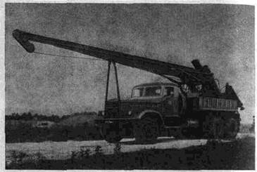
Рис 1. Самоходная сваебойная установка на базе КО-8 с гидравлическим извлекателем пробных инвентарных свай конструкции НИИМосстроя и СКБ-Мосстрой
В конце забивки следует произвести динамическое испытание сваи, выполняемое в соответствии с ГОСТ 5686-78*, СНиП 11-17-77 «Свайные фундаменты», «Инструкцией по проведению динамических испытаний свай дизельным молотом» (ВСН-156-79) и настоящей инструкцией. Для измерения упругих и остаточных отказов рекомендуется применять безинерционный отказомер конструкции НИИМосстроя.
5.16. После «отдыха» пробной сваи в грунте, то есть после перерыва между окончанием забивки и началом добивки, должно быть вторично выполнено динамическое испытание сваи тремя и пятью одиночными последовательными ударами молота.
Упругая прокладка до этого должна быть обмята предыдущей забивкой. Удары дизельным молотом производятся без подачи горючего.
Высота падения ударной части молота при динамическом испытании должна быть одинаковой при всех ударах и соответствовать заданной величине с точностью до двух см. За расчетный принимается наибольший средний отказ от трех или от пяти ударов. Допускаемая на сваю нагрузка, определенная в соответствии со СНиП 11-17-77 по результатам динамического испытания сваи после требуемого «отдыха», должна быть не менее указанной в проекте расчетной нагрузки на сваю.
5.17. Продолжительность «отдыха» устанавливается программой полевых испытаний в зависимости от состава, свойств и состояния прорезаемых грунтов, а также грунтов под нижним концом свай, но не менее:
3 суток - при песчаных грунтах, кроме водонасыщенных мелких и пылеватых;
6 суток - при глинистых либо разнородных грунтах;
20 суток - при глинистых грунтах мягко- и текучепластичной консистенции;
10 суток - при прорезании водонасыщенных мелких и пылеватых песков.
5.18. Испытания забивных свай динамической нагрузкой в просадочных грунтах природной влажности для оценки несущей способности свай не допускаются.
5.19. Испытания свай статическими осевыми вдавливающими нагрузками для определения несущей способности выполняются по заданию проектной организации. Статические испытания железобетонных свай производят установками с гидравлическим домкратом ДГ-200 или ДГ-100, упором для которого служит система стальных балок, прикрепленных к анкерным сваям (рис. 2).
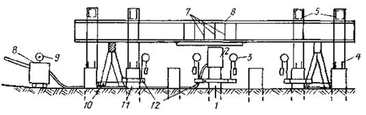
Рис. 2. Схема испытания свай статической нагрузкой в фундаменте дома при однорядном расположении свай:
1 - испытываемая свая; 2 - гидравлический домкрат; 3 - прогибомер; 4 - анкерные тяжи; 5 - поперечные балки; 6 - балки для упора домкрата; 7 - ребра жесткости; 8 - насосная станция; 9 - манометр; 10 - козлы; 11 - анкерная свая; 12 - хомуты
5.20. Испытания статической нагрузкой забивных свай следует проводить после «отдыха» свай в грунте, определяемого согласно п. 5.17. настоящей инструкции. Испытания должны проводиться в соответствии с ГОСТ 5686-78*. По заданию проектной организации для контроля правильности результатов динамических испытаний могут быть проведены ускоренные испытания свай статической нагрузкой в соответствии с ВСН-157-79.
5.21. Количество анкерных свай должно быть достаточным для восприятия максимальной нагрузки при испытании как по сопротивлению их выдергиванию, так и по прочности материалов. При использовании рабочих свай фундамента в качестве анкерных остаточное перемещение анкерных свай в грунте под действием выдергивающей нагрузки недопустимо.
5.22. Глубина погружения анкерных свай должна быть не больше глубины погружения испытываемой сваи. Расстояние в осях от испытываемой сваи до анкерной, а также до опор реперной установки должно быть не менее пяти наибольших размеров поперечного сечения сваи.
5.23. Для выявления сопротивления грунта под острием сваи, величины силы трения по ее боковой поверхности и силы возможного негативного трения, по указанию проектной организации могут быть испытаны при помощи гидравлического домкрата инвентарные стальные сваи конструкции НИИМосстроя в соответствии с приложением 1 настоящей инструкции.
5.24. Для определения оптимальной длины сваи производят, ее испытания динамической нагрузкой. При этом глубину забивки последовательно увеличивают из расчета получения несущей способности в диапазоне нагрузок, приходящихся на сваю при различных вариантах фундаментов (например 50, 70 т), если это возможно по грунтовым условиям.
5.25. С учетом результатов выполненных испытаний и возможного негативного трения определяется оптимальная глубина погружения свай, соответствующая более экономичному варианту фундамента.
5.26. При наличии грунтов, значительно уплотняющихся в результате забивки, особенно при многорядном и кустовом расположении свай, необходимо учитывать возможность уменьшения глубины погружения части свай в результате уплотнения грунта.
Приемка, транспортирование и хранение железобетонных свай и элементов сборного железобетонного ростверка
5.27. Качество железобетонных свай должно соответствовать требованиям ГОСТ 19804.0-78, ГОСТ 19804.1-79, ГОСТ 19804.2-79, ГОСТ 19804.4-78.
5.28. Прочность бетона свай при получении их со склада не должна быть ниже 100 % проектной.
5.29. Каждую партию свай предприятие-изготовитель обязано снабдить документов в котором удостоверяется соответствие свай требованиям действующего стандарта и указывается:
наименование и адрес предприятия-изготовителя;
номер партии и дата ее изготовления;
марка и количество свай;
прочность бетона свай;
результаты испытаний свай.
На каждой свае несмываемой краской должна быть обозначена марка сваи, дата изготовления и марка предприятия-изготовителя.
5.30. При приемке сваи надлежит освидетельствовать с целью установления соответствия их качества действующим стандартам.
Отклонения размеров железобетонных свай от проектных не должны превышать величин, предусмотренных СНиПами и ГОСТами.
Поверхность свай должна быть гладкой, без раковин и местных неровностей.
Трещины на участках поверхности свай, подверженных попеременному замораживанию и оттаиванию, а также воздействию агрессивной среды, не допускаются. В остальных местах допускаются только волосяные трещины шириной не более 0,2 мм.
Смещение острия сваи от центра не должно превышать 10 мм. Наклон плоскости верхнего торца сваи к плоскости, перпендикулярной ее оси, должен быть не более 1 %.
5.31. Приемка элементов сборного ростверка должна производиться в соответствии со СНиП III-16-80 и действующими техническими условиями на производство и приемку строительных и монтажных работ.
Обнажение арматуры, раковины и трещины на поверхности горного ростверка не допускаются.
5.32. Строповку свай и элементов сборного ростверка при подъеме надлежит производить в местах, предусмотренных проектом.
При укладке указанных изделий на транспортные средства, а также в штабеля при разгрузке, их следует опирать на специальные деревянные прокладки, располагаемые рядом с подъемными петлями по вертикали: одна над другой. Для сохранности подъемных петель толщина прокладок должна быть на 2 см больше высоты петли, либо петли должны размещаться в зазоре между изделиями (при шахматном расположении их по высоте).
При перевозке конструкций должны быть приняты меры против их повреждения.
Сваи и элементы ростверка надлежит укладывать в штабеля горизонтальными рядами так, чтобы была видна маркировка.
Прокладки под нижним рядом штабеля должны иметь размеры, обеспечивающие устойчивость основания под штабелем.
5.33. На стройплощадке сваи рекомендуется укладывать в один ряд по высоте в зоне действия сваебойного агрегата с таким расчетом, чтобы сразу поднимать их на копер.
Перетаскивание свай по земле волоком без специальных приспособлений, обеспечивающих их сохранность, запрещается.
5.34. Производство свайных работ при устройстве фундаментов домов разрешается после корректировки проекта фундамента на основании результатов пробной забивки и испытания свай.
5.35. Производитель работ должен иметь проект производства работ по устройству свайного фундамента, содержащий график их производства, ведомость необходимого оборудования, схему раскладки свай и движения сваебойной установки, технологическую карту на устройство ростверка.
До начала свайных работ следует, произвести инструментальную разбивку осей здания, свайных рядов и надежно закрепить их, при помощи стальной рулетки разбить оси свай и закрепить их стальными штырями диаметром 6-8 мм и длиной 200-250 мм. Вне пределов возможных осадок грунта установить временные реперы, привязанные к постоянному реперу.
При необходимости следует заготовить специальные деревянные щиты или железобетонные плиты для укладки их под гусеницы сваебойного агрегата в случаях просадок и перекосов его на слабом грунте.
5.36. Забивку свай рекомендуется производить с применением самоходных полноповоротных установок на базе экскаваторов или кранов с дизельными молотами, а при малых объемах работ - установками на базе автомашин (например, типа КО-8).
Для забивки свай с повышенной точностью следует применять самоходные установки с самоустанавливающимися в вертикальное положение копровыми стрелами конструкции НИИМосстроя (рис. 3).
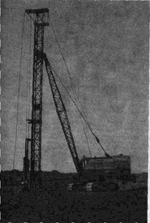
Рис. 3.
Сваебойная установка с управляемой самоустанавливающейся
копровой стрелой конструкции
НИИМосстроя
5.37. В зоне работ сваебойного агрегата должно быть необходимое количество свай, уложенных в местах, предусмотренных проектом производства работ. При этом должна быть обеспечена возможность подъема и установки свай на место забивки без перетаскивания их волоком и без дополнительного перемещения сваебойного агрегата.
5.38. До погружения каждая свая должна быть размечена на метры от острия к голове несмываемой краской. Для последующего контроля длины каждой сваи, глубина ее погружения в грунт и абсолютная отметка поверхности грунта у сваи должны быть занесены в журнал забивки свай.
5.39. Для свай квадратного или прямоугольного сечения следует применять круглые в плане или поворотные стальные наголовники, позволяющие повернуть вокруг вертикальной оси установленную для забивки сваю так, чтобы положение ее граней соответствовало проектному. Поворот сваи производится посредством специального ключа. В наголовнике при штанговом дизель-молоте должна быть прокладка из двух слоев досок общей толщиной 10-12 см, или из других проверенных при производстве работ материалов, предохраняющих голову сваи от разрушения.
5.40. При транспортировании, подъеме и установке свай на место забивки следует предохранять их от ударов и изгиба.
5.41. После установки сваи на точку забивки отклонение острия сваи от проектного положения в плане на величину более 1 см недопустимо.
5.42. Перед началом забивки копровая стрела и свая должны быть приведены в вертикальное положение с соблюдением соосности сваи и молота.
5.43. В начале забивки сваи отклонения ее от вертикали должны своевременно выправляться соответствующими перемещениями копровой стрелы и молота, не допуская при этом повреждения сваи.
5.44. При производстве свайных работ ведется журнал забивки каждой сваи с последующим составлением сводной ведомости (согласно приложениям 5 и 6 настоящей инструкции)
5.45. В конце забивки свай величина среднего «отказа», определенного от каждого из трех последних залогов по 10 ударов в каждом, должна быть не более величины контрольного (расчетного) отказа, заданного в рабочих чертежах с учетом результатов испытания свай после «отдыха». При этом должен применяться молот, предусмотренный проектом.
5.46. Отклонения в плане от проектного положения забитых свай квадратного и прямоугольного сечения, полных круглых свай диаметром до 0,5 м не должны превышать:
при однорядном расположении:
поперек оси свайного ряда - 0,2Д
вдоль оси свайного ряда - 0,3Д
для кустов и лент при расположении свай в 2 и 3 ряда:
для крайних свай поперек оси
свайного ряда - 0,2Д
для остальных свай - 0,3Д
при сплошном свайном поле:
для крайних свай - 0,2Д
для средних свай - 0,4Д
для одиночных свай, см - 5
При отклонении свай от проектного положения расстояние в свету от сваи до края ростверка должно быть не менее 5 см.
ПРИМЕЧАНИЯ:
1. Д - размер меньшей стороны поперечного сечения сваи или диаметр, круглой сваи.
2. Число свай, имеющих максимально допустимые отклонения от проектного положения, не должно превышать при ленточном расположении 25 % общего числа свай.
Отклонение оси сваи от вертикали не должно превышать 1 см на 1 м длины.
Исправление положения сваи после забивки путем горизонтального смещения сваи в грунте каким-либо усилием (копровой стрелой, тросом и т.д.), могущее вызвать излом, категорически запрещается.
5.47. Если забитая свая отклонилась от проектного положения и не может быть использована как полноценная, взамен нее должна быть забита дублирующая свая, причем забивать ее необходимо своевременно - до перехода сваебойного агрегата на другой ряд. Для этого необходимо проверить правильность положения свай сразу же после забивки каждого ряда.
5.48. В целях контроля за несущей способностью свай забивка каждой рабочей сваи должна производиться до расчетного «отказа» в соответствии с требованиями проекта, СНиП 11-17-77 и ГОСТ 5686-78*.
Вопрос об использовании, замене или усилении сваи, забитой с недопустимым отклонением, поврежденной или не имеющей требуемой несущей способности, должен решаться проектной организацией.
5.49. Для контроля достижения сваями несущего слоя грунта при цельных сваях с повышенными расчетными нагрузками 60-70 т и более, а при необходимости - и в других случаях, по указанию представителя авторского надзора, должна быть проверена фактическая глубина погружения в грунт забитых свай. Проверка может быть выполнена импульсным методом, основанным на измерении времени прохождения прямого и отраженного электрического импульса по арматуре сваи. В качестве измерительного прибора используется индикатор кабельных неоднородностей марки Р-5-9, фиксирующий время прихода электрического импульса, отраженного от нижнего конца арматуры сваи.
5.50. Срубка голов забитых свай разрешается после приемки свайного поля представителем авторского надзора, оформляемой соответствующим актом.
5.51. Для приемки свайного поля строительная организация представляет следующие документы:
исполнительный план расположения свай с указанием отклонений их от проектного положения и дополнительно забитых (дублирующих) свай;
сводную ведомость погруженных свай по форме, приведенной в приложении 6;
акты приемки геодезической разбивки свайного поля;
результаты испытания свай.
5.52. В зимнее время устройство лидирующих отверстий для свай в мерзлом слое грунта осуществляется трестом Мосфундаментспецстрой с применением лидирующих желонок или управлениями механизации с применением ямобуров, желонок, тэнов и других устройств в зависимости от условий производства работ и характеристик грунта.
5.53. Монтаж и демонтаж сваебойных агрегатов на базе кранов-экскаваторов, ремонт и обслуживание навесного копрового оборудования (копровые стрелы, свайные молоты, инвентарные сваи, наголовники) и оборудования для статического и динамического испытания свай выполняются трестом Мосфундаментспецстрой. Ремонт и обслуживание базовых машин копровых установок, перебазировка копровых агрегатов, а также других машин и механизмов, используемых при устройстве свайных фундаментов, производятся организациями, на балансе которых они находятся.
5.54. Ввод копров или навесного копрового оборудования в эксплуатацию разрешается при наличии на них паспортов и соответствующей технической документации, в том числе инструкции по эксплуатации, монтажу и демонтажу; карт смазки и технического обслуживания; акта на окончание монтажных работ, имеющего заключение о технической исправности копра, навесного оборудования и базовой машины; а также при наличии обученного персонала и лиц, ответственных за организацию безопасной работы (последние назначаются приказом по строительной организации из числа инженерно-технических работников, по одному человеку в каждую смену работ на объекте).
Копер и свайный молот вводятся в эксплуатацию после их приемки комиссией по акту. Комиссия назначается приказом по строительной организации.
В состав комиссии по приемке копра в эксплуатацию входят: производитель работ (мастер); главный механик строительной организации; бригадир копровщиков (его помощник); лицо, ответственное за техническое состояние базовой машины (крана, экскаватора, трактора); машинист копра (базовой машины).
Акт приемки копра составляется в трех экземплярах: первый хранится на месте работ копра у производителя работ (мастера), второй - у главного механика строительной организации и третий - в управлении механизации владельца копра или базовой машины (крана, экскаватора, трактора).
5.55. За водоотлив из котлована в пределах сроков, установленных обоюдным графиком производства работ, отвечает генподрядчик. Водоотлив производится трестом Мосфундаментспецстрой, если сроки забивки свайных полей не соблюдены по его вине.
Устройство монолитного железобетонного ростверка
5.56. Устройство ростверков или монтаж и замоноличивание сборных оголовков производится трестом фундаментостроения или общестроительным трестом, являющимися генеральными подрядчиками. Устройство ростверка разрешается после приемки свайного поля представителем авторского надзора с составлением соответствующего акта. Срубка свай производится после приемки свайного поля.
5.57. Срубка свай и заделка их голов в ростверк должны быть выполнены в соответствии с проектом, Верхние торцы бетона свай, заделываемых в ростверк, должны быть горизонтальными. Бетон свай не должен иметь трещин и околов, уменьшающих защитный слой арматуры в узлах сопряжения свай с ростверками. Сваи должны быть заделаны в ростверк на глубину не менее 50 мм от его низа.
5.58. При устройстве монолитных ростверков надлежит руководствоваться проектом, ППР, СНиП III-15-76 «Бетонные и железобетонные конструкции монолитные», СН 393-78 «Инструкция по сварке соединений арматуры и закладных деталей железобетонных конструкций» и настоящей инструкцией.
5.59. Основание под монолитный ростверк должно быть тщательно спланировано по проектным отметкам и уплотнено.
5.60. Армирование ростверков следует выполнять преимущественно укрупненными арматурными каркасами и сетками заводского изготовления. При установке арматуры должна быть обеспечена предусмотренная проектом толщина защитного слоя бетона.
5.61. Опалубку ростверка следует применять разборно-переставную, собираемую из инвентарных щитов, допускающих многократную оборачиваемость. Рекомендуется применять опалубку, разработанную трестом Мосоргстрой, - «Опалубка металлическая для устройства ростверков», чертеж № 8866.
Опалубку надлежит надежно закрепить и устранить в ней неплотности, через которые может вытекать при бетонировании цементный раствор.
Размеры и положение опалубки должны соответствовать проекту.
5.62. До начала работ по бетонированию ростверка с представителем авторского надзора должны быть проверены правильность установки опалубки и арматуры, надежность их крепления, обеспечение требуемого защитного слоя бетона с оформлением соответствующих актов на освидетельствование скрытых работ.
Опалубка, основание ростверков и верхние торцы свай должны быть очищены от мусора, снега и льда. Обогрев паром или промывка водой в зимнее время не разрешается.
5.63. При устройстве ростверков должен вестись геодезический контроль за обеспечением правильного положения конструкций в соответствии с требованиями «Инструкции по производству геодезических работ при строительстве крупнопанельных жилых зданий» ВСН-23-77 (Главмосстрой, 1977).
5.64. Бетонирование ростверков надлежит осуществлять в соответствии с требованиями СНиП III-15-76 с тщательным уплотнением бетонной смеси вибратором.
Подача бетона в опалубку бункерами, ковшами, опрокидывающимися бадьями или специальными механизмами, предусмотренными ППР, должна производиться так, чтобы арматура ростверка не была деформирована или смещена с проектного положения и чтобы бетонная смесь не расслаивалась на месте укладки.
Высота свободного сбрасывания смеси в момент выгрузки не должна превышать 1 м. Для предотвращения расслаивания бетон следует подавать в опалубку ростверка без образования куч, так как скатывание по их наклонным поверхностям приводит к отделению крупного инертного заполнителя.
5.65. Продолжительность перерывов в бетонировании, при которых требуется устройство рабочих швов, должна определяться лабораторией в зависимости от вида и характеристики применяемого цемента и температуры твердения бетона. Укладка бетонной смеси после таких перерывов допускается после приобретения уложенным бетоном прочности не менее 15 кг/см2.
5.66. Поверхность рабочих швов должна быть перпендикулярна продольной оси бетонируемого элемента ростверка. Для выполнения рабочих швов следует устанавливать стальную сетку из проволоки диаметром 1-1,1 мм с размером ячеек не более 5´5 мм. Сетка должна быть обезжирена.
5.67. Отделка верха бетона монолитного ростверка производится строго по проектным отметкам. Верх ростверка должен быть выровнен по уровню затиркой цементным раствором.
5.68. Уход за уложенным бетоном должен осуществляться в соответствии с п. 6.63-6.68, 6.77 настоящей инструкции.
5.69. После бетонирования ростверка хождение по бетону, не набравшему прочности 15 кг/см2, или иное его загружение не разрешается.
5.70. Снятие боковых элементов опалубки, не несущих нагрузки от массы конструкций, допускается только после достижения бетоном прочности, обеспечивающей сохранность поверхности и кромок углов.
5.71. Обнажение арматуры и раковины на поверхностях ростверка, а также в местах сопряжения ростверка со сваями не допускаются.
5.72. Снятие несущей опалубки и возведение на свайном фундаменте вышележащих конструкций разрешается не ранее достижения бетоном ростверка или монолитных стыков 70 % проектной прочности если нет в проеме указаний по этому вопросу.
5.73. Заделка колонн в стаканы ростверков должна быть выполнена с особой тщательностью, с обеспечением 100 %-ной проектной прочности бетона в заделке.
5.74. Полная расчетная нагрузка фундамента должна производится не ранее достижения бетоном ростверка проектной прочности.
5.75. Перед монтажом сборных железобетонных оголовков сваи должны быть ровно срублены по проектной отметки. Верхний торец сваи после срубки должен быть горизонтальным, без трещин и околов. Срубку свай рекомендуется производить с применением хомута конструкции НИИМосстроя.
5.76. При монтаже сборные оголовки устанавливаются на металлические стяжные рамки, укрепляемые на сваях строго по проектной отметке (рис. 4).
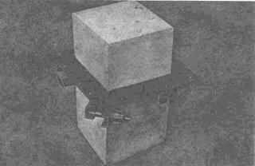
Рис. 4. Стяжная рамка для монтажа сборных оголовок на сваи
5.77. Сборные оголовки, а также головы свай надлежит тщательно очистить от грязи, снега и наледи. Рекомендуется произвести продувку их сжатым воздухом. Обогрев паром и промывка водой в зимнее время не разрешается.
Верх оголовка, установленного на сваю, должен быть горизонтален и отклонение его от проектной отметки не должно превышать 5 мм. Оголовок устанавливается на место так, чтобы зазоры между его стенками и боковыми гранями сваи со всех сторон имели одинаковые размеры. Несоосность оголовка со сваей не должна превышать 5 мм. Направление боковых граней оголовка в плане должно соответствовать проектному (рис. 5).
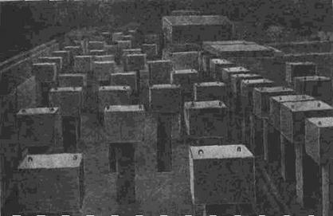
Рис. 5. Безростверковый фундамент из свай со сборными оголовками для жилого дома
5.78. Марка бетона или раствора для омоноличивания оголовки со сваей должна соответствовать проекту, но не ниже 200. При омоноличивании следует производить вибрирование и тщательное штыкование смеси, предотвращающее образование раковин и пустот между сваей и оголовком. Во время омоноличивания не должна допускаться утечка цементного молока из оголовка. Употреблять для омоноличивания оголовков начавший схватываться раствор или бетон запрещается.
5.79. При наличии сваи-дублера, когда необходимо объединить головы двух свай, оголовок устраивают из монолитного железобетона.
5.80. Монтаж сборного ростверка или перекрытий по оголовкам разрешается по достижении бетоном или раствором омоноличивания прочности, указанной в проекте. В процессе монтажа вышележащих конструкций следует избегать толчков и ударов по оголовкам.
5.81. Сборный ростверк или плиты перекрытия укладывают на раствор в соответствии с проектом. Укладка плит перекрытий или ростверка на схватившийся или замерзший раствор запрещается. Наличие пустот и раковин вышележащими элементами и оголовками недопустимо.
Монтаж сборных ростверок
5.82. Если проектом предусматривается опирание элементов сборных железобетонных ростверков непосредственно на сваи (рис. 6), то головы свай должны быть ровно срезаны или срублены отбойным молотком с применением инвентарного хомута конструкции НИИМосстроя, обеспечивающего возможность получения ровной поверхности и головы сваи на заданной отметке.
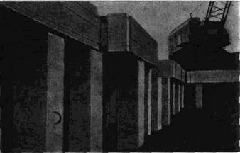
Рис. 6. Свайный фундамент со сборным плитным ростверком для жилого дома
5.83. Отклонение верхнего торца сваи от проектной отметки после срубки или срезки не должно превышать ±7 мм. Трещины и околы бетона не допускаются.
Перед укладкой сборного ростверка верхние торцы голов свай должны быть тщательно очищены от бетонной мелочи, грунта и наледи. На сваях заранее делаются маяки из цементного раствора под проектную отметку низа ростверка.
5.84. Раскладка раствора по торцам сваи должна производиться непосредственно перед укладкой элемента ростверка.
5.85. Марка раствора в шве между ростверком и сваей должна быть не ниже марки бетона сваи, но не менее 300, если в проекте нет других оказании по этому вопросу.
Подготовка грунтового основания
6.1. При использовании естественных грунтов в качестве оснований должны применяться методы строительных работ, не допускающие ухудшения природных свойств грунтов и качества подготовленного основания вследствие замачивания, размыва грунтовыми и поверхностными водами, повреждения механизмами и транспортными средствами, промерзания и выветривания.
Перерыв между окончанием разработки котлована и устройством фундамента, как правило, не допускается. При вынужденных перерывах должны быть приняты меры к сохранению природных свойств грунта Зачистка дна котлована до проектных отметок (на 5-7 см) должна производиться непосредственно перед устройством фундамента. Переборы грунта основания ниже проектных отметок не допускаются. Случайные переборы в отдельных местах должны быть заполнены местным грунтом или песком и доведены до естественной плотности.
В ответственных случаях места переборов заполняются гравием или тощим бетоном. Способ заполнения переборов грунта следует согласовать с проектной организацией.
6.2. До устройства фундаментов должны быть выполнены работы по отводу поверхностных и грунтовых вод от котлована и подкрановых путей. Это достигается путем организации стока поверхностных вод посредством вертикальной планировки территории, устройства открытых и закрытых водоотводных дренажных систем. Способ удаления воды из котлована (открытый водоотлив, дренаж, водопонижение и др.) должен быть выбран с учетом местных условии и согласован с проектной организацией. При этом должны быть предусмотрены меры против выноса с водой грунта из-под возводимых и существующих сооружения и нарушения природных свойств грунтовых оснований.
6.3. Открытый водотлив из котлована может быть применен в разнообразных грунтовых условиях и при различной глубине, но при обязательном соблюдении требований п. 6.2.
6.4. При устройстве дренажей должны выполняться требования к составу, размерам и свойствам дренирующих материалов, а также к соблюдению заданных уклонов дренажей.
6.5. Законченный и подготовленный для устройства фундаментов котлован должен быть освидетельствован и принят по акту (форма УГАСКа № 6) представителями Мосгоргеотреста и авторского надзора. Должны быть установлены реперы и закреплены оси здания.
Строительная площадка должна быть оборудована в соответствии с требованиями пп. 2.13-2.17 настоящей инструкции. К возводимому зданию должны быть завезены необходимые конструкции и инвентарь, смонтировано крановое оборудование. Приемку, складирование и хранение материалов следует производить в соответствии с ВСН-28-66 «Указания по приемке, складированию и хранению основных стройматериалов» и СНиП III-4-80.
Устройство подготовки под фундамент
6.6. К работам по устройству песчаной, бетонной или иной подготовки разрешаемся приступать только после доработки недобора грунта и при наличии акта о приемке котлована с грунтовым основанием, подготовленным в соответствии с требованиями пп. 6.1-6.5 настоящей инструкции.
6.7. Доработка недобора грунта (6-7 см), оставшегося на принятом по акту основании сверх проектных отметок, производится непосредственно перед устройством подготовки. При устройстве подготовки повреждение грунтового основания недопустимо. Песчаная, гравийная или щебеночная подготовка должна быть выполнена в соответствии с проектом и уплотнена.
6.8. Бетонирование бетонной подготовки производится по захваткам в соответствии с проемом производства работ.
6.9. Уплотнение уложенной в подготовку бетонной смеси производить поверхностными вибраторами типа ИВ-91 с последующим выравниванием поверхности подготовки виброрейками или рейками-правилами по маячным рейкам.
6.10. Если проектом предусмотрено устройство по бетонной подготовке цементно-песчаной стяжки, последняя устраняется путем выравнивания цементно-песчаного раствора рейками-правилами по маячным рейкам.
6.11. Гидроизоляция с прижимной плитой встраивается согласно проекту в соответствии с требованиями СНиП III-20-74 «Кровли, изоляция и теплоизоляция».
6.12. Поверхности бетонной подготовки и прижимной плиты следует сразу же после окончания схватывания цемента (в жаркую погоду через 6-8 ч после окончания укладки бетона, а в прохладную - через 12-24 ч) очистить от цементной пленки. При этом не должны допускаться повреждения бетона, прочность которого должна быть в пределах:
при обработке воздушной или водяной струей - 2-3 кг/см2;
при обработке механизмами, снабженными металлическими щетками, - 15-25 кг/см2;
при обработке с помощью гидропескоструйной установки или шарошки - 50-100 кг/см2.
Для удаления пленки с поверхности бетона не следует пользоваться ударными инструментами (отбойными молотками, бучардами на базе перфораторов и др.).
Для удаления пленки с бетона рекомендуется пользоваться механизмами, оснащенными металлическими щетками и инерционными фрезами (например, механизмами конструкции ЦНИИОМТП, чертеж № 83500000, и с гибким валом - типа С-975).
6.13. При устройстве монолитной фундаментной плиты по свайному основанию бетонная подготовка производится после срубки голов свай по проектным отметкам, очистки свайного поля от обломков бетонных свай, планировки, а при необходимости - и после уплотнения грунтового основания между сваями.
6.14. При выполнении бетонных работ должен быть обеспечен уход за уложенным бетоном, предотвращающий его пересыхание и растрескивание, а также повреждение неокрепшего бетона дождем. Ходить и ездить по неокрепшему бетону запрещается.
6.15. Работы по подготовке грунтового основания и по производству бетонных работ в зимних условиях должны производиться с соблюдением требований соответствующих СНиПов и раздела 8 настоящей инструкции.
Устройство опалубки
6.16. При устройстве опалубки монолитных фундаментных плит и отдельных фундаментов надлежит руководствоваться рабочими чертежами проектом производства работ СНиП III-15-76 «Бетонные и железобетонные конструкции монолитные», «Руководством по применению опалубки для монолитных железобетонных конструкций» (ЦНИИОМТП, 1972) и настоящей инструкцией.
6.17. Наружная опалубка фундамента устанавливается из инвентарных деревянных щитов (например унифицированная опалубка ЦНИИОМТП) или в виде стенок из бетонных блоков, изготовляемых для стен подвала и используемых после распалубки по назначению.
6.18. Материал, конструкция и крепление опалубки устанавливаются проектной организацией с учетом устойчивости прочности и жесткости при воздействии распора бетонной смеси в процессе бетонирования. При этом опалубка должна обеспечивать проектное положение фундамента в плане и по высоте, а также заданную точность его размеров.
6.19. Для обеспечения многократной оборачиваемости обращенную к бетону поверхность щитов обивают тонкой листовой сталью либо пластмассовыми листами или др. материалами.
6.20. Опалубка должна быть плотной и не допускать при бетонировании утечки цементного молока через швы и щели, которые должны быть тщательно заделаны. Для облегчения распалубки обращенную к бетону поверхность опалубки следует смазывать, антиадгезионной смазкой (например, известковым молоком, цементным раствором или гидрофобным составом).
6.21. При выполнении работ по армированию фундаментной плиты в местах рабочих швов по границам блоков (захваток) бетонирования, определенных в технологической карте, устанавливается внутренняя опалубка, которая изготавливается в виде стальной сетки из проволоки диаметром 1-1,1 мм с размером ячеек не более 5´5 мм (рис. 7). Перед установкой и бетонированием сетка должна быть обезжирена. Сетки устанавливаются вертикально и крепятся вязальной проволокой к стержням нижней и верхней арматурных сеток плиты по линии рабочих швов. При толщине плит более 0,6 м сетки во избежание выпучивания усиливаются вертикальными, а при необходимости и горизонтальными арматурными стержнями, места расположения и диаметр которых должны быть указаны в ППР.
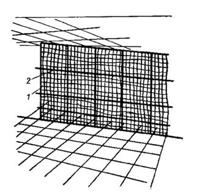
Рис. 7. Внутренняя опалубка рабочего шва плиты:
1 - вертикальные стержни усиления; 2 - горизонтальные стержни усиления
6.22. Смонтированная и подготовленная к бетонированию опалубка должна быть принята по акту. При этом отклонения плоскостей опалубки от вертикали не должны превышать 5 мм на 1 м высоты; смещение осей опалубки от проектного положения - 10 мм; местные неровности при проверке двухметровой рейкой - 3 мм. В провесе бетонирования надлежит вести непрерывное наблюдение за состоянием опалубки и креплений своевременно предотвращая деформации опалубки.
Армирование
6.23. Армирование фундаментов должно выполняться в соответствии с рабочими чертежами; проектом производства работ; главами СНиП II-21-75 «Бетонные и железобетонные конструкции. Нормы проектирования»; СНиП III-15-76 «Бетонные и железобетонные конструкции монолитные»; СНиП III-18-75 «Металлические конструкции»; ГОСТ 10922-75 «Арматура и закладные детали, сваренные для железобетонных конструкций. Технические требования»; «Руководством по производству арматурных работ»; (ЦНИИОМТП, 1977); настоящей инструкцией и другими действующими нормативными документами.
6.24. Монтаж арматуры фундаментной плиты или отдельного фундамента разрешается производить только после приемки по акту грунтового основания и подготовки под фундамент.
6.25. Арматуру следует монтировать укрупненными или пространственными заранее изготовленными элементами, по возможности сокращая объем применения отдельных стержней. Проект производства работ должен содержать указания о последовательности монтажа отельных элементов арматуры, способах стыкования стержней и крепления узлов необходимом оборудовании и приспособлениях.
Порядок установки арматуры должен быть увязан с технологической схемой бетонирования фундаментной плиты. Установка арматуры должна опережать бетонирование не менее чем на одну захватку.
6.26. С бетонной подготовки в местах установки арматуры должны быть удалены мусор, грязь, снег и лед. Стержни установленной в плиту арматуры должны быть обезжирены очищены от грязи, льда и снега налета ржавчины.
6.27. Требуемую проектом величину защитного слоя нижней арматуры следует обеспечивать посредством установки под нижние стержни заранее изготовленных бетонных прокладок (сухарей) размером 100´100 мм и толщиной равной требуемой толщине защитного слоя. Применение прокладок из обрезков арматуры; деревянных брусков и щебня запрещается. Для нижней арматуры монолитных фундаментных плит и отдельных фундаментов толщина защитного слоя должна быть не менее:
при наличии бетонной подготовки - 35 мм;
при отсутствии бетонной подготовки - 70 мм.
6.28. Отклонения от проектной толщины бетонного защитного слоя не должны превышать:
при толщине защитного слоя 15 мм и менее - 3 мм;
при толщине защитного слоя более 15 мм - 5 мм.
Смещение арматурных стержней при их установке, а также в арматурных каркасах и сетках не должно превышать 0,25 диаметра устанавливаемого стержня но не более 0,2 наибольшего диаметра стержня.
6.29. Армирование плиты выполняется в следующем порядке:
на бетонной подготовке производят разбивку осей каркасов (или подставок);
укладывают готовые бетонные прокладки для образования нижнего защитного слоя. Прокладки следует устанавливать так чтобы в процессе работ не деформировались стержни нижней сетки и везде под ней соблюдалась требуемая толщина защитного слоя;
по прокладкам согласно проекту укладывают унифицированные сетки или (если сетка выполняется из россыпи стержней) заранее сваренные в плети стержни нижней сетки. Плети сваривают из стержней товарной длины согласно спецификации проекта или с учетом условий транспортирования на место укладки.
По нижней сетке производится установка каркасов, сварка их между собой, приварка или привязка их к нижней сетке. На каркасы укладывают унифицированные сетки или заранее сваренные в плети стержни верхней арматурной сетки с приваркой или привязкой их к стержням каркасов (рис. 8, 9). Если вместо каркасов для поддержания верхней арматуры предусмотрена установка заготовляемых централизованно подставок (монтажных столиков), то эти подставки устанавливаются без приварки к арматуре нижней сетки так, чтобы концы угловых стоек опирались на бетонную подготовку или же нижние поперечные элементы подставки опирались на стержни нижней сетки. Затем в соответствии с проектом по подставкам раскладываются и свариваются либо связываются с ними унифицированные сетки или сваренные в плети стержни верхней арматурной сетки (рис. 10, 11).
6.30. Стыковые соединения арматуры следует выполнять в соответствии с проектом и требованиями СНиП II-21-75 «Бетонные и железобетонные конструкции», СН 393-78 «Инструкция по сварке соединений арматуры и закладных деталей железобетонных конструкций» (Москва 1979), ГОСТ 14098-68 «Соединения сварные арматуры железобетонных изделий и конструкций. Контактная и ванная сварка» и других действующих нормативных документов.
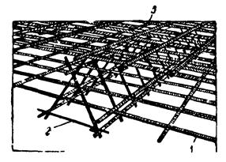
Рис. 8. Армирование плиты по схеме нижняя арматурная сетка - плоские или пространственные каркасы - верхняя арматурная сетка:
1 - нижняя сетка; 2 - каркас; 3 - верхняя сетка
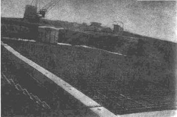
Рис. 9. Установка арматуры монолитной фундаментной плиты
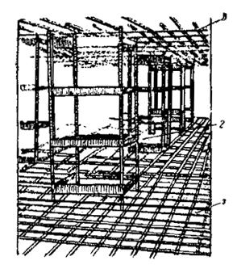
Рис. 10. Армирование плиты по схеме нижняя арматурная сетка - монтажный столик - верхняя арматурная сетка:
1 - нижняя сетка; 2 - монтажный столик; 3 - верхняя сетка
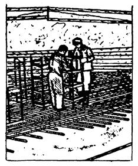
Рис. 11. Установка монтажных столиков при армировании плиты
Крестовые пересечения стержней арматуры, смонтированных поштучно, в местах их пересечения, обозначенных в проекте, следует скреплять вязальной проволокой или с помощью специальных проволочных соединительных элементов (скрепок). При диаметре стержней свыше 25 мм их скрепления следует выполнять дуговой сваркой.
6.31. Стыки рабочей арматуры, а также сварных сеток и каркасов в рабочем направлении внахлестку без сварки должны иметь длину перепуска не менее величины, требуемой СНиП II-21-75. При этом стыки должны располагаться вразбежку так, чтобы площадь сечения рабочих стержней, стыкуемых в одном месте или на расстоянии менее перепуска, составляла не более 50 % общей площади сечения растянутой арматуры при стержнях периодического профиля и не более 25 % - при гладких стержнях. Стыки внахлестку сварных сеток в направлении рабочей арматуры из стали класса А-1 должны выполняться так, чтобы в каждой из стыкуемых в растянутой зоне сеток на длине нахлестки располагалось не менее двух поперечных стержней, приваренных ко всем продольным стержням сеток. Такие же стыки применяются и для стыкования внахлестку сварных каркасов с односторонним расположением рабочих стержней из всех видов стали. Стыки сварных сеток в направлении рабочей арматуры из горячекатаной стали периодического профиля классов А П, А-Ш и Ат-III выполняются без поперечных стержней в пределах стыка в одной или в обеих стыкуемых сетках. Стыки сварных сеток в нерабочем направлении выполняются внахлестку с перепуском, считая между крайними рабочими стержнями сетки:
при диаметре распределительной арматуры до 4 мм включительно - на 50 мм;
при диаметре распределительной арматуры более 4 мм - на 100 мм;
при диаметре рабочей арматуры 16 мм и более сварные сетки в нерабочем направлении допускается укладывать впритык друг к другу, перекрывая стык специальными стыковыми сетками, укладываемыми с перепуском в каждую сторону не менее 15 диаметров распределительной арматуры и не менее 100 мм.
6.32. Контроль качества сварных соединений арматуры должен производиться в соответствии с ГОСТ 10922-75 «Арматура и закладные детали сварные для железобетонных конструкций. Технические требования». Смонтированная арматура должна быть закреплена от смещений и предохранена от повреждений, могущих иметь место при бетонировании.
6.33. Приемка смонтированной арматуры, а также сварных стыков соединений должна осуществляться до укладки бетона, производиться при участии представителя авторского надзора и оформляться актом освидетельствования скрытых работ.
Бетонирование
6.34. Бетонирование монолитной фундаментной плиты и отдельных фундаментов должно производиться в соответствии с рабочими чертежами, проектом производства работ, СНиП III-15-76 «Бетонные и железобетонные конструкции монолитные. Правила производства и приемки работ», настоящей инструкцией, «Руководством по производству бетонных работ» (М.: Стройиздат, 1975), «Карты пооперационного контроля производства работ по устройству монолитных фундаментных плит» (Мосоргпромстрой, 1975) и СНиП III-4-80 «Техника безопасности в строительстве. Правила производства и приемки работ».
6.35. Бетонирование разрешается выполнять только после освидетельствования и приемки по акту бетонной подготовки, стяжки, прижимной плиты, арматуры плиты и опалубки при условии письменного разрешения авторского надзора в журнале работ.
6.36. Положение в плане, высотные отметки и размеры арматуры и опалубки фундамента, подготовленных к бетонированию, должны соответствовать проекту и требованиям соответствующих СНиПов.
6.37. Перед бетонированием фундамента бетонную подготовку (или прижимную плиту), опалубку и арматуру следует очистить от мусора, грязи, битума, масел; промыть (при положительной температуре); воду, оставшуюся на поверхности, удалить. В зимнее время удалить снег и наледь, что рекомендуется производить горячим воздухом под брезентом пли полиэтиленовым укрытием. Удалять снег и наледь паром или водой не разрешается. Арматура должна быть очищена от налета ржавчины. Обращенные к бетону поверхности деревянной опалубки (подлежащей разборке) и блочной прижимной стенки, должны быть обильно окрашены известковым или цементным молоком или покрыты гидрофобным составом, а щели в опалубке - заделаны.
6.38. До начала бетонирования плиты проект производства работ при необходимости следует корректировать в соответствии с возможностями строительных организаций и условиями обеспечения производства работ.
6.39. Бетонирование плиты следует производить непрерывным способом в пределах отдельных блоков (захваток), по границам которых устраиваются рабочие швы (см. п. 6.21).
6.40. Расположение, объем и сроки бетонирования блоков (схема бетонирования плиты) устанавливаются проектом и отражаются в ППР по согласованию со строительной организацией с учетом:
принятого метода и темпов бетонирования;
площади, толщины и конфигурации плиты;
условий обеспечения фронта работ по бетонированию;
необходимости выполнить бетонирование блока не больше чем за одну или две смены.
6.41. Для предотвращения температурно-усадочных трещин массивные плиты бетонируют отдельными зонами, включающими несколько блоков. Количество блоков в зонах и расположение их определяются проектом. Бетонирование замыкающих блоков должно производиться только после усадки и охлаждения смыкаемых блоков.
6.42. Во избежание образования не предусмотренных проектом рабочих швов в плите (наклонных и горизонтальных), снижающих прочность плиты, необходимо выбрать такой способ и темп бетонирования, чтобы каждый блок (захватка) был полностью забетонирован в требуемое время без недопустимых перерывов в бетонировании. Допустимый разрыв во времени при бетонировании соседних блоков (захватов) устанавливается ППР. Укладка бетонной смеси после перерывов в бетонировании допускается после приобретения уложенным бетоном прочности не менее 15 кг/см2.
6.43. В зависимости от условий строительства подача бетонной смеси в опалубку плиты может осуществляться:
краном с бункерами (бадьями) с доставкой бетонной смеси, автобадьевозами, автобетоновозами или самосвалами;
непосредственно из автобетоновоза, автобетоносмесителей или самосвалов с задней и боковой разгрузкой;
краном с бункерами (бадьями) совместно с укладкой бетонной смеси из автобетоновозов, автобетоносмесителей или самосвалов непосредственно в плиту;
бетононасосом или пневмонагнетателем с подачей бетонной смеси к ним автобетоносмесителями;
бетоноукладчиком;
ленточными транспортерами, ленточными конвейерами - бетоноукладчиками ЭПКБ Минтяжстроя, ЦНИИОМТП и ПКБ Главэнергостроймеханизация.
6.44. Бетонирование с помощью кранов с бункерами (бадьями) следует применять при наличии большого количества выпусков арматуры в плитах (для последующего бетонирования стен, ядер жесткости и др.) при темпах работ по бетонированию до 50 м3 в смену на один кран.
6.45. Бетонирование из автобетоносмесителей, автобетоновозов и автосамосвалов непосредственно в плиту следует применять для плит с объемом укладки до 200-300 м3 в смену. Для такого темпа работы необходимы соответствующий фронт работ, подъезды (пандусы).
Плиты, в которых арматурный каркас запроектирован с учетом нагрузок от езды автотранспорта, загруженного бетонной смесью, следует бетонировать методом «на себя» с проездом автотранспорта по деревянному настилу, уложенному по верхней арматурной сетке (рис. 12).
Плиты, в которых арматурный каркас запроектирован без учета упомянутых нагрузок, могут бетонироваться методом «от себя» (рис. 13) с проездом самосвалов по вложенному бетону после достижения бетоном необходимой по расчету прочности но не менее 50 кг/см2.
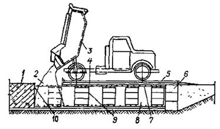
Рис. 12. Бетонирование плиты автобетоносмесителями, автобетоновозами или автосамосвалами методом «на себя»:
1 - готовый участок плиты; 2 - бетонная смесь; 3 - автобетоновоз; 4 - накат из бревен; 5 - настил из досок; 6 - прижимная стенка; 7 - верхняя арматурная сетка; 8 - нижняя арматурная сетка; 9 - столик или промежуточный арматурный каркас; 10 - рабочий шов
6.46. Проезд автотранспорта по уложенному бетону осуществлять по полосам шириной 0,7 м из досок толщиной 40 мм, укладываемых под колеса автосамосвалов. Конструкция настила для проезда самосвалов по верхней сетке арматурного каркаса определяется ППР.
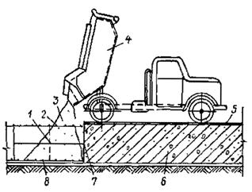
Рис. 13. Бетонирование плиты
автобетоносмесителями,
автобетоновозами или
автосамосвалами методом «от себя»:
1 - арматурный каркас; 2 - верхняя арматурная сетка; 3 - бетонная смесь; 4 - автобетоновоз; 5 - настил из досок; 6 - готовый участок плиты; 7 - рабочий шов; 8 - нижняя арматурная сетка
6.47. Для въезда-съезда автотранспорта с бетонной смесью на возводимые плиты необходимо устраивать временные пандусы.
6.48. Бетонирование с помощью кранов с бункерами (бадьями) совместно с укладкой бетонной смеси из автотранспорта непосредственно в плиту следует применять при необходимости укладки бетона в темпе, превышающем 50 м3 в смену. Работу выполнять согласно п. 6.45 (рис. 14).
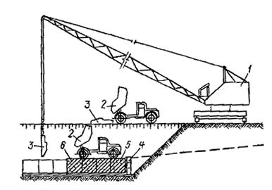
Рис. 14. Одновременная укладка бетонной смеси краном с бадьями, из самосвалов с задней и боковой разгрузкой или автобетоновозов непосредственно в плиту:
1 - кран; 2 - самосвал (автобетоновоз); 3 - бадья; 4 - прижимная стенка; 5 - деревянный настил; 6 - плита
6.49. Бетонирование плиты бетононасосом следует производить при необходимости обеспечения высоких темпов бетонирования (до 250 м3 в смену) при условии доставки к насосу бетонной смеси, соответствующей паспортным данным (пластичность, крупность инертных составляющих и других параметров), автобетоносмесителями (СБ-92, СБ-69). Рекомендуемое время и режим транспортирования в автобетоносмесителях приведены в таблице приложения 7.
6.50. При бетонировании (см. п. 6.43) следует применять башенные, гусеничные или пневмоколесные грузоподъемные краны с бункерами (бадьями) емкостью 0,5-2,0 м3 с регулируемыми затворами.
Бетонную смесь следует доставлять автобадьевозами, автобетоновозами СБ-113, автобетоносмесителями СБ-92, СБ-69, С-1036Б, автосамосвалами.
Бетонирование плит с применением бетононасосов должно производиться в соответствии с требованиями нормативных документов, перечисленных в п. 6.34 и «Инструкции по транспортировке и укладке бетонной смеси в монолитные конструкции с помощью автобетоносмесителей и автобетононасосов «Штеттер» и «Томсен» на объектах Главмоспромстроя» (Мосоргпромстрой, 1978) и «Руководства по укладке бетонных смесей бетононасосными установками ЦНИИОМТП» (М.: Стройиздат, 1978).
6.51. Подачу бетонной смеси бетононасосами необходимо выполнять в соответствии со следующими правилами:
перед началом работ бетононасос и весь комплект бетоновода должны быть испытаны гидравлическим давлением, величина которого указывается в паспорте установки;
назначенный состав и подвижность бетонной смеси должны быть проверены и уточнены на основании пробных перекачек смеси;
внутренняя поверхность бетоновода должна быть непосредственно перед бетонированием увлажнена и смазана известковым или цементным раствором;
при перерывах (20-60 мин) в перекачке смеси необходимо каждые 10 мин прокачивать бетонную смесь по системе в течение 10-15 с на малых режимах работы бетононасоса При перерывах, превышающих указанное время, бетоновод должен быть опорожнен и очищен или промыт;
распределение бетонной смеси следует осуществлять с помощью специальных стрел, установленных в зоне бетонирования;
резинотканевые рукава, используемые для распределения бетонной смеси, должны иметь диаметр не более 125 мм.
6.52. Бетонирование плит с применением бетононасосов в зимних условиях должно производиться в соответствии с «Руководством по укладке бетонных смесей бетононасосными установками» ЦНИИОМТП (М.: Стройиздат, 1978).
6.53. Бетонная смесь должна укладываться в бетонируемую конструкцию горизонтальными слоями одинаковой толщины, без разрывов, с последовательным направлением укладки в одну сторону во всех слоях.
6.54. Для хождения людей при бетонировании по верхней сетке арматуры укладываются щиты из досок.
6.55. Продолжительность времени между укладкой и уплотнением последовательно укладываемых слоев бетонной смеси не должна превышать двух часов.
6.56. Бетонную смесь уплотняют внутренними вибраторами ИВ-19, ИВ-19А, ИВ-47, ИВ-78, ИВ-80, ИВ-59, ВП-1, ВП-3 и др. и поверхностными вибраторами ИВ-91.
6.57. Вибрирование уплотняемого слоя следует вести при положении внутреннего вибратора под углом 30-35° к горизонту.
6.58. Толщина укладываемого слоя бетонной смеси должна быть:
на 5-10 см меньше длины рабочей части вибратора - при применении тяжелых подвесных вертикально расположенных вибраторов;
равна вертикальной проекции длины рабочей части вибратора - при применении вибраторов, расположенных под углом к вертикали (до 35°).
Наибольшая толщина укладываемого слоя при использовании ручных глубинных вибраторов не должна превышать 1,25 длины рабочей части вибратора.
При уплотнении бетонной смеси поверхностными вибраторами толщина слоя не должна превышать 250 мм.
6.59. Уплотнение укладываемой бетонной смеси необходимо производить с соблюдением следующих правил:
шаг перестановки глубинных вибраторов не должен превышать полуторного радиуса их действия;
глубина погружения глубинного вибратора в бетонную смесь должна обеспечить углубление его в ранее уложенный слой на 5-10 см;
шаг перестановки поверхностных вибраторов должен обеспечивать перекрытие на 100 мм площадкой вибратора границы уже провибрированного участка;
опирание вибраторов во время их работы на арматуру и закладные части бетонируемых конструкций, а также на тяги и другие элементы ее крепления не допускается.
6.60. Уплотнение бетонной смеси зависит от продолжительности вибрирования. Уплотнение можно считать достаточным, если прекращается оседание смеси, выделение пузырьков воздуха, появляется цементное молоко на ее поверхности.
6.61. В случае обнаружения деформации или смещения опалубки бетонирование должно быть прекращено и опалубка исправлена до начала схватывания бетона.
6.62. Разбирать опалубку разрешается только при согласовании с производителем работ в сроки, предусмотренные СНиП III-15-76.
6.63. Во время дождя бетонируемый участок должен быть защищен (полимерной пленкой, легкими передвижными навесами, брезентовыми колпаками т.п.) от попадания воды в бетонную смесь. Бетон, размытый дождем, следует удалить.
6.64. По окончании бетонирования каждого блока (захватки) необходимо:
предохранять твердеющий бетон от ударов, сотрясений и других механических воздействий;
осуществлять мероприятия по выдерживанию свежеуложенного бетона до установленной прочности (уход за бетоном);
регулярно увлажнять поверхность бетона водой. После приобретения бетоном прочности 3-5 кг/см2 укрывать его поверхности гидрофильными материалами (брезент, мешковина, опилки, песок и др.), поддерживаемыми постоянно во влажном состоянии периодическим рассеянным поливом их водой. В начальный период ухода за бетоном, во избежание размыва и порчи его поверхности, следует укрывать его полимерными, пленками, брезентом, мешковиной.
6.65. Если постоянное увлажнение водой нецелесообразно или невозможно, бетон следует укрывать полимерными пленками (поливинилхлоридной, полиэтиленовой). Полотнища полимерной пленки должны быть по возможности максимальной площади; укладываться внахлестку; в местах нахлестки - плотно прилегать друг к другу, а их кромки - к бетону.
Покрывать бетон пленкообразующими составами (эмульсии, суспензии, растворы) следует только для ухода за бетоном, не предназначенным в дальнейшем для монолитного контакта с бетоном или раствором, и осуществлять нанесением на поверхность бетона специальных эмульсий или суспензий (например, эмульсии на основе битумов БН-I, БН-II БН-III или битумов нефтяных дорожных БНД-130/200, 60/90, изготовляемых по ВСН-35-70 Минтрансстроя), Пленкообразующие материалы следует наносить через 2-3 ч после укладки бетона с помощью краскопультов или пневматических пистолетов-разбрызгивателей. Выдерживать бетон с применением инвентарных устройств (передвижных тентов, шатров, навесов с ограждениями из полимерных пленок, брезента и др. пароводонепроницаемых тканей) целесообразно при больших объемах работ. При этом должно быть исключено сквозное продувание между устройствами и бетоном. В дождливую погоду свежеуложенный бетон следует укрывать пленками, мешковиной, брезентом и вышеперечисленными инвентарными устройствами.
6.66. Во избежание повреждения свежеуложенного бетона движущимися грунтовыми водами необходимо оградить его от размывания до достижения прочности не ниже 50 кг/см2.
6.67. Движение людей по забетонированным участкам плиты, а также установка на них лесов и опалубки для возведения вышележащих конструкций допускается при достижении бетоном прочности не ниже 15 кг/см2.
6.68. Движение автотранспорта и других машин по забетонированным участкам плиты разрешается только по достижении бетоном прочности, предусмотренной проектом производства работ, либо по согласованию с проектной организацией.
6.69. Проверка подвижности или жесткости бетона должна производиться у места его приготовления и укладки: не реже двух раз в смену - в условиях установившейся погоды и постоянной влажности заполнителей; и не реже чем через каждые два часа - при резком изменении влажности заполнителей, а также при переходе на приготовление смеси нового состава или из новой партии материалов.
6.70. Качество бетона в процессе укладки и после окончания бетонирования должно контролироваться в соответствии с требованиями СНиП III-15-76, ГОСТ 18105-72 главы 6 «Руководства по производству бетонных работ» (ЦНИИОМТП, 1975) и «Руководства по совершенствованию организации и проведения контроля качества при производстве строительно-монтажных работ» (ЦНИИОМТП, 1978).
Прочность бетона плиты определяется испытанием на сжатие контрольных бетонных кубов в соответствии с действующим ГОСТом.
6.71. Бетонирование плиты должно сопровождаться записями в «Журнале бетонных работ» по следующим пунктам:
дата начала и окончания бетонирования (по конструкциям, блокам, участкам и т.п.);
заданные марки бетона, рабочие составы бетонной смеси и показатели ее подвижности (жесткости);
объем выполненных бетонных работ по отдельным частям сооружения;
дата изготовления контрольных образцов бетона, их количество, маркировка (с указанием места конструкции, откуда взята бетонная смесь), сроки и результаты испытания образцов;
температура наружного воздуха во время бетонирования;
температура бетонной смеси при укладке (в зимних условиях), а также при бетонировании массивных конструкций;
тип опалубки и дата распалубки конструкции.
6.72. Результаты контроля качества бетона должны записываться в журнале по форме, установленной лабораторией строительной организации.
6.73. Бетонирование фундаментных плит в зимних условиях следует вести в соответствии с требованиями СНиП III-15-76, раздела 2 «Руководства по производству бетонных работ» (М.: Стройиздат, 1975), «Руководства по зимнему бетонированию с применением метода термоса» (М.: Стройиздат, 1978) и «Указаний по технологии бетонирования безобогревным способом монолитных железобетонных конструкций с применением ускоренного термоса» (ВСН-115-75 Главмосстроя).
6.74. Способы бетонирования фундаментных плит в зимних условиях, то есть при среднесуточной температуре наружного воздуха ниже +5 °С и минимальной суточной температуре ниже 0 °С, должны обеспечивать получение в заданные сроки бетона проектной прочности, морозостойкости, водонепроницаемости и других свойств, указанных в проекте, а также сохранение монолитности фундамента.
6.75. В зимних условиях температурно-влажностный режим выдерживания бетона монолитных фундаментных плит, имеющих, как правило, модуль поверхности £ 3, следует обеспечивать способом термоса или термоса с применением ускорителей твердения бетона.
При невозможности получения с помощью этих способов требуемой прочности бетона в заданные сроки могут быть применены способы ускоренного термоса (выдерживание бетона с противоморозными добавками методом термоса), и, как исключение, обогрева паром, горячим воздухом и в тепляках.
6.76. Состояние основания, на которое укладывается бетонная смесь, а также способ укладки с последующим выдерживанием бетона методом термоса должны исключать возможность замерзания бетона в контакте с основанием и деформации основания.
6.77. В зимних условиях открытые поверхности укладываемого бетона после окончания бетонирования (при больших поверхностях - по мере бетонирования отдельных участков), а также на время перерывов в бетонировании - должны тщательно укрываться пароизоляционным материалом (полимерная пленка, толь, рубероид и т.п.) и утепляться в соответствии с теплотехническим расчетом.
6.78. При бетонировании стаканов под колонны необходимо обеспечить соблюдение допусков, предусмотренных в рабочих чертежах, особенно в отношении отметок днищ стаканов и их размеров.
6.79. Сборные железобетонные башмаки со стаканами под колонны подземной части здания следует устанавливать на слой цементного раствора предусмотренной проектом марки, выверяя положение их как по осям здания, так и по отметке днища стакана.
Полносборные ленточные фундаменты
6.80. По окончании земляных работ перед устройством ленточных фундаментов необходимо тщательно проверить расположение основных осей здания и вынести их на строительную обноску, устанавливаемую на расстоянии не менее трех метров от бровки котлована.
6.81. Основание под фундаменты должно быть тщательно выверено по нивелиру в соответствии с проектными отметками.
6.82. Для разбивки фундамента рекомендуется применять инвентарную трубчатую обноску. Положение осей здания фиксируется струнами из стальной проволоки, натягиваемыми по осям на обноске, и переносится на дно котлована с помощью отвесов, опускаемых с натянутых струн.
6.83. Фундаментные блоки следует укладывать на тщательно выровненное песчаное основание или песчаную подушку толщиной не менее 5 см. Не допускается укладывать блоки фундамента на насыпной слой грунта.
Случайные переборы грунта в отдельных местах должны быть заполнены тем же грунтом (разрабатываемым в выемке) или песком и доведены до естественной плотности.
В отдельных случаях места переборов заполняются тощим бетоном. При этом способ заполнения переборов грунта следует согласовать с проектной организацией.
6.84. Монтаж крупногабаритных деталей подземной части домов следует производить с транспортных средств. Для мелких элементов допускается устройство приобъектного склада.
6.85. Монтаж фундаментных блоков выполняется по захваткам. На каждой захватке монтаж надлежит начинать с укладки угловых и маячных блоков, располагаемых по крайним осям секций, производя тщательную инструментальную выверку правильности их положения относительно разбивочных осей и отметок (рис. 15). После этого последовательно укладываются промежуточные блоки, монтаж которых производится вдоль поперечных фундаментных лент в направлении «на кран». Промежуточные блоки устанавливаются по шнуру, натянутому между маячными блоками, по которому определяется положение монтируемых блоков в плане и по вертикали. В последнюю очередь на захватке укладывают фундаментные блоки входов.
В процессе монтажа разрывы между фундаментными блоками заполняют в соответствии с проектом (шириной до 70 мм - песком с послойным уплотнением, а более 70 мм - бетоном марки 200).
6.86. При монтаже фундаментных блоков должен осуществляться постоянный геодезический контроль за правильностью монтажа и соблюдением геодезической схемы соосности основных конструкций подземных частей здания.
Величина отклонения смонтированных фундаментных блоков от проектного положения не должна превышать следующих допусков:
смещение фундаментных блоков относительно разбивочных осей ±10 мм;
отклонение в отметках верхних опорных поверхностей фундаментных блоков - 10 мм.
6.87. Приемка фундаментов здания производится представителями заказчика, проектной и строительной организацией и оформляется соответствующим актом.
6.88. После окончания устройства фундамента производят обратную засыпку и уплотнение грунта под полы техподполья (подвала).
7.1. К монтажу сборных конструкций подземной части зданий разрешается приступать после инструментальной проверки соответствия проекту высотных отметок и положения в плане фундаментов приемки их, а также после устройства подготовки под полы техподполья. Приемка фундаментов производится представителями заказчика, проектной и строительной организаций и оформляется соответствующими актами. Без приемки оснований и фундаментов монтаж сборных конструкций подземной части здания запрещается.
7.2. Монтаж сборных конструкций подземной части дома следует осуществлять в соответствии с проектом, действующими СНиПами и настоящей инструкцией, соблюдая последовательность, предусмотренную проектом производства работ, обеспечивая устойчивость и пространственную жесткость конструкций в процессе сборки до окончательного их закрепления.
При монтаже сборных элементов следует придерживаться принципа установки элементов в направлении «на кран».
7.3. При выполнении монтажных работ должен вестись геодезический контроль за правильностью монтажа и обеспечением проектного положения основных конструкций подземной части здания.
7.4. Монтаж основных сборных элементов подземной части домов следует, как правило, производить непосредственно с транспортных средств, обеспечивая своевременную доставку, изделий по часовым транспортно-монтажным графикам.
Монтаж с транспортных средств должен вестись по специально разработанным в проектах производства работ технологическим картам и оперативной документации (по часовым графикам доставки и монтажа сборных деталей, комплектовочным ведомостям и т.п.).
7.5. Монтаж конструкций подземной части дома следует производить с разделением здания на захватки в соответствии с технологическими картами проекта производства работ.
7.6. Монтаж бетонных стеновых блоков следует производить горизонтальными рядами в пределах захватки. При этом поверхности наружных стен подвалов и подполья в целях уменьшения возможного воздействия морозного пучения должны выравниваться по наружной стороне. Поверхности внутренних стен выравниваются по одной из лицевых граней. Вертикальные стыки, а также отдельные места между блоками следует заделывать, руководствуясь требованиями проекта.
Крупнопанельные дома
7.7. Перед началом монтажа сборных конструкций подземной части дома необходимо:
определить монтажный горизонт (для чего производится нивелировка верха свайного ростверка, фундаментной плиты или ленточного фундамента);
произвести инструментальную разбивку проектных осей базовых панелей, панелей внутренних продольных и наружных стен, а также рисок, по которым в процессе монтажа осуществляется ориентация торцевых граней поперечных стеновых панелей;
при необходимости установить монтажные маяки под каждую стеновую панель на расстоянии 20-30 см от торцов.
7.8. Монтаж сборных элементов на каждой захватке рекомендуется производить поэтапно, начиная с установки панелей внутренних стен, в указанной ниже последовательности:
вначале устанавливаются базовые панели внутренних поперечных стен (рис. 16);
монтируются в направлении от базовых панелей панели внутренних поперечных стен, а затем примыкающие к ним панели внутренних продольных стен;
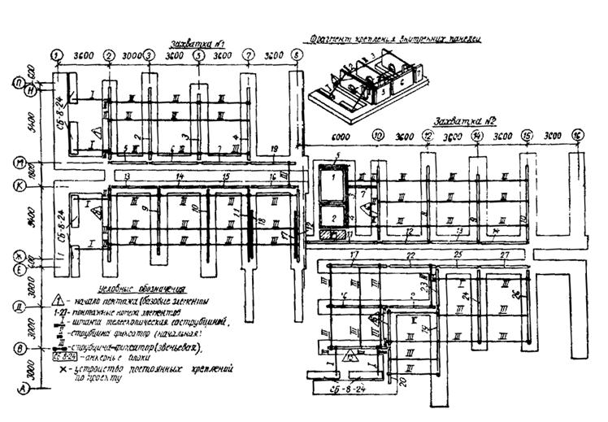
Рис. 16. Пример последовательности монтажа и временного крепления панелей внутренних стен подземной части жилого дома
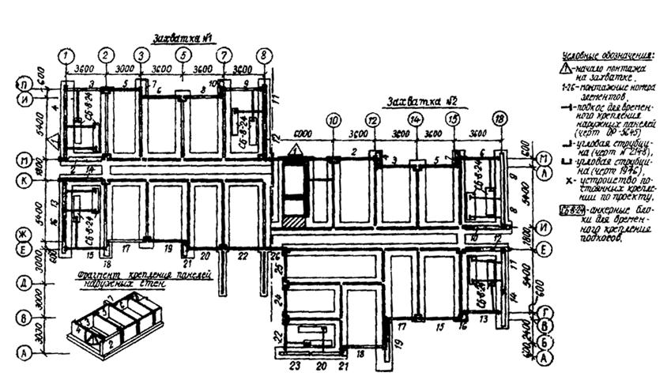
Рис. 17. Пример последовательности монтажа и временного крепления панелей наружных стен подземной части жилого дома
устанавливаются цокольные панели наружных стен (рис. 17);
монтируются элементы лестнично-лифтовых узлов;
после окончания монтажа панелей стен на захватках укладываются панели перекрытия. До начала монтажа перекрытия должны быть установлены постоянные крепления смонтированных элементов и произведена тщательная выверка положения верхних опорных граней панелей несущих стен, устроены полы и поданы в техническое подполье трубопроводы, узлы санитарно-технических систем, бойлеры и другое оборудование;
в последнюю очередь на захватке монтируются элементы входов.
В процессе совершенствования технологии производства работ допускаются отдельные изменения приведенной последовательности монтажа сборных элементов подземной части домов повышенной этажности. Однако все изменения в последовательности монтажа элементов должны быть обязательно увязаны с утвержденной проектной документацией (технологическими картами ППР).
7.9. Монтаж стеновых панелей подземной части домов повышенной этажности следует производить в соответствии с технологическими картами (разработанными трестом Мосоргстрой) и проектом производства работ, предусматривающими использование нормокомплекта грузозахватных и монтажных приспособлений. В нормокомплект входят штанги с осевым зажимом, предназначенные для временного крепления и установки панелей внутренних поперечных несущих стен в проектное положение по их геометрическим осям, и монтажные связи для временного крепления панелей внутренних продольных и наружных стен.
Перед началом монтажа необходимо произвести контрольную регулировку штанг по шаблону с точностью до ±5 мм.
На каждой захватке монтаж внутренних стеновых панелей следует начинать с установки базовых панелей, производя тщательную инструментальную выверку правильности их положения с помощью геодезических инструментов, так как от точности установки базовых элементов зависит точность монтажа последующих панелей. Базовые панели необходимо временно надежно крепить двумя телескопическими подкосами, закрепляемыми за инвентарные петли на верху панелей, а внизу - за монтажные петли анкерных блоков или к специальным петлям, закладываемым при бетонировании ростверка или плиты.
После выверки и временного закрепления базовых панелей приступают к монтажу остальных панелей внутренних поперечных стен, установку которых ведут последовательно в направлении от базовых панелей с закреплением их в двух уровнях по высоте штангами с осевыми зажимами. Каждую очередную стеновую панель, подаваемую монтажным краном к месту установки, опускают, не доводя до растворной постели на 3-4 см, и после этого закрепляют штангами к ранее установленной панели. Закрепление производят тремя штангами: одной внизу - в проеме для пропуска коммуникаций и двумя - по верху панели. После закрепления штангами панель опускают, и она занимает проектное положение, так как три точки фиксации с помощью штанг гарантируют параллельность по отношению к базовой панели, а конструкция осевого зажима штанги обеспечивает установку панели по геометрическим осям. Положение панелей внутренних стен в поперечном направлении при монтаже контролируют по их торцевым граням и рискам, нанесенным на фундамент, или по шнуру.
Панели внутренних продольных стен устанавливают по рискам и крепят к установленным панелям поперечных стен двумя монтажными связями или путем установки постоянных креплений.
Панели внутренних стен монтируют на цементном растворе марки 200, расстилаемом на опорные поверхности фундамента.
Панели наружных стен устанавливают на слой цементного раствора, ориентируя их по рискам геодезической разбивки, и временно закрепляют каждую панель в двух точках монтажными связями, струбцинами или штангами для крепления торцевых наружных панелей к ранее установленным панелям внутренних поперечных стен.
7.10. Сразу же за установкой стеновых панелей и их временным закреплением должны устраиваться постоянные связи, предусмотренные архитектурно-строительной частью проекта.
7.11. Способы временного крепления сборных элементов подземной части дома при их монтаже, а также типы временных креплений, количество, порядок установки и время крепления устанавливаются технологическими картами проекта производства работ.
7.12. Освобождение установленных элементов от временных креплений может производиться только после устройства постоянных связей, предусмотренных проектом.
7.13. Перечень рекомендуемой монтажной оснастки, грузозахватных приспособлений и инвентаря для монтажа подземной части домов повышенной этажности приводится в проекте производства работ.
7.14. После окончания монтажа и постоянного закрепления в соответствии с проектом панелей внутренних и наружных стен снимают монтажные приспособления и приступают к монтажу панелей перекрытия над техническим подпольем.
Монтаж панелей перекрытий следует вести на захватке посекционно, последовательно укладывая панели в направлении «на кран» от лестничной клетки, до границ секции. Панели перекрытия монтируют на пластичном цементном растворе, расстилаемом только на опорные поверхности панелей несущих стен непосредственно перед укладкой панелей. Монтаж панелей перекрытия следует производить с применением универсального грузозахватного устройства с автоматическим кантователем.
Стыки между торцами панелей перекрытия и наружными стенами утепляют вкладышами из полистирольного пенопласта ПСБ-С или плит ППС-75. После установки монтажных связей все стыки между панелями перекрытия, а также гнезда в местах расположения соединительных связей следует тщательно заделать цементным раствором марки 200.
7.15. Монтаж панелей наружных и внутренних стен, перекрытия и других сборных элементов подземной части домов выполняется на пластичном цементном растворе марки 200 с толщиной монтажных швов 20 мм. Выступающие подъемные петли после монтажа срезают заподлицо, а подъемные петли, находящиеся в лунках, не срезают, а лунки заделывают раствором.
Соединение панелей наружных и внутренних стен, перекрытия и других элементов осуществляется металлическими связями на сварке в соответствии с конструктивными решениями соответствующих узлов проекта.
Электросварка должна непрерывно следовать за монтажом конструкций и до замоноличивания стыков сдаваться по акту на скрытые работы лицам, осуществляющим технический и авторский надзор.
Противокоррозионная защита закладных деталей и соединительных связей должна выполняться в соответствии с проектом и требованиями СНиП II-28-73*, ВСН 106-75 и ВСН-141-77 Главмосстроя.
Все места сварки соединений сборных элементов, включая закладные и соединительные детали, после приемки соединений должны быть тщательно заделаны цементным раствором марки 200 в соответствии с проектом.
7.16. Заделка и герметизация стыков наружных стен подземной части домов повышенной этажности выполняются в соответствии с решениями узлов проекта и требованиями СН-420-71 и ВСН-15-75.
Местные заделки в стенах техподполья следует выполнять из бетона марки 200 на мелкой фракции.
7.17. Отверстия в настилах перекрытий для пропуска стояков инженерных сетей нужно сверлить, не нарушая ребер настилов.
Перед бетонированием монолитных участков перекрытия должно быть произведено освидетельствование армирования с составлением акта на скрытые работы.
7.18. После окончания монтажа перекрытия, установки постоянных связей и нанесения гидроизоляции на наружные поверхности стен технического подполья, соприкасающихся с грунтом, а также устройства (если это предусмотрено проектом) дренажа, производится обратная засыпка пазух грунтом и планировка участка вокруг здания. Засыпку грунта в пазухи следует выполнять бульдозером, передвигающимся под углом к наружным стенам так, чтобы давление от бульдозера через перемещаемый грунт не передавалось на конструкции здания.
Обратная засыпка пазух должна производиться послойно с тщательным уплотнением грунта пневматическими или другими трамбовками. В зимних условиях обратную засыпку пазух следует производить только талым грунтом.
7.19. По окончании работ нулевого цикла исполнитель сдает по акту законченную подземную часть здания со всеми относящимися к ней работами автору проекта, заказчику и представителям монтажного управления, осуществляющего монтаж надземной части, представляя при этом исполнительную геодезическую схему разбивки осей, смонтированных конструкций подземной части здания, а также другую документацию в соответствии с требованиями настоящей инструкции.
7.20. При приемке подземной части здания и работ нулевого цикла проверяются:
правильность разбивки здания;
соответствие фактических и проектных осей здания и смонтированных конструкций, а также отметок монтажного горизонта с учетом допусков, предусмотренных в СНиПе и проекте;
тщательность монтажа конструкций, устройства креплений и заделки стыков между элементами в соответствии с проектом;
отсутствие повреждений смонтированных конструкций и деталей;
наличие актов на скрытые работы;
готовность инженерных коммуникаций (тепло- и водоснабжения, канализации и электроснабжения) вертикальной планировки территории, подъездов и дорог.
Каркасно-панельные дома
7.21. Сборные железобетонные башмаки со стаканами под колонны подземной части здания следует устанавливать на слой цементного раствора марки 200, тщательно выверяя положение их как по осям здания, так и по отметке днища стакана.
Подколенники и стальные прокладники после тщательной выверки и закрепления следует подлить цементным раствором марки 200, предварительно установив по их периметру рамки из досок. Заливка раствором выполняется до его вытекания у противоположной грани рамки.
7.22. Торцевые поверхности колонн перед монтажом должны быть очищены от грязи, жировых пятен и наледи. Очистка поверхности должна производиться металлическими щетками без нарушения бетона торца колонны. Наледь следует удалять путем обогрева торцов горячим воздухом, электронагревательными приборами (например, ТЭНами и др.). Применять для этой цели пар или воду запрещается.
7.23. Для обеспечения необходимой точности при установке колонн каркаса в проектное положение и создания безопасных условий труда при монтаже следует применять групповые или одиночные кондукторы конструкции треста Мосоргстрой и СКБ Мосстрой.
7.24. Перед установкой колонн стаканы башмаков или фундаментов следует тщательно очистить, на их дно уложить слой цементного раствора марки 200 и отметку его верха выверить с помощью геодезического инструмента. После выверки и закрепления колонн в проектном положении пространство между ними и поверхностью стакана следует замонолитить бетоном марки 300 на мелком заполнителе. Для обеспечения качественного заполнения пространства заливать бетон необходимо со стороны одной грани колонны с тщательным уплотнением бетонной смеси внутренними вибраторами с диаметром рабочей части 34 мм.
При монтаже ригелей, стен жесткости, панелей перекрытия и других сборных элементов подземной части здания их следует немедленно закреплять к ранее установленным конструкциям путем электросварки закладных металлических деталей с последующей их антикоррозионной защитой в соответствии с проектом.
7.25. Очередность установки и обеспечение устойчивости элементов конструкций при монтаже, размеры захваток, а также совмещение с другими работами и технологическая последовательность выполнения устанавливаются проектом производства работ с учетом «Технических указаний по монтажу несущих конструкций плановой ячейки каркасно-панельного здания из унифицированных изделий Единого каталога» (Мосоргстрой, 1974).
7.26. Обратная засыпка пазух грунтом выполняется только с разрешения авторского надзора после окончания замоноличивания элементов каркаса и перекрытия подземной части здания, выполнения гидроизоляции обращенных к грунту поверхностей конструкций в соответствии с проектом.
8.1. Монтаж подземной части в зимних условиях при среднесуточной температуре ниже +5 °С и минимальной суточной температуре ниже 0° производится с соблюдением указаний настоящего раздела.
Температура наружного воздуха в данном климатическом районе, при которой следует прекратить производство работ на открытом воздухе или организовать перерывы для обогревания рабочих, устанавливается Московским городским исполкомом Совета депутатов трудящихся.
8.2. До наступления зимних условий на застраиваемой площадке должны быть выполнены:
мероприятия по предохранению от промерзания подлежащего разработке земельного участка (предварительное рыхление, удержание снегового покрова);
утепление, обогрев бытовых помещений для сушки одежды и обуви.
8.3. Рабочие должны быть обеспечены спецодеждой и обувью в соответствии с действующими нормами и характером выполняемой работы.
8.4. Проезды, проходы, подкрановые пути, погрузочно-разгрузочные площадки, рабочие места следует регулярно очищать от снега и наледи, дороги посыпать песком, шлаком или золой, проходы для рабочих при уклонах более 20° должны быть оборудованы стремянками или лестницами с боковыми ограждениями высотой 1,1 м.
8.5. Территория приобъектного склада должна быть очищена от снега и наледи до грунта, хранение деталей следует производить на прокладках увеличенной высоты, принимаемой в зависимости от грунтовых условий и типа складируемых изделий.
Хранение должно осуществляться в условиях, исключающих возможность деформирования, загрязнения и примерзания деталей. Запрещается завоз сборных элементов на неподготовленную площадку.
8.6. Очередность и последовательность выполнения работ нулевого цикла в зимних условиях зависят от степени готовности работ к началу зимнего периода, а именно:
если к началу зимы на строительной площадке закончена срезка растительного слоя и выполнена вертикальная планировка, остальные работы нулевого цикла - дворовые коммуникации и подземные части зданий - выполняются в порядке, предусмотренном п. 3.5 настоящей инструкции. Строительство постоянных дорог и отмосток переносится на теплое время года;
если к началу зимнего периода работы нулевого цикла не были начаты, то необходимо перенести на теплое время года возможно больший объем таких работ, как срезка растительного грунта, вертикальная планировка территории, а также строительство постоянных дорог и бетонные работы в технических подпольях зданий (устройство полов и отмосток).
Исключение допускается в случае необходимости срезки слоя земли толщиной более 1-1,5 м на месте будущего здания и площадках вокруг него, в местах расположения складов, путей и проездов, необходимых для стройки.
Такая очередность выполнения работ может вызвать в ряде случаев необходимость во временных дорогах для строительства, поскольку постройка постоянных дорог запаздывает, установки кранов и размещения материалов и деталей с выполнением необходимых подсыпок талым песчаным грунтом по неспланированной площадке, так как вертикальная планировка в зимних условиях затруднительна, а при малой высоте срезки нецелесообразна. Эти особенности должны учитываться в проектах организации строительства и производства работ.
8.7. Для того чтобы уменьшить глубину промерзания грунтов и предупредить промерзание грунтовых оснований, следует:
участки строительной площадки, на которых зимой должны быть вырыты котлованы или сделана срезка, своевременно предохранять от промерзания посредством вспашки на глубину 30-35 см. Вспаханный слой грунта боронуют на глубину 10-15 см. При этом глубина промерзания грунта к концу зимы составляет не более 1 м. Способ целесообразен при производстве земляных работ в первой трети зимы;
перелопатить грунт экскаватором на глубину возможного промерзания, но не более 1,5 м;
дно котлованов, отрываемых для подземной части зданий и сооружений в зимних условиях либо отрытых ранее и оставленных на зиму, утеплить по одному из способов, указанных в таблице 4. В ней же даны указания по защите от промерзания оснований фундаментов жилых и культурно-бытовых зданий в период строительства.
ПРИМЕЧАНИЕ.
Утеплять фундаменты на гравелистых и песчаных грунтах, промерзание и оттаивание которых не вызывает пучения и деформации основания, не требуется.
Рекомендуемые способы утепления грунтов и оснований фундаментов от промерзания в зимний период
|
Способ утепления |
Схема |
|
1. Утепление грунта вспашкой на глубину не менее 35 см с последующим боронованием на глубину 10-15 см (применяется осенью для предохранения грунта от промерзания в случае, когда рытье котлована планируется на зимний период времени) |
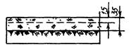 |
|
2. Укрытие поверхности грунта утепляющими материалами - опилками матами, соломой и др. толщиной слоя не менее 10 см (применяется осенью для предохранения грунта от промерзания, если рытье котлованов планируется на зимний период времени) |
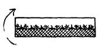 |
|
3. Утепление снегозадержанием - установка снегозадерживающих щитов, устройство валов из снега толщиной не менее 80 см (применяется для приостановки дальнейшего промерзания грунта) |
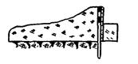 |
|
4. Утепление котлована с фундаментами слоем разрыхленного грунта минимальной влажности. Если подвал с таким утеплением оставляют на всю зиму, то перекрытия должны быть смонтированы, а проемы закрыты (рекомендуется применять в тех случаях, когда грунт из технического подполья не удаляется) |
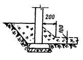 |
|
5. Утепление котлована с фундаментами слоем сухого котельного шлака (если подвал с таким утеплением оставляют на всю зиму, то перекрытия должны быть смонтированы, а проемы - закрыты) |
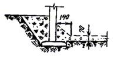 |
|
6. Утепление подошвы фундаментных блоков слоем котельного шлака толщиной 10 см, укладываемого вместо песчаной подготовки, а внутренней поверхности фундаментов - шлаком или золой ТЭЦ (применяется аналогично п. 5) |
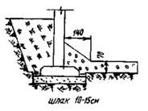 |
8.8. Разработку мерзлых грунтов в зависимости от глубины промерзания следует выполнять:
при глубине промерзания до 0,25 м - экскаватором
при глубине промерзания до 0,35 м - землеройной фрезерной
машиной ЗФМ-2300А
при глубине промерзания до 1,3 м - буровой машиной.
8.9. Пазухи между стенами техподполья (подвала) и откосами котлована, а также траншеи подземных коммуникаций следует засыпать талым грунтом. Уложенные трубы должны быть предварительно засыпаны слоем талого грунта толщиной не менее 0,5 м.
8.10. Укладка труб на мерзлый грунт, за исключением сухих не подверженных пучению песчаных и гравелистых грунтов, недопустима. Дно траншей следует защищать от промерзания до укладки труб, а также в процессе их укладки и испытания.
8.11. Засыпку под полы следует производить талым грунтом с немедленным уплотнением.
8.12. Забивку свай квадратного и прямоугольного сечений разрешается производить без дополнительных мероприятий при глубине промерзания дна котлована: до 0,3 м - для железобетонных свай; 0,15 м - для стальных инвентарных свай.
При большей глубине промерзания необходимо производить или оттаивание грунта в местах забивки свай прогревом с помощью ТЭНов, или пробивку лидирующих отверстий специальной желонкой (например, конструкции СУ-24 треста МФСС), или бурение ямобуром.
8.13. Головы свай, основание под ростверк, выпуски арматуры из свай, арматура и опалубка ростверка должны быть тщательно очищены от наледи и снега, отогреты горячим воздухом или коробами с ТЭНами до положительной температуры.
8.14. В зимних условиях должны быть приняты меры против вмерзания ходовой части копра в грунт и по обеспечению нормальной работы узлов и механизмов копра и молота.
8.15. Если сваи, забитые в грунты, подверженные морозному пучению, остаются на зиму, необходимо защитить сваи и окружающий их грунт от промерзания.
8.16. Отогрев пневматических отбойных молотков должен производиться в гнездах компрессора. Отогрев пневматического инструмента на костре - не разрешается.
8.17. В зимних условиях устраивать фундаменты на естественном основании, включая подготовку под них, следует немедленно вслед за отрывкой грунта и зачисткой грунтового основания, не допуская его промерзания.
8.18. При монтаже фундаментов и стен подвала в зимних условиях необходимо выполнять следующие требования:
раствор для кладки блоков должен иметь температуру не ниже 15° и храниться в утепленных ящиках с крышками. Применение раствора после начала его схватывания не разрешается. Конструкции, смещенные с растворной постели в период ее твердения, должны быть подняты и после очистки опорных поверхностей от старого раствора вновь установлены на свежий раствор;
запрещается применять растворы и бетоны с добавками хлористого кальция или хлористого натрия. Не разрешается применение растворов и бетонов без паспортов и накладных, в которых должны быть указаны наименования и величины противоморозных добавок;
укладка и разравнивание раствора должны производиться перед посадкой элемента на место;
дополнительные мероприятия по усилению конструкций и обеспечению их устойчивости в период оттаивания (повышение марок раствора, закладка металлических связей и т. д.), предусмотренные в связи с производством работ зимой, должны быть указаны в проектах и в ППР и обязательно выполнены в натуре.
8.19. Бетонирование ростверка и монолитной железобетонной плиты должно выполняться в соответствии с требованиями СНиП III-15-76 «Бетонные и железобетонные конструкции монолитные» ГОСТ 7473-76.
Монолитный железобетонный ростверк и монолитную железобетонную плиту рекомендуется бетонировать методом ускоренного термоса и безобогревным методом с применением химических добавок в бетоне. При всех методах бетонирования, рекомендуется изготовлять бетон на портландцементе марки 300 и выше.
Бетон к моменту понижения в нем температуры до 0° должен набрать не менее 70 % марочной прочности, а в случае окончания монтажа всех этажей в зимнее время - не менее 100 %.
Приготовленная с добавкой нитрита натрия бетонная смесь должна при укладке иметь температуру не ниже ±5 °С.
Бетонирование методом ускоренного термоса должно выполняться в соответствии с требованиями «Указаний по технологии бетонирования безобогревным способом монолитных железобетонных конструкций с применением ускоренного термоса» - ВСН-115-75 Главмосстроя.
При бетонировании безобогревным способом следует выполнять требования «Руководства по производству бетонных работ» (М.: Стройиздат, 1975) и ВСН-162-79 Главмосстроя.
8.20. В зимних условиях монолитные и сборно-монолитные железобетонные конструкции цокольного этажа должны быть возведены в соответствии с требованиями глав СНиП III-16-80 и СНиП III-15-76 и рекомендациями «Руководства по производству бетонных работ» (М.: Стройиздат, 1975) и «Руководства по электротермообработке бетона» НИИЖБа (М.: Стройиздат, 1974), а также с требованиями норматива ВСН-159-81 Главмосстроя.
Необходимо учесть, что согласно ВСН-32-77 Госгражданстроя возведение зданий высотой более 5 этажей при отрицательных температурах допускается только на растворах с противоморозными добавками.
8.21. Монтаж элементов должен выполняться комбинированным или безобогревным способом с применением в растворе и бетоне противоморозных добавок нитрита натрия, нитрата натрия и «Сигман» согласно требованиям ВСН-159-81 Главмосстроя.
Монтаж надземной части может быть разрешен по достижении раствором и бетоном в горизонтальных и вертикальных стыках подземной части прочности, указанной в проекте.
8.22. Местные заделки в стенах технического подполья и монолитные участки между настилами перекрытия над техническим подпольем следует бетонировать бетоном марки 200 безобогревным методом с добавкой в бетон кристаллического нитрита натрия. При отсутствии нитрита натрия рекомендуется электропрогрев бетона стержневыми электродами, при этом следует выполнять требования «Руководства по электротермообработке бетона» НИИЖБа (М.: Стройиздат, 1974).
8.23. Все стыки между панелями перекрытий, зазоры между блоками техподполья шириной до 150 мм, кирпичную кладку и монтаж стен следует выполнять на растворе с противоморозной добавкой кристаллического нитрита натрия, руководствуясь «Инструкцией по применению комплексных добавок в цементных растворах при безобогревном монтаже сборных железобетонных конструкций жилых и общественных зданий» ВСН-159-81 Главмосстроя; при этом необходимо повышать марку раствора с противоморозными добавками на ступень при среднесуточной температуре ниже -20 °С.
8.24. Раствор с противоморозными добавками при укладке в стыки должен иметь температуру не ниже +5 °С, для чего ящики для раствора должны быть оборудованы деревянными крышками.
Укладка раствора в стыки со снегом и наледью на поверхностях бетона недопустима. Для предохранения поверхностей бетона от снега и наледи стыки должны быть защищены переносными щитами или рулонными материалами с пригрузом (рубероид, пергамин и т.п.).
В случае образования наледи и снега в стыках поверхности бетона следует тщательно очищать металлическими щетками пли скребками. Запрещается отогревать поверхности бетона паром или водой.
8.25. Работы по антикоррозионной защите сварных соединений в зимних условиях производить в соответствии с «Указаниями по восстановлению после сварки противокоррозионной защиты стальных связей панелей комбинированным покрытием» ВСН-106-75 Главмосстроя, а также в соответствии со СНиП II-28-73* «Защита строительных конструкций от коррозии» и ВСН-141-77 Главмосстроя.
8.26. Для обеспечения необходимого нарастания прочности бетона изделий и раствора в стыках, а также для производства штукатурных работ по отработке сопряжении между сборными элементами следует организовать временный обогрев с помощью калориферов, воздуходувок и других источников тепла. Штукатурные работы в помещениях должны производиться только при положительной температуре. Для сохранения тепла открытые проемы в стенах и перекрытиях должны быть утеплены.
8.27. В зимних условиях при монтаже колонн каркаса подготовленное к бетонированию пространство между колонной и поверхностью стакана башмака следует замоноличивать мелкозернистым бетоном марки 300, тщательно уплотняя его глубинным электрическим вибратором С-727 или пневматическим вибратором С-697 с диаметром рабочей части 34 мм.
8.28. Для быстрого нарастания прочности применяется электропрогрев бетона стержневыми электродами диаметром 6-8 мм, устанавливаемыми в бетон через 0,2 м на всю высоту стакана. Температура бетонной смеси при начале электропрогрева должна быть не ниже +5 °С; при температуре воздуха ниже -10 °С для предохранения смеси от замерзания до включения электропрогрева рекомендуется применять для замоноличивания бетонную смесь с противоморозной добавкой нитрита натрия по ВСН-159-81 и ВСН-162-79 в количестве 6 % от массы цемента - в этом случае электроды устанавливаются через 0,4 м.
8.29. Напряжение в начале электропрогрева следует принимать не более 50 В (особенно при наличии в смеси добавки нитрита натрия), причем должна быть предусмотрена возможность повышения напряжения до 110 В. Открытая поверхность бетона сразу после его укладки в стакан башмака должна быть тщательно укрыта толем или рубероидом и слоем теплоизоляции (опилками, ветошью, шлаковатой и т.п. материалами).
8.30. Электропрогрев бетонной смеси в стакане башмака ведется в две стадии: сначала разогрев бетона со скоростью подъема температуры не более 10 °С в час и затем изотермический прогрев с температурой не выше 50 °С. Для достижения 40 %-ной марочной прочности бетона изотермический прогрев при 50 °С должен продолжаться 14 ч и общий цикл прогрева - 19 ч (5 ч - подъем температуры и 14 ч - изотермический прогрев).
Нарушение рекомендуемого режима электропрогрева, особенно в процессе разогрева бетона (более быстрый подъем температуры и более высокая температура изотермического прогрева), может вызвать трещины в бетоне.
8.31. В целях обеспечения прочности и устойчивости несущих конструкций, возводимых в зимний период либо находящихся в стадии строительства в период весеннего оттаивания (или отогрева) должны быть обязательно выполнены в натуре предусмотренные в проектах мероприятия по усилению конструкций (повышение марок раствора и бетона, закладка металлических связей, порядок обогрева конструкций, устройство временных креплений конструкций и откосов котлована, отвод поверхностных вод от фундаментов, своевременный ремонт подкрановых путей и др.).
9.1. При строительстве подземной части жилых домов повышенной этажности из унифицированных изделий единого каталога должны выполняться правила техники безопасности, предусмотренные главой СНиП III-4-80 «Техника безопасности в строительстве», «Инструкцией по технике безопасности для рабочих, выполняющих работы нулевого цикла», Мосоргстрой, 1982, «Правилами устройства и безопасной эксплуатации грузоподъемных кранов» (М.: Металлургия, 1981), настоящей инструкцией, а также инструкциями по технике безопасности по производимым работам, проектами производства работ, картами безопасности труда рабочих в период монтажа подземной части крупнопанельных жилых домов из изделий единого каталога (Мосоргстрой, 1980), «Технологическими указаниями по монтажу несущих конструкций типовой ячейки каркасно-панельного здания из унифицированных изделий единого каталога» (Главмосстрой, 1974), проектом производства работ.
9.2. Проект производства работ должен содержать конкретные технические решения и основные организационные мероприятия по обеспечению безопасности производства работ и санитарно-техническому обслуживанию работающих в соответствии со СНиП III-4-80, приложением 8 «Состав и содержание основных решений по технике безопасности в проектах производства работ (ППР)».
9.3. Монтаж подземной части крупнопанельных жилых домов и многоэтажных каркасно-панельных зданий необходимо вести в строгом соответствии с проектом производства работ, содержащим следующие решения по технике безопасности и производственной санитарии:
индивидуальные и коллективные средства защиты;
организация рабочих мест, проходов и проездов;
последовательность и способы безопасного ведения технологических операций;
методы и приспособления для безопасной работы;
расположение, зоны действия и опасные зоны механизмов;
временное освещение строительной площадки, проходов, проездов и рабочих мест;
ограждение (обозначение) опасных зон;
состав, количество и расположение бытовых помещений;
способы складирования и строповки строительных материалов и сборных элементов здания.
Выполнение строительно-монтажных работ без проекта производства работ не допускается.
9.4. Ответственность за соблюдение требований по технике безопасности и производственной санитарии при выполнении строительно-монтажных работ на строительстве подземной части жилых домов возлагается на инженерно-технических работников монтажных потоков.
При появлении условий, угрожающих жизни или здоровью работающих, инженерно-технические работники потока должны сразу же прекратить выполнение строительно-монтажных работ на строящемся корпусе, принять меры по устранению возникшей опасности и сделать соответствующую запись в журнале производства работ.
Линейные инженерно-технические работники (мастера), производители работ, старшие производители работ, участковые механики) и другие инженерно-технические работники по списку должностей, утвержденному вышестоящей организацией, обязаны периодически, не реже одного раза в год, проходить проверку знания ими правил техники безопасности и производственной санитарии с учетом характера выполняемых работ.
9.5. На каждой строительной площадке приказом по организации в каждую смену назначаются ответственные за безопасное производство работ по перемещению грузов кранами из числа аттестованных инженерно-технических работников и аттестованные такелажники (стропальщики), имеющие удостоверения о проверке знаний по соответствующим разделам правил и инструкций крановщика и стропальщика.
Табличка с фамилиями ответственных лиц должна быть вывешена на объекте на видном месте участка работ.
Обязанности лиц, ответственных за безопасное производство работ по перемещению грузов кранами, и стропальщиков при монтаже подземной части домов регламентируются в производственных инструкциях, которые должны находиться на строящемся объекте.
Рабочие допускаются к монтажным работам только после прохождения ими инструктажа по безопасности труда с учетом особенностей монтажа подземной части домов повышенной этажности.
Инструктаж по безопасности труда должен производиться для всех рабочих не реже одного раза в три месяца. Машинисты грузоподъемных кранов, такелажники (стропальщики), обслуживающие грузоподъемные механизмы, должны пройти обучение в Учебном комбинате Главмосстроя по специальным программам, сдать экзамены и иметь соответствующее удостоверение.
Ежегодно они должны проходить переаттестацию по правилам безопасной эксплуатации грузоподъемных механизмов.
9.6. Руководители строительно-монтажных организаций обязаны обеспечить рабочих, инженерно-технических работников и служащих спецодеждой и спецобувью в соответствии с действующими нормами и характером выполняемой работы.
9.7. Все лица, находящиеся на строительной площадке, обязаны носить защитные каски установленных образцов. Рабочие и инженерно-технические работники без защитных касок и других необходимых средств индивидуальной защиты к выполнению работ не допускаются. На каждом объекте должен быть необходимый резерв защитных касок.
9.8. Подготовка и ввод в действие санитарно-бытовых помещений и устройств должны быть закончены до начала основных строительно-монтажных работ на объекте.
9.9. На каждом объекте строительства должны быть выделены помещения или места для размещения средств для оказания первой помощи пострадавшим: аптечек с медикаментами, носилок, фиксирующих шин и др.
9.10. Ограждение строительной площадки, устройство временных дорог, коммуникаций и других временных сооружений должны быть выполнены в соответствии с требованиями главы 4 СНиП III-4-80 и решениями проекта производства работ.
9.11. Строительная площадка в населенных местах во избежание доступа посторонних лиц ограждается сплошным забором высотой не менее 2 м. В местах массового прохода людей забор необходимо оборудовать сплошным защитным козырьком под углом 20° к горизонту.
9.12. Строительная площадка, участки работ, а также рабочие места, подъезды, проезды и подходы к ним в темное время суток должны быть освещены в соответствии с «Инструкцией по проектированию электрического освещения строительных площадок» и решениями проекта производства работ. Освещенность должна быть равномерной, без слепящего действия осветительных приспособлений на работающих. Производство работ в неосвещенных местах не допускается, а доступ к ним людей должен быть закрыт.
9.13. У въезда на строительную площадку должна быть установлена схема движения средств транспорта, а на обочинах дорог и проездов - хорошо видимые дорожные знаки. Скорость движения автотранспорта вблизи мест производства работ не должна превышать 10 км/ч на прямых участках и 5 км/ч - на поворотах.
9.14. Проезды, проходы и рабочие места необходимо регулярно очищать, не загромождать, а если они расположены вне зданий - в зимнее время посыпать песком или шлаком.
Проходы с уклоном более 20° должны быть оборудованы трапами или лестницами с ограждениями.
9.15. Складирование и хранение материалов и сборных изделий на стройплощадке должно производиться в соответствии с требованиями проекта производства работ, «Указаний по приемке, складированию и хранению основных строительных материалов, изделий и конструкций на приобъектных и базисных складах Главмосстроя» (ВСН-28-66) и настоящей инструкции.
Прислонять (опирать) материалы и изделия к заборам и элементам временных и капитальных сооружений не допускается.
При строповке и расстроповке изделий для работы на складе необходимо пользоваться лестницей высотой 1,2 м (Мосоргстрой, черт. № 501А). Пользоваться приставными лестницами запрещается.
9.16. Зоны, опасные для нахождения людей во время производства работ, должны быть ограждены и оборудованы хорошо видимыми предупредительными знаками, а в необходимых случаях должна быть обеспечена возможность подачи предупредительных звуковых сигналов.
Надзор за правильностью установки ограждений должен вести мастер или производитель работ. Всякая возможность нахождения людей в опасных зонах должна быть исключена.
Запрещается пребывание людей и проезд автотранспорта в зоне перемещения материалов и изделий кранами.
9.17. Башенные и другие строительные краны и грузоподъемные механизмы следует устанавливать в соответствии со стройгенпланом проекта производства работ.
Краны, экскаваторы и другие механизмы перед эксплуатацией должны быть освидетельствованы и испытаны, должен быть составлен акт в соответствии с требованиями «Правил устройства и безопасной эксплуатации грузоподъемных кранов» (Госгортехнадзор СССР, 1977). Крюки кранов и грузозахватных приспособлений должны иметь предохранительные замыкающие устройства. На складах должны быть вывешены типовые схемы строповки основных деталей, разработанные проектом производства работ, а также указан состав стропальщиков и лиц, ответственных за перемещение грузов кранами.
9.18. Подкрановые пути должны быть выполнены в строгом соответствии с проектом производства работ и «Инструкцией по устройству, эксплуатации и перебазированию подкрановых путей для строительных башенных кранов» СН-78-79 (Госстрой СССР, 1979). Пути крана должны быть заземлены и ограждены. Ходить по путям категорически запрещено.
9.19. Строповку грузов следует производить специально предназначенными для этих целей грузозахватными средствами или инвентарными стропами, предусмотренными проектом производства работ и изготовленными по утвержденным чертежам.
Масса перемещаемых кранами грузов не должна превышать грузоподъемности приспособлений строп, траверс и др. Не допускается применение неиспытанных и неисправных грузозахватных приспособлений. Стропы должны быть снабжены крюками соответствующей грузоподъемности с предохранительными замыкающими устройствами. Все грузозахватные приспособления должны быть испытаны, иметь паспорт завода-изготовителя, штамп ОТК и металлическую бирку (с указанием номера, грузоподъемности и даты испытания).
9.20. На таре должны быть указаны номер, собственная масса, наибольшая масса груза (для транспортировки которого она предназначена) и заводской знак.
В процессе эксплуатации съемные грузозахватные приспособления и тара должны подвергаться техническому осмотру лицом, ответственным за их исправное состояние, и в сроки, установленные требованиями «Правил устройства и безопасной эксплуатации кранов»: для стропов и тары - через каждые 10 дней, для траверс - не реже чем через каждые 6 месяцев.
Результаты осмотра съемных грузозахватных приспособлений и тары необходимо регистрировать в журнале периодического осмотра.
9.21. При разгрузке элементов с транспортных средств шофер обязан выходить из кабины и находиться вне опасной зоны работы крана. Запрещается перемещать груз над кабиной шофера.
При разгрузке запрещается перемещать панелевоз после освобождения панелей от средств крепления. При необходимости перемещения панелевоза, панели вновь должны быть надежно закреплены.
При разгрузке элементов такелажник обязан сойти с транспортного средства сразу же после натяжения строп. При этом команду крановщику на подъем элемента он подает, стоя на земле на безопасном расстоянии от транспортного средства.
9.22. При доставке панелей перекрытий на объект в вертикальном положении перевод их в горизонтальное положение производится только с помощью специального грузозахватного устройства с автоматическим кантователем (Мосоргстрой, черт. № 6118А). Запрещается кантовать панели перекрытия с помощью обычных строп с опиранием панелей на землю.
9.23. При подъеме панелей перекрытия с помощью гидрокантователя необходимо руководствоваться «Инструкцией по эксплуатации гидрокантователя» (Мосоргстрой, 1977).
9.24. Организация рабочих мест при выполнении монтажных и других видов работ по подземной части здания должна обеспечивать безопасность выполнения работ.
Рабочие места должны быть свободными от посторонних предметов и мусора, а в случае необходимости - иметь ограждения, защитные и предохранительные устройства, а также приспособления.
Подача материалов, изделий и узлов оборудования на рабочие места должна осуществляться в технологической последовательности, обеспечивающей безопасность работ. Складировать материалы и изделия на рабочих местах следует так, чтобы они не создавали опасности при выполнении работ и не загромождали проходы.
9.25. Для ограждений перекрытий следует применять надежные инвентарные временные ограждения. Ограждения должны иметь промежуточный элемент по высоте и бортовую доску высотой не менее 15 см. Перила или тросы ограждений должны выдерживать сосредоточенную нагрузку 70 кг. Во время монтажа и демонтажа ограждений рабочие должны пользоваться предохранительными поясами, закрепляемыми за петли перекрытия.
После установки ограждений надежность и правильность их крепления проверяется мастером или производителем работ. Правильность установки ограждения перед каждой сменой должна проверяться бригадиром и мастером.
926. По ходу монтажа все проемы в перекрытии, временно оставшиеся незаполненными, должны закрываться инвентарными сплошными щитами или иметь надежно закрепленные временные ограждения по всему периметру. Шахты лифтов должны перекрываться инвентарными щитами.
Техника безопасности при производстве земляных работ
При земляных работах должны выполняться требования СНиП III-4-80 «Техника безопасности в строительстве»; «Инструкции по технике безопасности для рабочих, выполняющих работы «нулевого цикла» (Главмосстрой, 1982) и других действующих нормативных документов, а также настоящей инструкции и ППР.
9.27. Запрещается применение женского труда на земляных работах.
9.28. До начала производства земляных работ в местах расположения действующих подземных коммуникаций должны быть разработаны и согласованы с организациями, эксплуатирующими эти коммуникации, мероприятия по безопасным условиям труда, а расположение подземных коммуникаций на местности должно быть обозначено соответствующими знаками или надписями.
9.29. Производить земляные работы в зоне действующих подземных коммуникаций следует под непосредственным руководством прораба или мастера, а в охранной зоне кабелей (находящихся под напряжением) или действующего газопровода - кроме того, под наблюдением работников электро- или газового хозяйства.
9.30. При обнаружении взрывоопасных предметов или материалов, земляные работы в этих местах следует немедленно прекратить до получения разрешения от соответствующих органов.
9.31. Перед началом земляных работ на участках с возможным патогенным заражением почвы (свалки, скотомогильники, кладбища и т.п.) необходимо разрешение органов Государственного санитарного надзора.
9.32. Котлованы и траншеи, разрабатываемые на улицах, проездах, во дворах населенных пунктов, а также местах, где происходит движение людей или транспорта, должны быть ограждены защитным ограждением с учетом требований ГОСТ 23407-78. На ограждении необходимо устанавливать предупредительные надписи и знаки, а в ночное время - сигнальное освещение.
Места прохода людей через траншеи должны быть оборудованы переходными мостиками, освещаемыми в ночное время.
9.33. Грунт, извлеченный из котлована или траншеи, следует размещать на расстоянии не менее 0,5 м от бровки выемки.
9.34. Разрабатывать грунт в котлованах «подкопом» не допускается.
9.35. Валуны и камни, а также отслоения грунта, обнаруженные на откосах, должны быть удалены.
9.36. Рытье котлованов и траншей с откосами без креплений в нескальных грунтах выше уровня грунтовых вод или в грунтах, осушенных с помощью искусственного водопонижения, допускается при глубине выемки и крутизне откосов согласно табл. 5.
|
№ пп. |
Виды грунтов |
Крутизна откоса (отношение его высоты к заложению) при глубине выемки, м, не более |
||
|
1,5 |
3 |
5 |
||
|
1. |
Насыпные неуплотненные |
1:0,67 |
1:1 |
1:1,25 |
|
2. |
Песчаные и гравийные |
1:0,5 |
1:1 |
1:1 |
|
3. |
Супесь |
1:0,25 |
1:0,67 |
1:0,85 |
|
4. |
Суглинок |
1:0 |
1:0,5 |
1:0,75 |
|
5. |
Глина |
1:0 |
1:0,25 |
1:0,5 |
|
6. |
Лессы и лессовидные |
1:0 |
1:0,5 |
1:0,5 |
ПРИМЕЧАНИЕ.
При напластовании различных видов грунта крутизну откосов для всех пластов надлежит назначать по наиболее слабому виду грунта.
9.37. Крутизна откосов выемок глубиной более 5 м во всех случаях и глубиной менее 5 м при гидрогеологических условиях и видах грунтов, не предусмотренных п. 9.36 и табл. 5, должна устанавливаться проектом.
При ведении отрывки котлована запрещается:
находиться рабочим под ковшом или стрелой экскаватора;
производить какие-либо работы со стороны забоя;
пребывать в радиусе экскаватора плюс 5 м;
при загрузке автомобилей экскаваторами или кранами шоферу и другим лицам запрещается находиться в кабине автомобиля, не защищенной козырьком. Перемещать грузы над кабиной запрещается;
для спуска в котлован рабочих на откосах устанавливаются лестницы-стремянки с боковыми ограждениями;
при перерывах в работе (независимо от причин и продолжительности) стрела экскаватора должна быть отведена в сторону от забоя, а ковш - опираться на землю.
9.38. При невозможности применения инвентарных креплений стенок котлованов или траншей следует применять крепления, изготовленные по индивидуальным проектам (утвержденным в установленном порядке).
9.39. Производство работ в котлованах и траншеях с откосами, подвергшимися увлажнению, разрешается только после тщательного осмотра производителем работы (мастером) состояния грунта откосов и обрушения неустойчивого грунта в местах, где обнаружены «козырьки» или трещины (отслоения).
9.40. Перед допуском рабочих в котлованы или траншеи глубиной более 1,3 м должна быть проверена устойчивость откосов или крепления стен.
9.41. Котлованы и траншеи, разработанные в зимнее время, при наступлении оттепели должны быть осмотрены, а по результатам осмотра должны быть приняты меры к обеспечению устойчивости откосов или креплений.
9.42. В случаях необходимости выполнения работ, связанных с электропрогревом грунта, должны соблюдаться требования ГОСТ 12.1.013-78.
Прогреваемую площадь следует ограждать, устанавливать на ней предупредительные сигналы, а в ночное время - освещать. Расстояние между ограждением и контуром прогреваемого участка должно быть не менее 3 м.
На участках прогреваемой площади, находящихся под напряжением, пребывание людей не допускается.
9.43. Линии временного электроснабжения к прогреваемым участкам грунта надлежит выполнять изолированным проводом, а после каждого перемещения электрооборудования и перекладки электропроводов следует визуально проверять их исправность.
9.44. При разработке, транспортировании, разгрузке, планировке и уплотнении грунта двумя и более самоходными или прицепными машинами (скреперы, грейдеры, катки, бульдозеры и др.), идущими одна за другой, расстояние между ними должно быть не менее 10 м.
9.45. При разработке грунта взрывным способом необходимо соблюдать «Единые правила безопасности при взрывных работах», утвержденные Госгортехнадзором СССР.
9.46. При механическом ударном рыхлении грунта не допускается нахождение людей на расстоянии ближе 5 м от мест рыхления.
9.47. При производстве работ по устройству свайных фундаментов зданий надлежит руководствоваться «Временной инструкцией по технике безопасности при выполнении свайных работ с применением стационарных и самоходных установок», «Инструкцией по технике безопасности при монтаже стальных и железобетонных конструкций» (Главмосстрой, 1965), «Правилами устройства и безопасной эксплуатации грузоподъемных кранов» (М.: Металлургия, 1981) и настоящей инструкцией.
9.48. До начала строительных работ на объекте инженерно-технический персонал, бригадиры и звеньевые должны подробно ознакомиться со спецификой производства работ и проектами производства работ. Рабочие должны быть проинструктированы и обучены безопасным приемам по всем видам выполняемых ими работ.
9.49. К работам, связанным с забивкой свай, срубкой их и монтажом стальных балок допускаются рабочие-мужчины не моложе 18 лет, прошедшие обязательное медицинское освидетельствование, обученные профессиям копровщика и строповщика с правом работы на высоте, прошедшие курсы по технике безопасности работ, сдавшие экзамены квалификационной комиссии и имеющие соответствующие удостоверения.
9.50. При работе сваебойных установок должны систематически проверяться исправность механизмов, надежность болтовых соединений, состояние стальных канатов и правильность их запасовки.
9.51. Производство каких-либо работ, не имеющих непосредственного отношения к выполняемому технологическому процессу, в опасной зоне запрещается (в частности, запрещается осуществлять в опасной зоне при забивке свай их срубку или при срубке свай монтировать сборные оголовки и др.).
Опасной зоной при производстве свайных работ считается зона вблизи размещения копра с границей, проходящей по окружности, центром которой является место забивки очередной сваи, и с радиусом, равным полной длине копровой стрелы (мачты) плюс 5 м с включением линейной зоны шириной 10 м, расположенной вдоль оси троса для подтаскивания свай от места стоянки копра до места раскладки свай.
Площадка, где производится складирование, перемещение и раскладка свай (перед подтаскиванием их к копру), также относится к опасным зонам
Опасной зоной при срубке голов свай считается круговая зона вблизи срубаемой сваи с радиусом, равным длине выступающей над землей части сваи плюс 5 м.
Все опасные зоны на площадке должны быть обозначены хорошо видимыми предупредительными знаками и надписями.
9.52. Запрещается располагать копровую установку ближе 50 м от места производства работ по выемке котлованов или траншей, а также от мест рыхления грунта (в том числе мерзлого) клин-молотом, шар-бабой, буровыми машинами и другими средствами.
9.53. Запрещается установка и работа сваебойных агрегатов и кранов на свеженасыпном грунте, а также на площадках с уклоном более указанного в паспорте, в инструкции по эксплуатации машины или в проекте производства работ.
9.54. Запрещается в пределах призмы обрушения котлованов траншей и прочих выемок располагать и устанавливать машины, краны, копровые агрегаты, оборудование, а также складировать и штабелировать сваи, панели, строительные детали и материалы.
9.55. Перемещение и установка машин вблизи земляных выемок разрешается при соблюдении величин (см. таблицу) наименьшего расстояния по горизонтали от подошвы откоса выемки до ближайшей опоры машины.
Таблица 6
|
Глубина выемки |
Величина наименьшего расстояния от подошвы откоса до ближайшей опоры машины для ненасыпных грунтов, м |
|||
|
грунт |
||||
|
песчаный или гравелистый |
супесчаный |
суглинистый |
глинистый |
|
|
1 |
1,5 |
1,25 |
1 |
1 |
|
2 |
3 |
2,4 |
2 |
1,5 |
|
3 |
4 |
3,6 |
3,25 |
1,75 |
|
4 |
5 |
4,4 |
4 |
3 |
|
5 |
6 |
5,3 |
4,75 |
3,5 |
При невозможности соблюдения указанных расстояний откос следует надежно укрепить.
Расстояние от крайней опоры машин и оборудования до бровки и крепления выемки должно быть не менее 1 м при всех видах работ.
9.56. Монтаж копра, а также его демонтаж производится по имеющейся в паспорте схеме или по проекту производства работ под непосредственным руководством механика и мастера.
Для выхода из котлованов и траншей по откосам должны быть сделаны стремянки или трапы с боковыми ограждениями. В зимнее время их надлежит очищать от снега и наледи и посыпать песком или шлаком.
9.57. Забивка свай должна производиться в последовательности, указанной в проекте производства работ, и в соответствии с рабочими чертежами проекта.
9.58. Запрещается вести забивку свай в охранной зоне (например, в охранной зоне воздушных линий электропередачи) без согласования с организацией, эксплуатирующей линии.
9.59. Забивка свай вблизи подземных коммуникаций, а также вблизи проложенных электрокабелей и в охранной зоне воздушных линий электропередач производится при наличии наряда-допуска, подписанного главным инженером строительной организации и в присутствии представителя эксплуатирующей организации. При этом допуск бригады к выполнению работ разрешается только после ознакомления (под расписку) всех ее членов с проектом производства работ, рабочим проектом данного объекта и инструктажа на рабочем месте с выдачей наряда на особо опасные работы.
9.60. Оставлять сваи или молот в подвешенном состоянии на тросе копра запрещается.
9.61. Наголовник и молот (или молот, оснащенный наголовником ) опускается на сваю после установки ее на точку забивки и разворота граней специальным ключом по заданным осям.
9.62. При перемещении копра по строительной площадке молот должен находиться в нижнем положении. Перемещение копра с подвешенной сваей запрещается.
9.63. Нахождение людей непосредственно под молотом или подвешенной сваей запрещается.
9.64. Перед пуском молота бригадир (звеньевой) обязан предупредить об этом всех, находящихся у копра, и лично убедиться, что люди находятся на своих рабочих местах. Допуск к рабочим местам посторонних лиц запрещается.
9.65. При погружении железобетонных свай в грунт для предохранения голов свай от разрушения и для предохранения копровщиков от поражения осколками следует применять специальные наголовники с деревянными или войлочными вкладышами-амортизаторами.
9.66. На копровых мачтах должны быть установлены специальные ограничители высоты подъема молота.
9.67. Ремонтировать или смазывать копры и молоты во время их работы запрещается.
9.68. Запрещается оставлять на копровой стреле, молоте и других механизмах копра после их ремонта какие-либо предметы или инструменты.
9.69. Выдергивание или извлечение поврежденных или отклонившихся от проектных допусков свай копрами или копровыми установками запрещается. Отверстия, оставшиеся в грунте после извлечения инвентарных пробных свай, должны быть засыпаны и ограждены.
9.70. Устройство лидирующих скважин должно выполняться в строгом соответствии с рекомендациями проекта. При извлечении из грунта лидирующих устройств с помощью копра копровая стрела должна опираться на грунт.
9.71. Работа копров на слабых или водонасыщенных грунтах в условиях засасывания грунтом ходовых устройств или перемещения копра по воде не допускается. Для обеспечения перемещений и работы копров на слабых или водонасыщенных грунтах в соответствии с требованиями безопасности и нормальной эксплуатации должны быть разработаны проекты, предусматривающие использование специальных заранее заготовленных деревянных щитов, дорожных плит и др.
9.72. При погружении сваи в процессе ее забивки молотом на величину менее 0,1 см от одного удара, работы по забивке сваи следует прекращать, так как такой режим работы копрового и сваебойного оборудования может привести к их поломкам. При необходимости дальнейшей забивки сваи должен быть применен молот с большей погружающей способностью.
9.73. Срубка свай должна выполняться с применением безопасных приемов труда. При срубке забитой сваи должны быть приняты меры, предотвращающие внезапное падение срезанной части сваи (например, страховка чалочными приспособлениями, подвешенными на крюк грузоподъемной машины). При срубке с применением отбойного молотка следует, сколов по углам поперечного сечения сваи бетон, обнажить продольную арматуру и перерезать ее автогеном, после чего пикой отбойного молотка отделить срубаемую часть сваи и удалить ее при помощи грузоподъемной машины.
9.74. Срубка голов сваи на уровне более 1 м от поверхности грунта выполняется с подмостей (конструкция и состояние подмостей должны удовлетворять требованиям правил техники безопасности). Срубка голов свай с помощью приставных лестниц запрещается.
9.75. В зоне срубаемой части и возможного разлета осколков бетона может находиться только рабочий-срубщик.
9.76. Одновременная срубка и валка соседних свай в зоне разлета осколков бетона другим рабочим категорически запрещается.
9.77. К работе с пневматическими молотками могут быть допущены лица, прошедшие медицинское освидетельствование, производственное обучение и имеющие соответствующие удостоверения на право работы с пневматическим инструментом применительно к условиям работы по срубке голов свай.
9.78. Производить сварочные работы на открытом воздухе во время грозы, дождя или снегопада запрещается.
В электросварочных установках должны быть предусмотрены надежные ограждения всех элементов, находящихся под напряжением.
9.79. Запрещается установка стальных балок вблизи неизолированных электропроводов, находящихся под напряжением. В случае необходимости указанные работы должны выполняться под руководством мастера.
Техника безопасности при производстве арматурных работ
9.80. Арматурные работы на строительной площадке должны выполняться в соответствии с требованиями, изложенными в СНиП III-4-80 «Техника безопасности в строительстве», «Руководстве по производству бетонных работ» (М.: Стройиздат, 1975), «Инструкции по технике безопасности», настоящей инструкции и ППР.
9.81. К выполнению арматурных работ допускаются мужчины не моложе 18 лет, прошедшие медицинский осмотр, обученные соответствующей специальности и правилам техники безопасности, сдавшие экзамен и получившие удостоверение на право производства работ.
9.82. К электросварочным работам допускаются рабочие не моложе 18 лет, прошедшие медицинский осмотр, обученные соответствующей специальности и правилам техники безопасности, сдавшие экзамены и имеющие удостоверение электросварщика, удостоверение о проверке знаний правил и техники безопасности и квалификационную группу не ниже II.
9.83. Для защиты окружающих от действия лучей электрической дуги рабочие места электросварщиков должны ограждаться специальными переносными ограждениями (щитами или ширмами).
Щиты, ограждающие сварочный пост, должны устанавливаться с трех сторон (прежде всего, со стороны основных проходов) и легко перемещаться при изменении фронта сварки.
9.84. Запрещается подтаскивать груз при косом натяжении каната. Элементы опалубки, арматурные сетки и отдельные стержни арматурных изделий и арматурно-опалубочных блоков должны быть до подъема скреплены между собой. При подъеме арматурных каркасов, сеток, арматурно-опалубочных блоков необходимо пользоваться оттяжками из прочного пенькового каната или тонкого стального троса.
Переносить поднимаемую арматуру над людьми, а также находиться людям в зоне работы крана при повороте стрелы запрещается.
Снимать стропы с поднятых установленных, но не закрепленных арматурных каркасов и блоков не разрешается.
Оставлять на весу устанавливаемую арматуру запрещается.
9.85. Леса и подмости, как правило, должны быть инвентарными по типовым проектам.
Работать с непроверенных лесов и подмостей, а также с настилов, уложенных на случайные неустойчивые опоры, запрещается.
Во избежание перегрузки лесов и подмостей не допускается хранение на них запасов арматуры.
9.86. При спуске в котлован или установке арматуры с использованием деревянных приставных лестниц ступени (перекладины) должны быть врезаны в тетивы и надежно закреплены стяжными болтами не реже чем через 2 м.
Нижние концы приставных лестниц должны иметь упоры в виде шипов или других тормозных устройств.
Запрещается пользоваться лестницами, скрепленными гвоздями, без врезки перекладины в тетивы. Длина лестниц во всех случаях не должна превышать 5 м.
9.87. При сборке арматуры фундаментов непосредственно у места установки необходимо арматурные стержни подавать в котлован с помощью специальной траверсы или спускать их по приспособленным для этой цели лоткам.
9.88. Во время вязки или сварки вертикально установленных каркасов стоять на ранее установленных стержнях или хомутах запрещается.
9.89. При установке арматуры на расстоянии до 5 м от электрических проводов, находящихся под напряжением, следует обесточить электропроводку и принять меры, исключающие прикосновение арматуры к проводам.
9.90. Установленную арматуру следует обязательно закреплять, оставлять ее без закрепления не разрешается.
Техника безопасности при бетонировании
9.91. Работы по бетонированию ростверка и плиты должны выполняться в соответствии с требованиями СНиП III-4-80 «Техника безопасности в строительстве», инструкциями по эксплуатации машин, настоящей инструкции и ППР.
9.92. При подаче бетонной смеси к месту укладки с помощью крана, бетононасосов и др. механизмов необходимо выполнять требования раздела 3 СНиП III-4-80.
Для подъема краном бетонной смеси в бункерах или бадьях следует проверять их исправность.
Тара для бетонной смеси (бадьи, бункера) должна быть снабжена исправными приспособлениями (замками), не допускающими случайной выгрузки смеси. Стропить бадью за горловину во время выгрузки запрещается.
Расстояние от низа бадьи или контейнера до поверхности, на которую производится выгрузка смеси, не должно превышать в момент выгрузки 1 м.
9.93. К работе с электровибраторами допускаются рабочие-бетонщики, имеющие первую квалификационную группу по знаниям правил электробезопасности. Работать с электровибраторами бетонщик должен только в исправных резиновых сапогах и перчатках.
9.94. Ремонт вибраторов, подводящей электросети, подсоединение, разведение и ремонт проводов должны выполнять только электромонтеры.
9.95. При электропрогреве бетона все электропровода и электрооборудование должны быть надежно ограждены, а корпуса электрооборудования заземлены. Монтировать и присоединять к сети электрооборудование, а также дежурить могут только электромонтеры, имеющие квалификацию не ниже III группы.
Лица, работающие вблизи подогреваемых участков, должны быть предупреждены об опасности поражения электрическим током и дополнительно подробно проинструктированы.
При электропрогреве бетона и железобетона зона электропрогрева должна иметь надежное ограждение, установленное на расстояние не менее 3 м от прогреваемого участка, систему блокировок, световую сигнализацию, предупредительные плакаты.
Обслуживающий персонал должен быть дополнительно проинструктирован. Нейтраль трансформатора, обслуживающего силовую сеть, должна быть заземлена.
В пределах зоны электропрогрева необходимо устанавливать сигнальные лампы, загорающиеся при подаче напряжения на линию. Сигнальные лампы должны подключаться таким образом, чтобы при их перегорании происходило автоматическое отключение подачи напряжения на линию.
На участках электропрогрева и местах установки оборудования для электропрогрева должны быть вывешены предупредительные плакаты и надписи: «Опасно», «Под напряжением» и т.п., а также правила оказания первой помощи при поражении током.
В сырую погоду и во время оттепели все виды электропрогрева на открытом воздухе должны быть прекращены.
Участки, прогреваемые электрическим током, должны находиться под круглосуточным наблюдением квалифицированных электромонтеров.
Пребывание людей на этих участках и выполнение каких-либо работ за исключением измерения температуры не разрешается. Температура измеряется квалифицированным персоналом с применением защитных средств.
На участках, находящихся под напряжением не более 60 В, допускается выполнять электромонтажные работы специальным монтерским инструментом без снятия напряжения с применением диэлектрических перчаток и галош.
Поливка водой бетона, выдерживаемого под электропрогревом, допускается только после снятия напряжения.
Открытая незабетонированная арматура железобетонных конструкций, связанная с участком, находящимся под электронагревом, подлежит заземлению.
Перед включением тока, после каждого перемещения электрооборудования на новое место и при перекладке проводов следует проверять исправность изоляции проводов, защитных средств, ограждений и заземление электрооборудования.
Техника безопасности при монтаже
9.96. При монтаже подземной части жилых домов повышенной этажности из изделий единого Каталога надлежит выполнять правила техники безопасности, предусмотренные СНиП III-4-80 «Техника безопасности в строительстве», «Правилами устройства и безопасной эксплуатации грузоподъемных кранов» (М.: Металлургия, 1981), настоящей инструкцией, инструкциями по технике безопасности, ППР и другими документами, перечисленными в п. 9.1 настоящей инструкции.
9.97. К выполнению монтажных работ допускаются лица не моложе 18 лет, имеющие специальность монтажника, прошедшие обучение безопасным методам и приемам работ в Учебном комбинате Главмосстроя, сдавшие экзамены и получившие соответствующие удостоверения. До прохождения обучения такие лица к самостоятельной работе не допускаются.
В дальнейшем ежегодно должна проводиться проверка знании рабочими безопасных методов производства работ с последующим продлением срока действия удостоверения.
Рабочие допускаются к монтажным работам только после прохождения ими инструктажа по безопасным методам труда с учетом особенностей устройства подземной части дома.
9.98. К работе со строительно-монтажными пистолетами допускаются рабочие (монтажники-операторы строительно-монтажного пистолета) не моложе 20 лет, прошедшие медицинский осмотр, имеющие квалификацию не ниже 4-го разряда и проработавшие на монтажных работах не менее двух лет. Перед допуском к работе они должны пройти специальный курс обучения, сдать экзамены и иметь удостоверение на право пользования пистолетом.
9.99. При возведении зданий на захватке, где ведутся монтажные работы, не допускается выполнение других работ и нахождение посторонних лиц.
Запрещается выполнять строительно-монтажные работы, требующие нахождения людей в одной захватке (по вертикали), над которыми производятся установка и временное закрепление элементов сборных конструкций подземной части здания, а также перемещение сборных элементов и оборудования грузоподъемными средствами.
9.100. Работы, совмещенные с монтажом, разрешается производить только на разных захватках, расположенных не по одной вертикали с монтажной зоной, или в разные с монтажом смены. При этом не допускается переносить грузы и выполнять другие транспортные операции над зонами здания, где ведутся внутренние работы.
При одновременной работе нескольких строительных организаций на строящемся объекте генеральный подрядчик обязан с участием субподрядных организаций разработать и по согласованию с ними утвердить график производства совмещенных работ и мероприятия по технике безопасности и производственной санитарии, обязательные для всех организаций, участвующих в строительстве. Контроль за выполнением графика и мероприятий возлагается на генерального подрядчика.
9.101. При монтаже сборных конструкций подземной части многоэтажных зданий необходимо выполнять следующие требования:
вслед за временным закреплением монтируемых элементов здания в максимально короткий срок в соответствии с технологическими картами должно быть произведено постоянное их закрепление связями, предусмотренными конструктивной частью проекта. Следует обеспечить при установке каждого из элементов полное выполнение всех сварочных работ, не допуская электроприхваток, так как сварка во всех узлах является рабочей, но не установочной;
запрещается класть монтажные приспособления и инструмент на стены или у краев перекрытия;
не допускается не предусмотренная проектом производства работ промежуточная установка сборных элементов на перекрытие;
не допускается оставлять поднятые элементы конструкций и оборудования на весу во время перерывов в работе.
Запрещается пребывание людей на элементах конструкций и оборудования во время их подъема, перемещения и установки. При неисправности крана груз должен быть опущен на землю. В случае невозможности опустить груз, место, над которым он находится, необходимо оградить. При выполнении работ на неогражденных площадках (монтаж панелей наружных стен, панелей перекрытий), а также при установке постоянных и временных ограждений рабочие с помощью карабина предохранительного пояса должны прикрепляться к монтажным петлям надежно установленных конструкций здания, к специально натянутому тросу или за предохранительные верхолазные устройства (ПВУ-2 и др.). Места крепления карабинов предохранительных поясов должны быть заранее подготовлены и указаны мастером или производителем работ;
закрепление монтируемых элементов, расстроповку, устройство креплений и заделку стыков следует производить с использованием инвентарных площадок для сварщиков и монтажников.
9.102. При работе все сигналы машинисту крана должны подаваться только одним лицом - бригадиром монтажной бригады, звеньевым или такелажником-стропальщиком с желтой повязкой на левой руке и в каске оранжевого цвета. Машинист крана должен быть информирован о том, чьим командам подчиняться. Сигнал «Стоп» подается любым работником, заметившим явную опасность.
Между копровщиком, такелажником и монтажниками должна быть устроена надежная радио- или громкоговорящая
связь или же организована сигнализация флажками. Использование дополнительных промежуточных сигнальщиков для передачи сигналов машинисту не допускается.
9.103. Не допускается выполнение монтажных работ на высоте в открытых местах при скорости ветра 15 м/с и более, при гололеде, грозе и тумане, когда нет видимости в пределах фронта работ.
Работы по перемещению и установке вертикальных панелей и подобных им конструкций с большой парусностью следует прекращать при скорости ветра 10 м/с и более.
9.104. Запрещается сбрасывать строительный мусор, отходы и материалы с перекрытий. Сбрасывать мусор без желобов и других приспособлений разрешается с высоты не более 3 м. Места, на которые сбрасывается мусор, следует со всех сторон оградить или установить надзор для предупреждения об опасности.
9.105. При электросварочных работах металлические части электросварочного оборудования, а также свариваемые изделия и конструкции должны быть заземлены. Заземление электросварочных установок выполняется до включения их в электросеть. Все элементы установок, находящиеся под напряжением, должны иметь надежные ограждения.
Необходимо соблюдать условия непрерывности и необходимой токопроводящей способности нулевого провода (обратный провод) сварочных аппаратов во избежание прохода электрического тока через стропы и тросы крана. Все стыки обратного провода должны быть надежно соединены и заизолированы.
Производство электросварочных работ во время дождя и снегопада при отсутствии навесов над электросварочным оборудованием и рабочим местом электросварщика не допускается.
9.106. В зимний период лестничные площадки, марши, перекрытия, проходы, а также инвентарь и приспособления должны быть очищены от снега и наледи. Лестничные марши, площадки, проходы и места работ должны быть посыпаны песком или шлаком. Запрещается удалять снег и наледь водой и паром.
9.107. При приготовлении и применении бетона и раствора с добавками нитрита натрия необходимо руководствоваться требованиями техники безопасности, приведенными в «Указаниях по приготовлению и применению в зимних условиях растворов с добавкой нитрита натрия» (ВСН-41-75, Главмосстрой, 1975) и «Указаниях по приготовлению в зимних условиях бетонов с добавкой нитрита натрия» (ВСН-42-75, Главмосстрой, 1975), а также ВСН-159-79 и ВСН-162-79 Главмосстроя.
Нитрит натрия - ядовитое вещество, попадание его кристаллов или водного раствора в организм человека приводит к отравлению, опасному для жизни. Все работы, связанные с хранением и применением нитрита натрия, необходимо производить в соответствии с требованиями указании, перечисленных в настоящем пункте.
На емкости с раствором нитрита натрия должна быть хорошо видна надпись «Не пить - яд!».
Водный раствор нитрита натрия должен храниться в закрытой таре в запираемом помещении во избежание случайного использования раствора.
9.108. Применение строительно-монтажных пистолетов для пристрелки крепежных деталей к сборным конструкциям допускается только с письменного разрешения главного инженера организации. При этом должны быть предусмотрены меры, исключающие возможность сквозного пробивания конструкций и поражения находящихся вблизи людей отлетающими дюбелями, осколками кирпича, бетона и т.д.
При необходимости забить дюбели в кирпичные, шлакобетонные и бетонные стены и перекрытия необходимо удалить людей, находящихся за этими конструкциями.
Работы по пристрелке деталей следует выполнять строго в соответствии с требованиями «Инструкции по технике безопасности для операторов строительно-монтажного пистолета ПЦ-52-1» (Главмосстрой, 1974).
9.109. Строительная площадка должна быть оборудована необходимыми средствами пожаротушения и предупредительными знаками (плакаты, надписи и др.).
9.110. Горючие и легковоспламеняющиеся жидкости (керосин, бензин и др.) должны храниться в емкостях, закрытых на замок. Емкости должны быть ограждены и находиться от зданий и складов на расстоянии не менее 20 м.
Баллоны с кислородом и ацетиленом следует хранить раздельно в специальных контейнерах.
Карбид кальция следует хранить только в несгораемых помещениях, имеющих естественную вентиляцию.
Склады кислорода, ацетилена и карбида кальция необходимо располагать не ближе 20 м от строящегося здания или временных сооружений в соответствии со стройгенпланом проекта производства работ.
10.1. Порядок сдачи-приемки комплекса сооружений, возводимых в период работ нулевого цикла, устанавливается настоящей инструкцией.
10.2. В комплекс сооружений, подлежащих сдаче-приемке до начала монтажа надземной части зданий, входят сооружения, перечисленные в п. 1.4. В отдельных случаях, если это оговорено в проекте производства работ, до начала монтажа надземной части отдельного здания могут быть не начаты или не завершены следующие работы:
прокладка трубопроводов и кабелей в проходных каналах и технических подпольях (подвалах);
возведение подземных сооружений, а также ТП и ЦТП, расположенных вне монтажной зоны, определенной стройгенпланом.
10.3. Обязательным условием совмещения монтажа надземной части и возведения подземных сооружений, расположенных вне зоны, установленной п. 10.2, является наличие подъезда к зданию, не препятствующего работам по возведению этих подземных сооружений. Без соблюдения настоящего требования сдача-приемка комплекса сооружений считается недействительной.
10.4. При сдаче-приемке комплекса сооружений, возводимых в период работ нулевого цикла, сторонами являются назначенные приказами по тресту (домостроительному комбинату) представители строительной организации, специализированной на работах нулевого цикла и возводящей подземные части зданий, и строительной организации, возводящей надземную часть здания.
10.5. При возникновении разногласий между сторонами для участия в сдаче-приемке приглашаются представители вышестоящих, а также проектных организаций. Окончательное решение с учетом требований настоящей инструкции и конкретной обстановки принимает главный инженер соответствующего производственного управления Главмосстроя или его заместитель.
10.6. Сдача-приемка комплекса сооружений, возводимых в период работ нулевого цикла, производится по акту установленной настоящей инструкцией формы (см. приложение 4).
Инвентарные сваи конструкции НИИМосстроя сечением 30´30 см длиной до 10 м предназначены для пробной забивки, динамических и статических испытаний с целью определения практически возможной глубины погружения свай, уточнения (по сравнению с табличными значениями) величин сопротивления грунтового основания под нижним концом сваи, сил трения и возможного негативного трения грунта по ее боковой поверхности.
Забивка и извлечение инвентарной сваи производятся специальной установкой на базе автомашины или трактора либо обычным копровым агрегатом с применением устройства для облегчения извлечения сложенной сваи из грунта.
Перед забивкой инвентарную сваю следует очистить от наледи и грунта, смазать солидолом трущиеся поверхности внутренних расклинивающих оболочку выступов и собрать в рабочее положение, стянув двумя хомутами. На сваю (рис. 18) следует надеть наголовник 8, с пальцем 7, связывающий оболочку 10 с сердечником 12 и внутренней трубкой 11. Предварительно следует проверить возможность свободного выдвижения внутренней трубы с острием 1 из сердечника и исправность сальника 2.
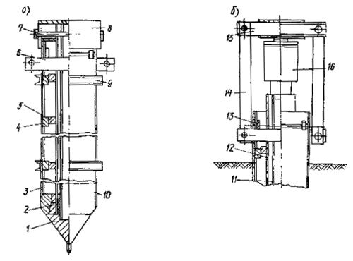
Рис. 18. Стальная складывающаяся свая:
а) свая в сборе; б) испытание сваи гидродомкратом (без анкерных свай); 1 - острие; 2 - сальник; 3, 10 - оболочка; 4 - расклинивающий сухарь; 5 - опорный диск; 6 - траверса; 7 - палец; 8 - наголовник; 9 - хомут; 11 - внутренняя труба; 12 - сердечник; 13 - вкладыш; 14 - тяга; 15 - балка; 16 - домкрат
После забивки сваи и требуемого в соответствии с ГОСТ 5686-78 отдыха ее в грунте производится испытание сваи при помощи гидравлического домкрата.
Подготовка к испытаниям заключается в следующем: удаляется палец 7, крепящий наголовник 8 к свае, и снимается наголовник; на расположенную внутри сердечника 12 трубу 11, соединенную с острием сваи 1, устанавливается стальной штамп и на него - двухступенчатый 100-тонный гидравлический домкрат 16, подключаемый к шлангу насосной станции, снабженной манометром (манометр и домкрат должны быть протарированы); устанавливается анкерное устройство, служащее упором для домкрата, состоящее из балки 15 и тяг 14, закрепляемых пальцами к траверсе 6, упирающейся в оболочку сваи 10; на специальных подставках возле сваи устанавливаются прогибомеры. Максимова, располагаемые симметрично по одному с двух противоположных сторон: два - для измерения перемещений оболочки и два - для измерения перемещений внутренней трубы с острием сваи.
Струны прогибомеров крепятся: две к оболочке сваи, две - к концам штанги, приваренной к штампу, установленному на средней трубе под домкратом. Струны должны быть вертикальны.
Нагрузка на сваю создается в результате подкачки рабочей жидкости в гидравлический домкрат. Упирая в балку анкерного устройства, домкрат передает на оболочку извлекающее усилие и одновременно вдавливает внутреннюю трубу, заканчивающуюся в нижней части острием. На рис. 19 представлена стальная складывающаяся свая, подготовленная к испытанию гидравлическим домкратом.
Испытания стальной инвентарной сваи конструкции НИИМосстроя проводятся по программе, согласованной с проектной организацией. Нагрузку рекомендуется прилагать к свае ступенями по 1/10 от ожидаемой максимальной величины сопротивления грунта под острием сваи с выдержкой во времени в соответствии с программой испытаний, но не менее 5 мин после приложения каждой ступени.
Максимальную силу трения грунта по боковой поверхности сваи для вычисления несущей способности сваи следует определять при перемещении оболочки сваи вверх на 7 мм под действием давления домкрата. Если при этом осадка острия сваи еще не достигла требуемой величины, равной 20 мм, то для возможности дальнейшего увеличения нагрузки на острие оболочку следует расклинить в грунте. Для этого удаляются опорные вкладыши, передающие усилие от траверсы на оболочку, траверса поднимается до упора в сердечник, после чего посредством подкачки домкрата сердечник поднимается и скошенными выступами опорных дисков, упирающихся в расклинивающие сухари, расклинивает оболочку с увеличением ее поперечного сечения к низу. Это увеличивает сопротивление извлечению оболочки из грунта, позволяет повысить давление на острие и определить сопротивление его погружению. Нагрузку следует повышать как и до расклинки ступенями по 1/10 от наибольшей ожидаемой с выдержкой во времени в соответствии с программой испытаний. Острие следует вдавливать на величину не более 20 мм. Сила вдавливания острия, деленная на площадь его поперечного сечения, дает сопротивление грунта Р под нижним концом сваи для определения несущей способности сваи по формуле 7 главы СНиП II-17-77 «Свайные фундаменты. Нормы проектирования».
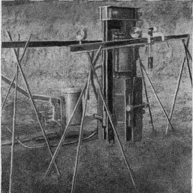
Рис. 19. Складывающаяся свая, подготовленная к испытанию
Разгрузку сваи рекомендуется производить ступенями по 1/5 от максимально достигнутого давления.
В процессе испытаний сваи статическими осевыми нагрузками должен вестись журнал испытаний. После испытания стальная инвентарная свая складывается в грунте путем смещения сердечника вниз относительно оболочки ударами молота. При этом опорные диски сердечника смещаются с расклинивающих сухарей оболочки и ее поперечное сечение уменьшается в результате сближения соответствующих ее четырех элементов уголкового профиля. После складывания свая должна быть тотчас же извлечена, пока грунт не охватил ее вновь.
Перед складыванием после «отдыха» рекомендуется добить сваю на 5-6 см для уменьшения сцепления оболочки с грунтом. После извлечения из грунта сваю следует разобрать, очистить, смазать внутренние поверхности трущихся расклинивающих выступов и, собрав в рабочее положение, стянуть сваю двумя хомутами. Несущую способность Ф висячей забивной инвентарной стальной квадратной сваи следует определять как сумму сопротивлений грунта основания под нижним концом сваи и на ее боковой поверхности по формуле 7 главы СНиП 11-17-77 «Свайные фундаменты. Нормы проектирования».
Ф = m(mrRF + uSmffili), (1)
где m - коэффициент условий работы сваи в грунте, принимаемый m = 1;
R - расчетное сопротивление грунта под нижним концом сваи, т/м2, определяемое по результатам статического испытания;
F - площадь опирания на грунт сваи, м2;
u - наружный периметр поперечного сечения сваи, м;
fi - расчетное сопротивление i-го слоя грунта основания по боковой поверхности сваи, т/м2, определяемое по результатам статических испытаний;
li - толщина i-го слоя грунта, соприкасающегося с боковой поверхностью, м;
mf - коэффициент условий работы грунта на боковой поверхности сваи, принимаемый с учетом возможного негативного трения;
mr - коэффициент условий работы грунта под нижним концом сваи, принимаемый mr = 0,8.
По результатам статических испытаний
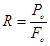
где Po - сопротивление вдавливанию острия, т;
Fo - площадь поперечного сечения острия сваи.
uSmffili = Pт, (3)
где Pт - сила трения по боковой поверхности сваи.
Расчетная нагрузка Р, допускаемая на сваю согласно СНиП II-17-77, должна быть не более
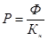
где Ф - несущая способность сваи, т, определенная по формуле (1).
Кн - коэффициент надежности, принимаемый Кн = 1,4.
|
Составляется в 3
экземплярах, из которых один АКТ
|
|
№ корпуса по генплану |
Серия проекта |
Краткая характеристика подземной части |
Протяженность сооружения, м |
|||||
|
канализация и точка (№ колодца) присоединения |
водопровод и точка (№ колодца) присоединения |
газ и точка присоединения |
теплосеть и точка присоединения |
водосток, дренаж |
дорога |
|||
АКТ ПЕРЕДАЧИ ПЛОЩАДКИ ДЛЯ
ПРОИЗВОДСТВА
|
АКТ ТЕХНИЧЕСКОЙ ПРИЕМКИ РАБОТ НУЛЕВОГО ЦИКЛАг. Москва «___» ___________ 198_ г. Комиссия по приемке ____________________________________________________ _______________________________________________________________ в составе: (адрес, район, наименование здания) представителя генподрядчика - треста Мосстрой № ______________________________ главного инженера СУ № _______ тов. ________________________________________ представителей субподрядчика _______________________________________________ 1. Трест Мосфундаментстрой № _______ гл. инж. СУ № ________________________ тов. _____________________________________________________________________ 2. Начальника участка (ст. прораба) тов. _____________________________________ и автора-конструктора от ___________ тов. ____________________________________ I. Предъявлено к приемке _______________секций подвальной части здания, имеющего жилую площадь _______________________________________________ м2, подземные коммуникации и дороги следующей протяженности, м: водопровод _______________________ газопровод ________________________ канализация _______________________ теплосеть _________________________ дороги ____________________________ Строительство начато «___» _____________ 198_ г. Закончено «___» ______________ 198_ г. II. Комиссии предъявляется следующая техническая документация: 1) акт проверки правильности разбивки зданий на участке; 2) акт проверки качества грунтов отрытых котлованов; 3) акт на заложение фундаментов; 4) акты сдачи соответствующим организациям подземных коммуникаций: водопровода газопровода канализации теплосети 5) акты на скрытые работы по всем видам работ нулевого цикла. III. Осмотрев работы в натуре, комиссия устанавливает их выполнение в соответствии с утвержденными проектами, техническими условиями, строительными нормами и правилами и принимает для возведения надземной части здания. Одновременно комиссия отмечает следующие дефекты, недостатки и недоделки, подлежащие устранению СУ № ______________________________________________ треста № ______________________________________________________________ для предъявления здания к приемке застройщиком от генподрядчика.
Представитель генподрядчика ___________________________ Представитель субподрядчика ___________________________ Представитель проектной организации ___________________ |
|
Наименование строительной организации _____________________________ Объект____________________________________________________________ ЖУРНАЛ ЗАБИВКИ СВАЙ(с № _____ по № _____) Начато ____________ Окончание ____________ 1. Система копра __________________________________________________________ 2. Тип молота _____________________________________________________________ 3. Вес ударной части молота _____________________________________________ кгс 4. Давление (воздуха, пара) ______________________________________________ ати 5. Тип и вес наголовника ________________________________________________ кгс СВАЯ № __________________________ (по плану свайного поля) 1. Дата забивки ___________________________________________________________ 2. Марка сваи _____________________________________________________________ 3. Абсолютная отметка поверхности грунта у сваи _______________________________ 4. Абсолютная отметка острия сваи ___________________________________________ 5. Проектный отказ, см _____________________________________________________
Исполнитель ____________________________ Подпись __________________ (фамилия, имя, отчество) |
Наименование строительной организации _______________________________________________________
Объект___________________________________________________________________________________
(с № _____ по № _____)
Начато ____________________ Окончание ________________________
|
№ п/п |
№ сваи |
Тип сваи |
Дата |
Глубина забивки, м |
Тип молота |
Общее количество ударов |
Отказ от одного удара, см |
Примечание |
||
|
по плану свайного поля |
смена |
по проекту |
фактическая |
при забивке |
при добивке |
|||||
|
1 |
2 |
3 |
4 |
5 |
6 |
7 |
8 |
9 |
10 |
11 |
Исполнитель ________________________________________________________
(фамилия, имя, отчество)
Подпись___________________________________________________________
Таблица
|
Вид бетонной смеси |
Коэффициент использования барабана |
Рекомендуемое время нахождения в пути, час |
Режим транспортирования смеси |
|
|
верхняя загрузка |
заданная загрузка |
|||
|
Сухая |
0,5 |
0,52-0,57 |
не ограничено |
А |
|
Смоченная |
0,64 |
0,65-0,69 |
не более 3 |
Б |
|
Готовая |
0,71 |
0,78-0,8 |
не более 2 |
В |
по состоянию на 1982 год
1. Строительные нормы и правила (СНиП):
СНиП III-16-80 «Бетонные и железобетонные конструкции сборные»
СНиП III-15-76 «Бетонные и железобетонные конструкции монолитные»
СНиП 3.02.01-83. «Основания и фундаменты».
СНиП III-2-75 «Геодезические работы в строительстве»
СНиП 28-73* «Защита строительных конструкций от коррозии»
СНиП III-4-80 «Техника безопасности в строительстве»
СНиП III-40-78 «Автомобильные дороги»
СНиП II-36-73 «Тепловые сети»
СНиП III-30-74 «Водоснабжение, канализация и теплоснабжение. Наружные сети и сооружения».
СНиП III-1-76 «Организация строительного производства»
СНиП III-17-78 «Каменные конструкции»
СНиП III-20-74* «Кровли, гидроизоляция, пароизоляция и теплоизоляция».
СНиП II-21-75 «Бетонные и железобетонные конструкции»
СНиП III-18-75 «Металлические конструкции»
СНиП II-17-77 «Свайные фундаменты»
СНиП III-10-75 «Благоустройство территории»
СНиП III-23-76 «Защита строительных конструкций и сооружений от коррозии».
2. «Указания по приемке, складированию и хранению основных строительных материалов, изделий и конструкций на приобъектных и базисных складах Главмосстроя» ВСН 28-66 (Главмосстрой).
3. «Указания по производству земляных работ на жилищно-гражданском строительстве, осуществляемом организациями Главмосстроя» ВСН 73-72 (Главмосстрой).
4. «Инструкция по производству геодезических работ при строительстве крупнопанельных жилых зданий» ВСН 23-77 (Главмосстрой).
5. «Указания по технологии строительства внутриквартальных дорог» ВСН 90-74 (Главмосстрой).
6. «Инструкция по проектированию и производству противокоррозийной защиты стальных связей полносборных жилых, общественных и культурно-бытовых зданий с нормальными температурно-влажностными условиями эксплуатации» ВСН 141-77 (Главмосстрой).
7. «Указания по герметизации стыков при монтаже полносборных здании» ВСН 15-75 (Главмосстрой).
8. Указания по технологии бетонирования безобогревным способом монолитных железобетонных конструкций с применением ускоренного термоса» ВСН 115-75 (Главмосстрой).
9. «Инструкция по применению в тяжелом бетоне комплексных противоморозных добавок на основе жидкого нитрита натрия» ВСН 162-79 ГлавМосстрой).
10. «Инструкция по применению комплексных добавок в цементных растворах при безобогревном монтаже сборных железобетонных конструкции жилых и общественных зданий» ВСН 159-81 (Главмосстрой).
11. «Инструкция по строительству полносборных покрытий городских дорог» ВСН-50-79 (Главмосстрой).
12. «Указания по производству земляных работ в дорожном строительстве и при устройстве подземных инженерных сетей» ВСН 54-80 (Главмосстрой).
13. «Инструкция по применению тощего бетона в конструкциях дорожных одежд» ВСН 51-80 (Главмосстрой)
14. «Указания на строительство внутриквартальных тепловых сетей с битумоперлитной изоляцией» ВСН 16-76 (Главмосстрой).
15. «Инструкция по проведению ускоренных испытаний свай статической нагрузкой» ВСН 157-79 (Главмосстрой).
16. «Инструкция по проведению динамических испытаний свай дизельным молотом» ВСН 156-79 (Главмосстрой).
17. «Инструкция по производству геодезических работ при прокладке внутриквартальных наружных сетей и благоустройстве» ВСН 66-80 (Главмосстрой).
18. «Указания по приготовлению в зимних условиях бетонов с добавкой нитрита натрия» ВСН 42-75 (Главмосстрой).
19. «Инструктивные указания по устройству асфальтобетонных покрытий» ВСН 175-82 (Главмосстрой).
20. «Указания по восстановлению после сварки противокоррозийной защиты стальных связей панелей комбинированным покрытием» ВСН 106-75 (Главмосстрой).
21. «Инструкция по проектированию конструкций панельных жилых зданий» ВСН 32-77 (Госгражданстрой).
22. «Инструкция по проектированию и производству противокоррозийной защиты стальных связей полносборных жилых, общественных и культурно-бытовых зданий с нормальными температурно-влажностными условиями эксплуатации» ВСН 141-77 (Главмосстрой).
23. «Инструкция по оценке качества строительно-монтажных работ» (СН 378-77).
24. «Указания по герметизации стыков при монтаже строительных конструкций» (СН 420-71).
25. «Инструкция по устройству, эксплуатации и перебазированию подкрановых путей для строительных башенных кранов» (СН 78-79).
26. «Инструкция по сварке соединений арматуры и закладных деталей железобетонных конструкций» (СН 393-78).
27. «Инструкция по разработке проектов организации строительства и проектов производства работ» (СН 47-74).
28. «Инструкция по проектированию и монтажу сетей водоснабжения и канализации из пластмассовых труб» (СН-478-80).
29. «Правила разработки, согласования и утверждения проектно-сметной документации на строительство предприятий, зданий и сооружений» (СН 202-81).
30 «Технические условия на трубы и изделия для тепловых сетей, изолированные битумоперлитом» (ТУ 400-2-131-81).
31. «Руководство по совершенствованию организации и проведению контроля и качества при производстве строительно-монтажных работ» ЦНИИОМТП (М.; Стройиздат, 1978).
32. «Руководство по укладке бетонных смесей бетононасосными установками» ЦНИИОМТП (М.: Стройиздат, 1978)
33. «Руководство по зимнему бетонированию с применением метода термоса» (М. Стройиздат, 1978).
34. «Руководство по производству бетонных работ» (М.: Стройиздат 1975).
35. «Руководство по электротермообработке бетона» (М.: Стройиздат, 1974).
36. «Руководство по применению опалубки для монолитных железобетонных конструкций» (ЦНИИОМТП, 1972).
37. «Руководство по производству арматурных работ» (ЦНИИОМТП, 1977).
38. «Технологические указания по монтажу несущих конструкций типовой ячейки каркасно-панельного здания из унифицированных изделий единого каталога» (Главмосстрой, 1974).
39. «Технологические указания по сварке узлов примыканий железобетонных элементов панельных домов повышенной этажности» (Мосоргстрой) «Рекомендации по производству геодезических работ», 1977.
40. Временные технические указания по расчету, проектированию и производству работ по свайным фундаментам гражданских зданий в г. Москве» (Моспроект-1, Фундаментпроект, 1979).
41. «Инструкция по транспортировке и укладке бетонной смеси в монолитные конструкции с помощью автобетоносмесителей и автобетононасосов «Штеттер» и «Томсен» на объектах Главмоспромстроя (Мосоргпромстрой, 1978).
42. «Инструкция о мерах пожарной безопасности при применении легковоспламеняющихся и горючих жидкостей на строительных площадках Главмосстроя» (Мосоргстрой, 1968).
43. «Инструкция по технике безопасности для рабочих, выполняющих работы «нулевого цикла» (Мосоргстрой, 1982).
44. «Инструкция по эксплуатации гидрокантователя» (Мосоргстрой, 1977).
45. «Временная инструкция по технике безопасности при выполнении свайных работ с применением стационарных и самоходных установок».
46. «Карты пооперационного контроля производства работ по устройству монолитных фундаментных плит» (Мосоргпромстрой, 1975).
47. «Технологические карты на устройство внутриквартальных дорог» (Мосоргстрой).
48. «Правила пожарной безопасности при производстве строительно-монтажных работ» (ГУПО МВД СССР, 1979).
49. «Правила технической эксплуатации электроустановок потребителей» (Госэнергонадзор).
50. «Правила производства работ по прокладке и переустройству подземных сооружений в г. Москве» (утверждены решением исполкома Моссовета от 8 августа 1975 года № 2031).
«Правила устройства и безопасной эксплуатации трубопроводов пара и горячей воды» (утверждены Гостехнадзором СССР 10 марта 1971 года).
«Правила технической эксплуатации электрических станций и сетей», (утверждены министром энергетики и электрификации СССР 30 августа 1977 года).
«Правила устройства и безопасной эксплуатации грузоподъемных кранов» (М.: Металлургия, 1981).
Перечисленные документы использованы при составлении настоящей инструкции.
СОДЕРЖАНИЕ